Here is a question that sounds too easy. Your robot’s heading is 350°. You want it at 10°. What is the error?
Subtract and you get 340°, so the controller swings the robot almost all the way round. The sensible answer is 20° the other way. You already know the patch: wrap the difference into (−180∘,180∘]. But notice what the patch admits. Headings do not live on a line. They live on a circle, and subtraction is an operation for lines.
That was one angle. A drone has three, tangled together, and the patches stop working. This chapter shows three ways the tangle bites, proves that one of them cannot be patched by anyone, and then shows the way out that the rest of the book follows.
1.1 The space a rotation lives in
Bolt a frame to a rigid body, the body frame, and another to the world, the world frame. Stack the body’s three axes, written in world coordinates, as the columns of a matrix R. The columns are unit length and mutually perpendicular, and they form a right-handed set. Those two facts are the whole definition.
Nine numbers, six constraints, three degrees of freedom. The set is closed under multiplication and inversion, so it is a group. It is also a smooth, curved, three-dimensional surface sitting inside R9, which makes it a Lie group. Definition 2.2 takes that phrase apart. For now one picture is enough.
Every rotation is a turn by some angle θ∈[0,π] about some unit axis a. Plot it as the point θa in ordinary space. All rotations then fill a solid ball of radius π (Figure 1.1). The center is “no rotation”. Walking outward along a ray turns the body further about that axis.
Figure 1.1. The set of all rotations, drawn as a solid ball. A point θa is the rotation by angle θ about axis a. Half a turn about a and half a turn about −a are the same rotation, so each boundary point is glued to its antipode. A body that keeps turning about a exits the ball at πa and re-enters at −πa.
The catch is at the boundary. Half a turn about a leaves the body exactly where half a turn about −a does. So the point πa and the point −πa are the same rotation, and the ball’s surface is glued to itself antipodally. No flat space has that shape. Hold on to this picture. Every failure in this chapter is a different way of ignoring the gluing.
Now let the body move. Its angular velocity, measured in its own frame, is a vector Ω∈R3. To write the motion of R we need to turn that vector into a matrix.
Definition 1.2(Hat and vee). The hat map sends x∈R3 to the skew-symmetric matrix that performs the cross product with x: x∧=0x3−x2−x30x1x2−x10,x∧y=x×y. The vee map is its inverse, (x∧)∨=x. The skew-symmetric matrices form the vector space so(3).
The kinematics of a rigid body are then one line. (Every symbol and convention of the book is collected in Appendix A.)
R˙=RΩ∧.(1.1)
Look at what is absent. No trigonometry, no denominators, no special cases. Equation (1.1) holds at every attitude. Keep it in mind as the standard the alternatives have to meet.
1.2 Trap one: three angles
Nine numbers for three degrees of freedom feels wasteful, so the first instinct is to use three. The aerospace favorite is yaw, pitch, roll:
R=Rz(ψ)Ry(θ)Rx(ϕ).(1.2)
Differentiate (1.2) and match it against (1.1). Collect the angles as Θ=(ψ,θ,ϕ). The angle rates Θ˙=(ψ˙,θ˙,ϕ˙) and the body rate are related by a matrix that depends on where you are:
To integrate the angles you need E−1, and E−1 carries a factor 1/cosθ. Pitch the nose straight up and it is gone.
Thought experiment 1.1(A gimbal you can hold). Picture three nested rings (Figure 1.2). The outer ring swivels about a vertical axis: yaw. The middle ring pivots inside it: pitch. The inner ring pivots inside that: roll. Each ring’s axle is carried by the ring outside it.
Now pitch the middle ring by 90°. The roll axle, which rides on the middle ring, swings up until it points along the yaw axle. You now have two rings that do the same thing and no ring that does the third thing. One direction of rotation has become impossible to command. Nothing is wrong with the body. The rings have run out of directions.
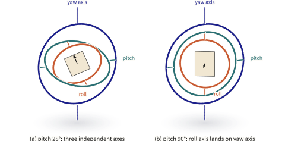
Figure 1.2. Three nested gimbals realize yaw, pitch and roll. (a) At a generic attitude the three axles span all directions. (b) At 90° of pitch the roll axle has rotated onto the yaw axle. The mechanism has lost a degree of freedom, and detE=−cosθ has reached zero.
This is gimbal lock, and it is not a historical curiosity. Apollo’s inertial platform had three gimbals. During Apollo 11, after Houston warned that a maneuver had come close to lock, Michael Collins asked mission control to send him a fourth gimbal for Christmas.11 The exchange is in the Apollo 11 air-to-ground record at about 105 hours mission time, and is discussed in the Apollo Lunar Surface Journal.
Example 1.1(A calm body, a panicking chart). A quadrotor pitches up through a maneuver with body rate Ω=(0,0.5,0.5) rad/s. Its angular speed is ∥Ω∥=0.71 rad/s, about 40° per second. Unhurried. Take roll ϕ=45∘ and let the pitch reach 89∘. Solving (1.3) for the yaw rate gives
ψ˙=cosθΩ2sinϕ+Ω3cosϕ=0.017450.707=40.5rad/s,
which is 2300° per second. The body is doing nothing of the kind (Figure 1.3). A controller that feeds back on ψ˙ sees a violent spin and responds with a violent torque.
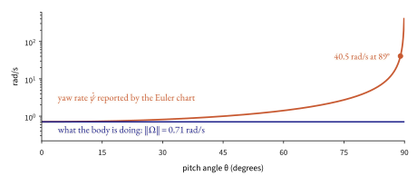
Figure 1.3. The same motion, described two ways. The body’s angular speed is constant. The yaw rate of the Euler chart grows like 1/cosθ and is unbounded at 90° of pitch.
You might try a different angle order. It moves the singularity and does not remove it. The ZXY order used for legged robots locks at 90° of roll instead. This is a theorem and not bad luck: no three numbers can cover SO(3) smoothly without a singularity somewhere.22 Stuelpnagel (1964) showed that three parameters cannot give a global nonsingular parametrization of the rotation group, and that five is the least number that can give a one-to-one global one. The ball of Figure 1.1 says why. A flat three-dimensional chart cannot reproduce that antipodal gluing.
There is a second defect, quieter and just as damaging.
Thought experiment 1.2(Two labs, one robot). Two labs test the same robot with the same controller, τ=−Kp(Θ−Θd)−KdΘ˙. Lab A’s world frame has z pointing up. Lab B mounted the motion-capture system sideways, so its world x points up. The robot, the target and the physical error are identical. Do the two controllers command the same torque?
They do not. Rotate the world frame by Y and the attitudes become YR and YRd. The physical error, Rd⊤R, is unchanged because (YRd)⊤(YR)=Rd⊤R. But the Euler angles of YR are not the Euler angles of R plus a constant, so the difference Θ−Θd changes. Lab B’s robot behaves differently for no physical reason.
A control law whose output does not depend on the choice of world frame is called left-invariant. Euler-angle feedback is not. We will insist on invariance from now on, because a controller that is sensitive to how you bolted down your cameras is not a law about the robot.
1.3 Trap two: four numbers
Quaternions are the standard fix. A unit quaternion q=(q0,qv), with scalar part q0, vector part qv∈R3 and q02+∥qv∥2=1, is a point on the three-sphere S3. The rotation by angle θ about axis a is
q=(cos2θ,sin2θa),R(q)=I+2q0qv∧+2(qv∧)2.(1.4)
The kinematics q˙=21q⊗(0,Ω) have no singularity. Four numbers and one constraint beat nine numbers and six. So what is the catch?
It is the half angle in (1.4). Turn the body through a full 360° and θ/2 has only reached 180°, so q has arrived at −q, not back where it started. Since R(q) is quadratic in q, the two give the same matrix:
R(q)=R(−q).
Every attitude has two quaternion names. S3 wraps around SO(3) twice, a double cover.
Thought experiment 1.3(The plate trick). Balance a plate on your upturned palm. Rotate it a full turn about the vertical, keeping it level, by passing your hand under your armpit. The plate is back where it started. Your arm is not: it is twisted. Now do a second full turn in the same direction, this time swinging your hand over your head. The plate is back again, and your arm has untwisted.
Your arm is keeping track of the quaternion. One turn takes q to −q: same plate, different arm. Two turns bring it home. The plate cannot tell the difference. A controller that works with q can.
Here is how that becomes a failure. To hold the attitude at the identity, the natural quaternion law is
τ=−kpqv−kdΩ.(1.5)
It drives qv to zero, with q0→+1. But q0=−1 is the same attitude, and this law treats it as a place to flee from.
Example 1.2(Ten degrees or three hundred and fifty). A body with inertia J=diag(0.05,0.05,0.10) kg·m² sits at rest, 10° of yaw away from the target. The estimator may report either of the two valid quaternions:
q=(0.9962,0,0,−0.0872)or−q=(−0.9962,0,0,0.0872).
Apply (1.5) with kp=2, kd=0.6. From q the body turns 10° and stops. From −q it turns 350° the other way to reach the same place (Figure 1.4), and spends 48 times the control effort ∫∥τ∥2dt doing it. Same robot, same physical state, same controller. Only the sign the estimator happened to choose differs.
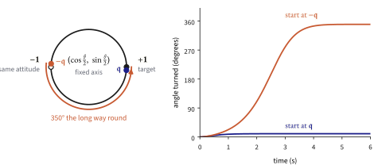
Figure 1.4. Unwinding. Left: for rotations about one fixed axis, the quaternion lives on a circle that the attitude traverses at half speed, so +1 and −1 are the same attitude. The law (1.5) only accepts +1. Right: the two simulated responses of Example 1.2.
This is unwinding, named and analyzed by Bhat and Bernstein (2000). The obvious patch is τ=−kpsgn(q0)qv−kdΩ, which always takes the short way. It also makes the torque jump when q0 crosses zero, at 180° of error. Sensor noise there flips the sign back and forth and the motors chatter. Fixing that needs memory: a hysteresis switch, which makes the controller hybrid (Mayhew, Sanfelice and Teel, 2011).
So the patch works, at the price of a discontinuity. Is there a smarter continuous law that avoids both problems? The next section shows there is not, for any representation, and the reason has nothing to do with quaternions.
1.4 The obstruction nobody can engineer around
Go back to the heading on a circle. Suppose a continuous feedback law makes the target heading asymptotically stable. Just clockwise of the target, the flow must push counterclockwise. Just counterclockwise of it, the flow must push clockwise. Now walk around the circle from one side of the target to the other. The flow starts out pointing one way and ends up pointing the other. It is continuous, so somewhere it passes through zero.
That zero is a second equilibrium (Figure 1.5, left). A trajectory that starts there never reaches the target. You did not design it and you cannot remove it. The intermediate value theorem put it there.
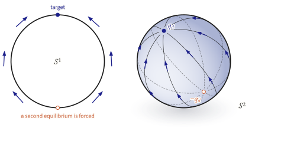
Figure 1.5. Left: on a circle, any continuous flow with a stable target must vanish somewhere else. Right: the same on the sphere. Under ω=−keq every point flows to qd along a great circle, except the antipode −qd, which is an equilibrium.
The general statement replaces the circle with any compact configuration space.
Theorem 1.3(Bhat and Bernstein, 2000). Let the state space be a vector bundle over a compact manifold without boundary, for example the attitudes and angular velocities of a rigid body. Then no continuous time-invariant vector field on it has a globally asymptotically stable equilibrium.
The proof idea fits in three sentences. The set of states that converge to an asymptotically stable equilibrium can be shrunk continuously to that equilibrium by running the flow, so it is contractible. If the equilibrium were globally stable, that set would be the whole state space. But a space built over the glued ball of Figure 1.1, or over a sphere, has loops and shells that cannot be shrunk to a point.
This changes what we should ask of a controller. Global asymptotic stability with continuous feedback is off the table for attitudes, for any representation and any cleverness. The best possible continuous result is almost-global stability: every initial condition converges except a thin set, of measure zero, that drains into the extra equilibria. Those equilibria are unstable, so noise knocks the state off them. A good geometric controller achieves exactly this, and says so honestly. Theorem 6.2 is the precise statement.33 On SO(3) a smooth function with nondegenerate critical points has at least four of them. Koditschek (1989) built attitude error functions with exactly four: the target, and three half-turn attitudes that are unstable.
Compare that with the quaternion law of Example 1.2. It also has an extra equilibrium, at q0=−1. But that point is the target attitude. The law has placed its unavoidable bad point on top of the place you want to be. The theorem says an unstable equilibrium must exist somewhere. It does not say you must put it there.
1.5 The way out: measure error on the manifold
The three failures have one cause. Each takes a difference of labels, of angles or of quaternion components, and treats it as the error. The remedy is to build the error from the rotations themselves.
Start with a rule the answer must obey. The physical discrepancy between attitude R and target Rd is the relative rotation Rd⊤R: how the body is turned as seen from the target frame. It equals I exactly when they agree, and it passes the two-labs test. So build everything from Rd⊤R.
Definition 1.4(Attitude error). For R,Rd∈SO(3), the error function, error vector and velocity error are ΨR=21tr(I−Rd⊤R),eR=21(Rd⊤R−R⊤Rd)∨,eΩ=Ω−R⊤RdΩd.(1.6)
Each piece has a plain reading. If Rd⊤R is a turn by angle θ about axis a, then
ΨR=1−cosθ,eR=sinθa.(1.7)
ΨR is a height: zero at the target, rising to 2 at half a turn away. It plays the role that 21∥x−xd∥2 plays for positions. The vector eR is its slope. Nudge the attitude by a small body-frame rotation η, so that δR=Rη∧, and the height changes by
δΨR=eR⋅η.
So eR points uphill and −eR is the torque direction that reduces the error fastest. That is a proportional term, derived instead of guessed.
The velocity error needs one more idea. Ω is expressed in the body frame and Ωd in the target frame. These are different frames, so subtracting the components directly compares unlike things. The matrix R⊤Rd re-expresses Ωd in the body frame first. It is our first transport map, and Section 3.4 explains why it has to be there. With it, the two errors fit together exactly as position and velocity error do:
dtdΨR=eR⋅eΩ.(1.8)
Example 1.3(The error at gimbal lock, and at half a turn). Take Rd=I and pitch the body to 90°, where the Euler chart broke: R=Ry(2π)=00−1010100,ΨR=21(3−1)=1,eR=(0,1,0). Nothing happens. The error is finite and points about the pitch axis, as it should.
Now take half a turn about the first axis, R=diag(1,−1,−1). Then ΨR=2, the maximum, and R is symmetric so eR=0. This is the extra equilibrium that Theorem 1.3 promised. It sits at the farthest possible attitude from the target, which is the right place for it.
The same construction works for a direction. A cable, a thrust axis or a pendulum rod is a unit vector q∈S2, moving as q˙=ω×q.
Definition 1.5(Direction error). For q,qd∈S2, Ψq=1−q⋅qd,eq=qd×q,dtdΨq=eq⋅ω(qd fixed).(1.9)
Again Ψq=1−cosθ for the angle θ between the two directions, and ∥eq∥=sinθ. The vector eq lies in the tangent plane at q, and the feedback ω=−keq moves q straight along the great circle toward qd (Figure 1.6). The one equilibrium besides the target is the antipode −qd, and it is unstable: in terms of the angle, the closed loop is θ˙=−ksinθ.
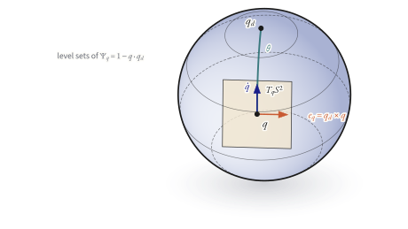
Figure 1.6. Error on the sphere. Level sets of Ψq are circles of latitude about qd. The error vector eq=qd×q lies in the tangent plane at q, perpendicular to the great circle through q and qd. The feedback ω=−keq produces the velocity q˙ along that great circle.
Pitfall(The restoring torque fades near half a turn). Equation (1.7) has a consequence worth knowing before you fly. The restoring torque is proportional to ∥eR∥=sinθ. It grows up to 90° of error and then shrinks, reaching zero at 180°. A body flipped almost upside down feels almost no restoring torque, and may linger there. Mueller (2018) analyzes this for multicopters and shows the closed loop can stay near a large error for an arbitrarily long time. It is the price of a smooth error function. Section 3.3 compares the alternatives, which reshape ΨR so that the push does not fade, and Figure 3.3 and Figure 3.4 show what each one costs. Section 6.3 measures what the fading costs a tracking controller: a fixed delay for every factor of ten closer to half a turn (Figure 6.3). Section 7.7 measures the same effect on a regulator built by linearization.
1.6 Where this leaves us
We now have the pattern for the whole book. Find the space the configuration lives on. Build errors, velocities and derivatives from the objects themselves. Choose coordinates only to compute, never to define.
The pieces we have used so far were pulled out of a hat: the hat map, the vector eR, the transport map R⊤Rd. The next two chapters derive them. Chapter 2 sets up the manifolds a robot needs, and Chapter 3 explains how to take derivatives and compare velocities on them. After that the same handful of tools gives equations of motion without angles (Chapter 4), controllers with almost-global guarantees (Chapter 6), linearizations that are valid everywhere (Chapter 7), estimators whose error dynamics do not depend on the state, and optimizers that never leave the manifold (Chapter 13).
Exercises
Exercise 1.1. Starting from (1.2), compute (R⊤R˙)∨ and confirm (1.3), including detE=−cosθ. Then repeat for the order R=Rz(ψ)Rx(ϕ)Ry(θ) and find where it is singular.
Exercise 1.2. Make the two-labs experiment concrete. Pick R, Rd and a world-frame change Y=Rx(0.9). Compute Θ−Θd before and after the change, and confirm that eR is unchanged.
Exercise 1.3. Reproduce Example 1.2 in the notebook. How does the ratio of control effort between the two starts depend on kd? Then implement the sgn(q0) patch, add measurement noise, and start the body at 179° of error.
Exercise 1.4. Write out the circle argument of Section 1.4 as a proof. Where does it use continuity? Give a discontinuous law on the circle that is globally asymptotically stable, and say what goes wrong with it under noise.
Exercise 1.5. Prove (1.7) using Rodrigues’ formula Rd⊤R=I+sinθa∧+(1−cosθ)(a∧)2 of (2.5). Deduce ∥eR∥2=ΨR(2−ΨR), then prove (1.8).
Exercise 1.6. For the sphere, show that ω=−keq gives θ˙=−ksinθ, where θ is the angle between q and qd. Conclude that −qd is an unstable equilibrium. How long does it take to get from θ=179∘ to θ=1∘?
Notes and sources
The comparison of Euler-angle and geometric formulations follows Siravuru (2019, ch. 4), who carries it out for a 3D pendulum over a grid of initial attitudes. Chaturvedi, Sanyal and McClamroch (2011) is the best single survey of rigid-body attitude control and of the pitfalls described here. The error functions (1.6) are those of Bullo and Lewis (2005) and Lee, Leok and McClamroch (2010).
Mathematics is the art of giving the same name to different things.
A quadrotor carries a load on a cable one meter long. Your simulator stores the cable’s direction as a unit vector q and its angular velocity as ω. The load swings steadily at 2 rad/s. Every hundredth of a second the simulator updates q←q+h(ω×q). After ten seconds, how long is the cable?
One meter, surely. The simulator disagrees. It reports ∥q∥=1.22, and the load hangs 22 cm further away than the cable allows.
The arithmetic is not at fault, and a smaller step only slows the growth. Each update moves q in a direction that is correct at that instant, and still lands off the sphere. To see why, and to find an update that cannot do this, we need to know what kind of object q is, and what kind of object its velocity is. They are not the same kind.
2.1 Curved sets and their velocities
Start with the heading that opened Chapter 1. A heading is a point on the unit circle,
S1={q∈R2:q⋅q=1}.
Two numbers, one constraint, one degree of freedom. Let the heading move along a curve q(t) that stays on the circle, and differentiate the constraint:
dtd(q⋅q)=2q⋅q˙=0.
The velocity is perpendicular to the position. At each point the allowed velocities form a line, the tangent line there. With Λ=[01−10], the quarter turn of the plane, each one is q˙=ωΛq for a single number ω.
The cable direction lives one dimension up, on the sphere S2={q∈R3:q⋅q=1}. The same differentiation gives the same conclusion, q⋅q˙=0. The allowed velocities at q now fill a plane (Figure 2.1).
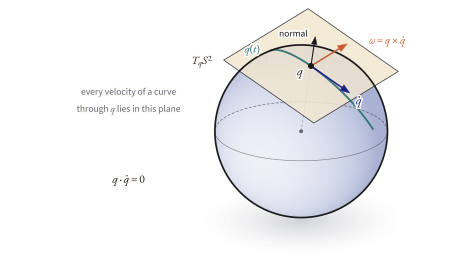
Figure 2.1. The tangent plane to the sphere at q. The teal curve q(t) stays on the sphere, and its velocity q˙ lies in the plane perpendicular to q. So does the angular velocity ω=q×q˙, which is q˙ turned a quarter turn about the normal.
Thought experiment 2.1(Standing on a planet). Stand on a small, perfectly round planet. You can walk north, east, or any mixture. You cannot walk up. Every velocity available to you lies in the plane of your horizon.
Fly to another spot and the horizon tilts with you. A walker near the pole and a walker on the equator both say “I am heading north at 1 m/s”. Those are different arrows in space, lying in different planes.
The circle and the sphere are instances of one idea.
Definition 2.1(Manifold and tangent space). Let c:Rn→Rk be a smooth function whose Jacobian c′(x) has rank k at every point of the set M={x∈Rn:c(x)=0}. Then M is a manifold of dimension n−k: near each of its points it looks like a piece of flat Rn−k. A tangent vector at x∈M is the velocity x˙(0) of a curve x(t) that stays in M and passes through x at t=0. The tangent vectors at x form the tangent spaceTxM={v∈Rn:c′(x)v=0}, a vector space of dimension n−k.
For the sphere, c(q)=q⋅q−1 and c′(q)=2q⊤, which is never zero on the sphere. So n=3, k=1, the dimension is 2, and TqS2={v:q⋅v=0}, the tangent plane at q.
The definition draws a line that code tends to blur. A configuration is a point of a curved set. A velocity is a vector in a flat space attached to that point. Adding one to the other, as the simulator did, gives something that belongs to neither.
On the sphere, every tangent vector at q is a cross product:
q˙=ω×q,ω⋅q=0,ω=q×q˙.(2.1)
The vector ω is the angular velocity of the direction. A component of ω along q would spin the cable about its own axis, and ω×q does not see it, so we set it to zero. Note the count: three numbers in ω, one constraint, two degrees of freedom. On the sphere the constraint cannot be shaken off. Section 2.5 explains why.
Rotations are harder to picture. The same differentiation works on them, and it turns up something the sphere does not have.
2.2 Rotations: a manifold you can multiply
The rotation group of Definition 1.1 fits Definition 2.1. A matrix has nine entries. R⊤R=I is a symmetric matrix equation, so it is six constraints, and 9−6=3. The condition detR=+1 removes no dimension. It selects one of two disconnected pieces.
For the tangent space, differentiate R⊤R=I along a curve:
R˙⊤R+R⊤R˙=0.
So R⊤R˙ is skew-symmetric. By Definition 1.2 it is Ω∧ for some Ω∈R3, and
TRSO(3)={RΩ∧:Ω∈R3}.(2.2)
So the kinematics R˙=RΩ∧ of (1.1) are not a modeling assumption. They say that R˙ is tangent to SO(3).
Compare (2.2) with the sphere. At the identity the tangent space is so(3). At any other R it is the same space multiplied by R. One fixed copy of R3 labels the velocities at every attitude, with no constraint on Ω. Multiplication is the reason: composing with R carries the neighborhood of the identity onto the neighborhood of R, velocities included.
Definition 2.2(Lie group and Lie algebra). A Lie group is a manifold that is also a group, with smooth multiplication and inversion. Its Lie algebra is the tangent space at the identity: the velocities with which a curve can leave the identity.
The circle is a Lie group too. Identify the point at angle θ with the planar rotation by θ in SO(2), and multiplication adds angles. Its Lie algebra is the line {ωΛ}. The three-sphere S3 of unit quaternions from Section 1.3 is a third: four numbers, one constraint, quaternion multiplication, and a Lie algebra of pure quaternions (0,x), x∈R3. It covers SO(3) twice, and its kinematics q˙=21q⊗(0,Ω) are (1.1) one level up.
2.2.1 Two velocities for one motion
There are two ways to carry a velocity back to the identity. Multiply R˙ by R⊤ on the left, or on the right:
R˙=RΩ∧=ω∧R,ω=RΩ.(2.3)
Ω is the body angular velocity: the spin resolved along the body’s own axes, which is what a gyroscope reports. ω is the world-frame angular velocity: the same spin resolved along the world axes. (The robotics literature also calls it the spatial angular velocity.) One physical arrow, two frames. Passing between the two forms of (2.3) uses an identity worth memorizing:
Rx∧R⊤=(Rx)∧for all R∈SO(3),x∈R3.(2.4)
The left side changes the frame of the matrix x∧ by conjugation. The right side changes the frame of the vector x. They agree. Conjugation by a group element, acting on the Lie algebra, is the adjoint, AdRx∧=Rx∧R⊤. On SO(3), in vector form, AdR is just the matrix R. The adjoint is the change of frame for velocities.
Thought experiment 2.2(A phone on a turntable). A phone’s axes are x across the screen, y along its long side and z out of the screen. Lay it flat on a turntable that spins at 0.5 rad/s about the vertical. Its gyroscope reads Ω=(0,0,0.5): all of the spin is along the axis that comes out of the screen. Now stand the phone upright, long axis vertical, and spin the turntable again. The gyroscope reads Ω=(0,0.5,0).
A camera on the ceiling sees no difference. In the world frame the angular velocity is ω=(0,0,0.5) both times. The phone changed its frame, and Ω=R⊤ω changed with it.
We can now describe a rotation in progress. We cannot yet say where it ends up. If the gyroscope reads a constant Ω for t seconds, what is R?
2.3 From a velocity to a rotation: exp and log
With Ω constant, R˙=RΩ∧ is a linear differential equation with constant coefficients. Its solution is a matrix exponential:
R(t)=R(0)exp(tΩ∧),exp(A)=I+A+2!1A2+3!1A3+⋯
Write tΩ=θa with a a unit vector. Since (a∧)3=−a∧, the powers cycle, and the series sums to a sine and a cosine.
Proposition 2.3(Exponential and logarithm on SO(3)). For a unit vector a and an angle θ, exp(θa∧)=I+sinθa∧+(1−cosθ)(a∧)2.(2.5) This is the rotation by θ about a. Conversely, a rotation R with trR=−1 is exp(θa∧) for exactly one θa with θ<π, given by θ=arccos(2trR−1),θa=log(R)∨=2sinθθ(R−R⊤)∨,(2.6) with the factor θ/(2sinθ) read as 21 at θ=0.
Equation (2.5) is Rodrigues’ formula. The map exp wraps the flat space so(3) onto the curved group. Figure 2.2 shows the same wrapping where you can see it, on the circle and the sphere. On the sphere the formula is
expq(v)=cos∥v∥q+sin∥v∥∥v∥v,v∈TqS2:
leave q in the direction v and follow the great circle for a distance ∥v∥.
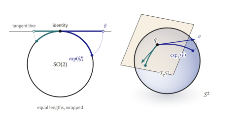
Figure 2.2. The exponential map wraps a tangent space onto the manifold, keeping lengths along each ray from the base point. Left: the tangent line at the identity of SO(2). A segment of length θ lands on the arc of length θ. Right: a tangent vector v at q∈S2 lands on the great-circle arc of length ∥v∥ that leaves q in the direction of v.
Example 2.1(A quarter turn about a diagonal). A body starts at R=I and turns at Ω=2π(1,1,0)/2 rad/s for one second. Its axis is a=(1,1,0)/2 and its angle is θ=π/2, so sinθ=1 and 1−cosθ=1. Equation (2.5) gives R=I+a∧+(a∧)2=0.50.5−0.7070.50.50.7070.707−0.7070. The third column says the body’s e3 axis now points along (0.707,−0.707,0). Going back, trR=1 gives θ=arccos0=π/2, and 2θ(R−R⊤)∨=(1.111,1.111,0)=θa.
You have met the image of log already. It is the solid ball of Figure 1.1: each rotation plotted at its rotation vector θa. That ball is the Lie algebra, cut off at radius π. At θ=π the formula (2.6) divides by sinπ=0, and exp(πa∧)=exp(−πa∧), so the logarithm has two answers. The flat algebra matches the curved group near the identity and fails half a turn away. Any method that works in logarithm coordinates inherits that limit.
There is a second limit. If rotations behaved like translations, exp(x∧)exp(y∧) would equal exp((x+y)∧) and rotation vectors would add. They do not.
2.4 Order matters: the bracket
Thought experiment 2.3(A book, two quarter turns). Lay a book on the desk, cover up, spine on your left. Fix three axes to the desk: x to your right, y away from you, z up. Turn the book 90° about x, then 90° about z. It ends up standing like a book on a shelf, cover facing right, spine upright.
Start again, and turn 90° about z first, then 90° about x. Now the cover faces you and the spine lies level, underneath (Figure 2.3). Same two turns, different attitude. The two results are 120° apart.
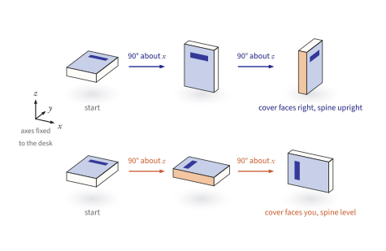
Figure 2.3. The same two quarter turns in two orders. The dark block marks the top of the front cover and the tan face is the spine. The final attitudes are 120° apart.
Quarter turns are large. Now go small. Rotate by an angle ϵ about a unit axis a, then about another unit axis b, then undo the first, then undo the second. If rotations commuted, you would be back at the start. Instead:
A rotation is left over. Its axis is a×b, a direction you never turned about, and its size is second order. With a=e1, b=e2 and ϵ=0.1 rad (about 5.7°), the leftover is a rotation of 0.0100 rad, or 0.57°, almost exactly about e3.
The leftover is measured by the matrix commutator, and on so(3) that is an old friend:
[x∧,y∧]=x∧y∧−y∧x∧=(x×y)∧.(2.8)
This is the Lie bracket. With it, so(3) is R3 with the cross product. The bracket is what survives in the flat algebra of the group’s failure to commute. It is why rotation vectors do not add: for small x and y,
log(exp(x∧)exp(y∧))∨=x+y+21x×y+⋯
On SO(2) the bracket is zero. Planar rotations commute, angles add, and planar robots are spared most of this book’s trouble. In three dimensions the bracket is everywhere, starting with the term Ω×JΩ in Euler’s equation (4.8), where J is the inertia matrix.11 The bracket is the derivative of the adjoint: dtdAdexp(tx∧)yt=0=x×y. This map is written adxy.
Rotations have a multiplication, an algebra and a bracket. The cable direction lives on a sphere. Can the sphere have them too?
2.5 The sphere is not a group
It cannot, and the reason is a fact about hair.
Thought experiment 2.4(Combing a group). On a Lie group, pick any nonzero velocity ζ at the identity. Multiply it by each group element X to get a velocity Xζ at X. Since X is invertible, Xζ is never zero. You have covered the whole group with a smooth field of arrows that vanishes nowhere. On the circle this is the field “go counterclockwise at unit speed”.
Now try it on a sphere. Comb a hairy ball flat. However you do it, you get a cowlick: a point where the hair has no direction (Figure 2.4). This is the hairy ball theorem. Every continuous field of tangent vectors on S2 is zero somewhere. So no multiplication on S2 can make it a Lie group.22 Among spheres, only S0, S1 and S3 are Lie groups: the signs ±1, the unit complex numbers and the unit quaternions.
Figure 2.4. Combing a group and combing a sphere. Left: on the circle, multiplication carries one arrow to every point, and none of the copies is zero. Right: every way of combing the sphere leaves a cowlick, a point where the field vanishes. Changing the combing moves the cowlicks and can merge two into one. It cannot remove the last.
The sphere has the next best thing: SO(3)acts on it: a rotation R moves the direction q to Rq, and some rotation takes any direction to any other. A manifold with a group acting on it this way is a homogeneous space. Every direction is q=Re3 for some R, but not for a unique one. Rotations about e3 leave e3 alone, so R and RRz(α) give the same q. The sphere is the rotation group with a circle’s worth of information forgotten, and the dimensions agree: 3−1=2.
The kinematics come along for free. If q=Rb for a direction b fixed in the body, then by (2.3)
q˙=R˙b=ω∧Rb=ω×q.
That is (2.1), with ω the world-frame angular velocity. The component of ω along q is the forgotten circle.
Here is what the missing group structure costs.
No unconstrained velocity coordinates. On SO(3), Ω∈R3 is free. On S2 that would need two basis vectors in every tangent plane, chosen continuously, and the hairy ball forbids even one. So we carry three numbers and the constraint ω⋅q=0.
No relative element. On SO(3) the error between R and Rd is the group element Rd⊤R. On S2 there is no “qd−1q”. Errors are built from dot and cross products instead, as in Definition 1.5.
No free comparison of velocities. On a group, every velocity can be carried to the identity and compared there. On the sphere, q˙ and q˙d lie in different planes, like the two walkers of Thought experiment 2.1. Comparing them needs an extra choice, which Section 3.4 makes.
None of this is a defect of S2 as a model. A cable has no twist, and modeling it on SO(3) would carry a degree of freedom that does nothing.
2.6 Position and attitude together
A rigid body has an attitude R and a position x∈R3. Pack them into one matrix that maps body coordinates y to world coordinates Ry+x:
This is the special Euclidean group. It stores twelve numbers under six constraints and has dimension six. Its Lie algebra se(3) consists of twists. We write a twist as ζ=(V,Ω)∈R6, linear part first, with
ζ∧=[Ω∧0V0],X˙=Xζ∧⟺R˙=RΩ∧,x˙=RV.(2.10)
So the body twist is ζ=(R⊤v,Ω): linear velocity v=x˙ and angular velocity, both in body axes. The adjoint again converts it to the world frame, and is now more than a rotation:
Xζ∧X−1=(AdXζ)∧,AdX=[R0x∧RR].(2.11)
The block x∧R is the lever arm. A body spinning about its own center, seen from a frame a distance x away, also appears to translate.
Remark(SE(3) or R3×SO(3)?). As sets they are the same. They differ in how elements combine: in (2.9) the rotation R1 acts on x2, and in the plain product positions simply add. The quadrotor controllers in this book keep x and v in the world frame, which is the product structure. Estimators often prefer SE(3), because their measurements arrive in the body frame. The manifold and its dimension are the same either way.
One relative deserves a paragraph. An inertial navigation state has an attitude, a velocity and a position. Put R in the corner of a 5×5 matrix, with v and x as two extra columns. These matrices form a nine-dimensional Lie group, SE2(3). Hartley et al. (2018) use it to estimate the state of the biped Cassie from an inertial unit and leg kinematics. On this group the estimation error evolves independently of the trajectory being estimated, which is the reason for the construction.
2.7 Real robots are products
The configuration of a multi-part robot is a list: this body’s attitude, that link’s direction, that slider’s extension. The set of such lists is a product manifold. Its dimension is the sum of its factors’ dimensions, and a tangent vector is a list of tangent vectors, one per factor. Nothing new is needed. You stack the kinematic equations.
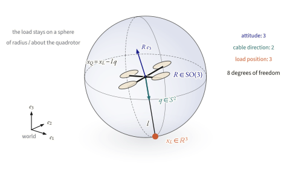
Figure 2.5. A quadrotor with a cable-suspended load. Three pieces describe every configuration: the load position xL, the cable direction q and the quadrotor attitude R. The quadrotor position is not a separate coordinate. It follows from xQ=xL−lq.
Take the system of the opening puzzle (Figure 2.5). While the cable is taut, its configuration is
(xL,q,R)∈R3×S2×SO(3),
with q pointing from the quadrotor to the load, a convention kept throughout the book.33 Using the quadrotor’s position as the coordinate instead gives the same manifold written as SE(3)×S2. That is 3+3+9=15 stored numbers, 1+6=7 constraints and 8 degrees of freedom. With four inputs, a thrust and three torques, four of them are unactuated. The kinematics are three lines we already have:
x˙L=vL,q˙=ω×q,R˙=RΩ∧.
Example 2.2(Where is the quadrotor, and how fast?). A load at xL=(2,0,1) m moves at vL=(1,0,0) m/s under a cable of length l=1 m that hangs straight down, so q=−e3. The cable swings with ω=(0.5,0,0) rad/s. The quadrotor is at xQ=xL−lq=(2,0,2), and differentiating with (2.1), x˙Q=vL−l(ω×q)=(1,0,0)−(0,0.5,0)=(1,−0.5,0)m/s. No angles were introduced, and the formula holds for every cable direction, including straight up.
Table 2.1 collects the configuration manifolds used in this book. Every one is assembled from the same few factors.
Table 2.1. Configuration manifolds of the robots in this book.
Robot
Configuration manifold
Numbers stored
Dimension
Heading of a planar robot
S1≅SO(2)
2
1
Spherical pendulum, cable, thrust axis
S2
3
2
3D pendulum, attitude of a satellite
SO(3)
9
3
Quadrotor
SE(3)
12
6
Quadrotor with cable-suspended load
R3×S2×SO(3)
15
8
n quadrotors carrying a rigid payload
SE(3)×(S2×SO(3))n
12+12n
6+5n
Reaction Mass Biped, stance phase
SO(3)3×[0,r]2×[0,rs]3
32
14
Cassie, reduced geometric model
SE(3)×SO(3)2×R+2
32
14
Wu (2017) models n quadrotors carrying one rigid payload: the payload’s pose, then a cable direction and an attitude per vehicle. Siravuru (2019) models the Reaction Mass Biped with three rotation matrices (stance leg, torso, swing leg), two leg lengths and three pairs of sliding reaction masses. His reduced model of Cassie has a floating pelvis in SE(3), a rotation matrix per leg and two leg lengths, with eight of the fourteen degrees of freedom actuated. No joint angle appears in any of them.
Pitfall(A configuration manifold is a modeling claim). The factor S2 asserts that the cable is taut. If the tension reaches zero the load is in free fall and the configuration space becomes R3×R3×SO(3). A product manifold records the constraints you assumed. It does not enforce them on the hardware. Monitor the tension, and treat slack as a different mode with its own model.
Now the opening puzzle can be stated precisely. The simulator’s state lives on a product of spheres and rotation groups, and its update rule was written for Rn.
2.8 Stepping without falling off
The simulator’s update is Euler’s method, qk+1=qk+hq˙k. On the sphere, q˙k is perpendicular to qk, so by Pythagoras
∥qk+1∥2=∥qk∥2+h2∥q˙k∥2.
The norm grows at every step, by an amount that depends only on the speed. The tangent plane touches the sphere at one point and lies outside it everywhere else, so a step along the tangent always lands outside (Figure 2.6). With ∥ω∥=2 rad/s and h=0.01 s, each step multiplies ∥q∥2 by 1.0004. A thousand steps give 1.0004500=1.22. That is the stretched cable.
Figure 2.6. Four steps on a circle, exaggerated. Each Euler step (terracotta) runs along the tangent and lands outside, and the radius grows from 1 to 1.38. Each exponential step (indigo) follows the circle.
Rotation matrices fail the same way. One Euler step Rk+1=Rk+hRkΩ∧ gives
Rk+1⊤Rk+1=I−h2(Ω∧)2,detRk+1=1+h2∥Ω∥2.
The matrix is no longer orthogonal. Used as a rotation, it stretches the body.
The cure is in Section 2.3. Over one step, hold the velocity fixed and solve the kinematics exactly. The solution is an exponential, and exponentials land on the manifold:
Rk+1=Rkexp(hΩk∧),qk+1=exp(hωk∧)qk.(2.12)
The first is a product of rotations, so it is a rotation. The second is a rotation applied to a unit vector, so it is a unit vector. This holds for any step size, up to rounding. On a product manifold, apply (2.12) factor by factor.
Example 2.3(Ten seconds of tumbling). A body tumbles with Ω(t)=(cost,sin0.7t,0.5) rad/s. Integrate from R=I for 10 s with h=0.01 s (Figure 2.7, left). After the Euler steps, ∥R⊤R−I∥=0.16 in the Frobenius norm and detR=1.13. After the exponential steps it stays below 10−13.
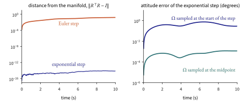
Figure 2.7. Left: distance from SO(3) during the tumble of Example 2.3. Euler steps drift away. Exponential steps stay on the manifold to rounding error. Right: the attitude error of the exponential step, with Ω sampled at the start of each step (first order) and at the midpoint (second order).
Pitfall(On the manifold is not the same as correct). The exponential step is exact only if Ω is constant across the step. In Example 2.3 it is not, and the final attitude is wrong by 0.29°, although it is a perfect rotation matrix (Figure 2.7, right). Halving h halves the error. Sampling Ω at the middle of the step instead of the start cuts it to 0.0012° at no extra cost. Staying on the manifold removes one kind of error, not all of them. Nor does repairing an Euler step by normalizing q or reorthonormalizing R: that restores the constraint and leaves the integration error.
2.9 What we have, and what is missing
A robot’s configuration is a point on a product of a few standard manifolds, and its velocity is a list of tangent vectors. The exponential turns velocities into motion, the adjoint changes their frame, and the bracket records that order matters.
All of this concerns one trajectory. Control and estimation concern two: actual and desired, or true and estimated. We cannot yet subtract a desired velocity from an actual one when they live in different tangent spaces, or differentiate a function like ΨR whose argument is a matrix under constraints. Chapter 3 does both with one tool, the variation of Definition 3.1.
Exercises
Exercise 2.1. Reproduce the opening puzzle. Show that with constant ∥ω∥ the Euler iterate satisfies ∥qN∥=(1+h2∥ω∥2)N/2, and that for a fixed duration tf=Nh this tends to exp(21h∥ω∥2tf). What step size keeps the stretch below 1 mm over a 10 s flight?
Exercise 2.2. Apply Definition 2.1 to SO(3). Write the six constraint functions and show that their Jacobian has rank six at R=I by exhibiting its kernel. Why is the rank six at every other R too?
Exercise 2.3. Sum the exponential series to prove (2.5). Derive (2.6) from its trace and its skew-symmetric part. What is R−R⊤ at θ=π, and how would you recover the axis there? Then prove (2.4) by applying both sides to a vector. Where is detR=+1 used?
Exercise 2.4. Do the book experiment of Thought experiment 2.3 with your hands, then with matrices. Find the axis of the 120° rotation that separates the two results. Repeat with turns of 10° and compare the leftover with (2.7).
Exercise 2.5. A quadrotor carries a load on a chain of n rigid links joined by ball joints. Propose a configuration manifold. Count stored numbers, constraints and dimension, and write the kinematics. How many degrees of freedom are unactuated? What does your manifold assume?
Exercise 2.6. In the notebook, measure the attitude error of the exponential step in Example 2.3 for h=0.02,0.01,0.005, sampling Ω at the start and at the midpoint of each step. Confirm orders one and two. For which motions is the start-of-step version exact?
Notes and sources
The treatment of SO(3) and SE(3), their exponentials and adjoints follows Murray, Li and Sastry (1994) and Solà, Deray and Atchuthan (2018). Teng et al. (2022, 2026) and Jang, Teng and Ghaffari (2023) summarize the same preliminaries as used in control and trajectory optimization. S2 as a configuration manifold, and multibody systems as products of S2 and SO(3), follow Lee, Leok and McClamroch (2018). The cable-suspended load and multi-quadrotor models are from Wu (2017, ch. 3). The 3D pendulum, Reaction Mass Biped and Cassie models are from Siravuru (2019, ch. 4 to 6). SE2(3) is due to Barrau and Bonnabel (2017) and was applied to legged robots by Hartley et al. (2018).
A ratio is a sort of relation in respect of size between two magnitudes of the same kind.
A reference satellite spins steadily about the vertical at one radian per second. Yours copies it exactly: same axis, same rate. The only difference is that your body frame was bolted on a quarter turn away, so your attitude error is a constant 90°. What is your angular velocity error?
Both gyroscopes are honest. The reference gyroscope reads Ωd=(0,0,1). Yours reads Ω=(0,1,0), because the vertical happens to be your second body axis (Figure 3.1). Subtract and you get an error of 1.41 rad/s. Yet the two bodies turn together like two parts of one rigid object. Nothing between them is changing. The sensible answer is zero.
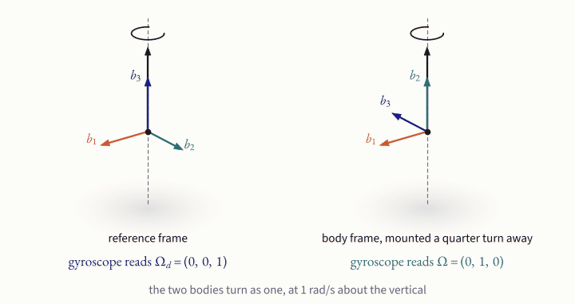
Figure 3.1. Two frames that spin together about the vertical. They share one motion, but each gyroscope reports it along its own axes, so the readings differ. Subtracting the readings compares components taken in two different frames, and reports 1.41 rad/s. Carry the reference’s angular velocity over to the body frame first, and the difference is zero.
Chapter 1 asked what “error” means for a configuration on a curved space. This is the same question for velocities, and it is the subtler one. A velocity is attached to the place where it was measured. On a flat space every place shares one set of axes, so you subtract without thinking. On a curved space you have to carry one velocity over to the other before you compare, and there is more than one way to carry it. To sort this out we need three things: a way to nudge a configuration, a way to measure how far off it is, and a way to move a velocity from one place to another.
3.1 Nudging a configuration
Start where nothing can go wrong. A position x∈R3 is nudged by adding a small vector, xϵ=x+ϵδx. Any δx will do. The result is still a position.
Try that with a rotation. Is R+ϵA a rotation for an arbitrary matrix A? Test it against Definition 1.1:
(R+ϵA)⊤(R+ϵA)=I+ϵ(R⊤A+A⊤R)+ϵ2A⊤A.
The first-order term must vanish, so R⊤A must be skew-symmetric. That is six conditions on nine numbers. Three free numbers remain, and the hat map of Definition 1.2 packs them into a vector: A=Rη∧. A nudge of a rotation is not an arbitrary matrix. It is a small rotation, and η is its axis and angle in the body frame.
Thought experiment 3.1(Nudging a pointer). Hold a pen at arm’s length and call its direction q. Now disturb it slightly. You cannot push the tip along the pen: that would stretch it. Every allowed nudge moves the tip sideways, and every sideways nudge is a small rotation about some axis ξ, so δq=ξ×q. Twirling the pen about its own length does not move the tip at all. So the part of ξ along q does nothing, and we may as well set it to zero: ξ⋅q=0.
Definition 3.1(Variation). Embed a curve in a one-parameter family of curves that stay on the manifold, with ϵ=0 giving the curve itself. Its variation is the first-order gap to its neighbors, δ(⋅)=dϵdϵ=0. On the three spaces of this book, xϵRϵqϵ=x+ϵδx,=Rexp(ϵη∧),=exp(ϵξ∧)q,δxδRδq∈R3,=Rη∧,η∈R3,=ξ×q,ξ⋅q=0.
Put δR=Rη∧ next to the kinematics R˙=RΩ∧ of (1.1). They have the same shape. A variation is a velocity in a direction that is not time. The vectors η(t) and ξ(t) may change along the curve, so the family is a ribbon of curves, as in Figure 3.2.
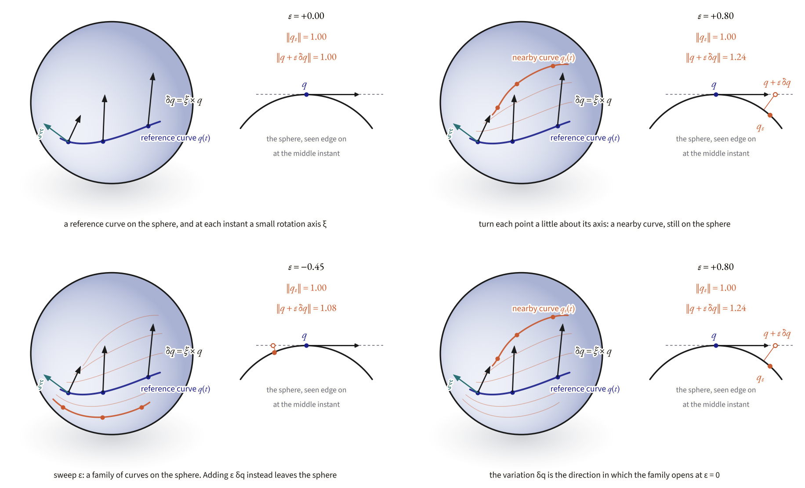
Figure 3.2. A variation on the sphere. The reference curve q(t) sits inside a family of nearby curves qϵ(t). Watch ϵ sweep: every member of the family stays on the sphere. At each instant the gap opens along δq=ξ×q, which is tangent to the sphere. The axis ξ lies in the tangent plane too, at right angles to δq. Right: the same nudge seen edge on. The straight step q+ϵδq leaves the sphere, and the rotation does not.
The ribbon has two directions: along the curve, in t, and across it, in ϵ. We know how the configuration changes in each. What happens to the velocity when we step across?
3.2 Nudging a velocity
For a position the answer is immediate. Derivatives in t and in ϵ commute, so δ(x˙)=dtd(δx). The variation of the velocity is the velocity of the variation.
The matrices Rϵ(t) obey the same rule, δ(R˙)=dtd(δR). But R˙ is not what a gyroscope measures. The body rate is Ω∧=R⊤R˙, and the frame R moves when we step across the ribbon. Work out both sides:
Set them equal and cancel R. What is left is δΩ∧=η˙∧+Ω∧η∧−η∧Ω∧, and the commutator of two hats is the hat of the cross product.
Proposition 3.2(Variation of the body rate). For R˙=RΩ∧ and δR=Rη∧, δΩ=η˙+Ω×η.(3.1)
The term η˙ is what you would have guessed. The term Ω×η is the opening puzzle in miniature. Freeze η, so the neighbor is the same body with its frame remounted by a small fixed rotation. The body still spins as before, but its gyroscope axes have turned, so the reading turns with them.
Example 3.1(A slightly remounted gyroscope). Take Ω=(0,0,1) rad/s and remount the frame by η=(0.1,0,0), held constant. Equation (3.1) predicts a change of Ω×η=(0,0.1,0). The exact reading is exp(−η∧)Ω=(0,0.0998,0.9950). Grow η to a quarter turn and the reading becomes (0,1,0): the satellite of Figure 3.1.
This small term has large consequences. The rotational kinetic energy is 21Ω⋅JΩ, and its variation is
δ(21Ω⋅JΩ)=JΩ⋅δΩ=JΩ⋅η˙−(Ω×JΩ)⋅η.
There is the Ω×JΩ of Euler’s equation. It is not a fictitious force added by hand. It is the price of measuring velocity in a frame that the variation moves. Section 4.3 turns this line into (4.8).
Now the sphere. The rule for q˙ is again safe, because q is an ordinary vector of R3:
δ(q˙)=ξ˙×q+ξ×q˙.(3.2)
The angular velocity needs care. Our convention is q˙=ω×q with ω⋅q=0, which makes ω=q×q˙ unique. Vary that product, use (3.2), and keep ξ⋅q=0 at every instant.
Proposition 3.3(Variation of the angular velocity on the sphere). For ω=q×q˙ and δq=ξ×q with ξ⋅q=0 along the whole curve, δω=ξ˙−2ω×ξ=tangent to the sphereξ˙−ω×ξ−along qω×ξ.(3.3)
Two facts drive the proof, which is Exercise 3.3. Both ω and ξ lie in the tangent plane, so ω×ξ points along q. And differentiating ξ⋅q=0 in time gives q⋅ξ˙=q⋅(ω×ξ), so ξ˙ is forced to leave the tangent plane. Notice that δω itself is not tangent. Its component along q is what keeps the neighbor’s angular velocity perpendicular to the neighbor’s q.
Pitfall(Three formulas for one variation). You will meet (3.3) in other clothes, and one of them is a trap.
Lee, Leok and McClamroch (2018) write δω=−ω×ξ+(I−qq⊤)ξ˙. It is the same vector, because q(q⋅ξ˙)=ω×ξ.
Wu and Sreenath (2015) keep δω as a variable of its own and impose q⋅δω=−(ξ×q)⋅ω. That constraint is exactly the component along q above.
The trap is δω=ξ˙−ω×ξ. It is only the tangential part. It gives correct equations whenever δω is dotted with something tangent, which covers every simple pendulum. It gives gyroscopic terms at half strength otherwise. The symbolic library of Chapter 5 applies the full rule ξ˙−2ω×ξ (Table 5.1).
Do not borrow the sign from SO(3) either. There Ω and η are body-frame vectors and the cross term enters with a plus. On the sphere ω and ξ are world-frame axes, and the sign flips (Exercise 3.2).
We can now nudge configurations and velocities. Next we need a number that says how far a configuration is from where it should be.
3.3 Heights and slopes
Section 1.5 introduced the attitude error of Definition 1.4 as a height ΨR and its slope eR. With variations in hand, that recipe becomes a definition that works on any manifold.
Definition 3.4(Error function and error vector). An error function Ψ≥0 depends on the actual and the desired configuration and vanishes only when they agree. Its error vector e is its slope under a variation of the actual configuration: δΨ=eR⋅η on SO(3),δΨ=eq⋅ξ on S2,δΨ=ex⋅δx on R3.
On R3 the height 21∥x−xd∥2 has slope x−xd. Nothing new. On the sphere, Ψq=1−q⋅qd gives δΨq=−(ξ×q)⋅qd=ξ⋅(qd×q), so eq=qd×q, as in Definition 1.5.
On SO(3) let us do slightly more than Definition 1.4 did and weight the axes. Take D=diag(d1,d2,d3) with positive entries and
ΨR=tr(D(I−Rd⊤R)).(3.4)
Vary R: δΨR=−tr(DRd⊤Rη∧). For any matrix A, tr(Aη∧)=−(A−A⊤)∨⋅η. So
eR=(DRd⊤R−R⊤RdD)∨.(3.5)
With D=21I these are the functions of (1.6). Near the target, eR≈(tr(D)I−D)η, so the stiffness about body axis 1 is d2+d3, and so on. The weights also decide where the unavoidable extra equilibria of Theorem 1.3 sit.
Example 3.2(Where the slope vanishes). Take D=diag(0.9,0.6,0.3). The slope (3.5) vanishes when DRd⊤R is symmetric. That happens at the target and at the three half turns about the body axes, and nowhere else. The heights there are 0, 1.8, 2.4 and 3.0: a minimum, two saddles and a maximum.
With equal weights the three half turns are no longer special. Every half turn about every axis has eR=0 and ΨR=2, a whole two-dimensional family of critical points. Unequal weights cut that family down to three isolated points, the fewest that topology allows.
The trace is not the only height. Suppose the relative rotation Rd⊤R is a turn by θ about a unit axis a. Three choices are in common use, scaled here to have the same stiffness near the target:
Here (q0,qv) is the unit quaternion of Rd⊤R. We call them the trace error, the logarithm error and the quaternion error. Figure 3.3 plots all three around one full turn.
Figure 3.3. Three attitude error functions for a rotation by θ about a fixed axis. Left: the heights. Right: their slopes, which are the restoring torques a proportional controller applies. Only the trace error is smooth at 180°, and it pays by vanishing there. The other two never fade, and pay with a jump.
The right-hand panel is Theorem 1.3 drawn as a graph. Go once round the axis. The restoring torque is positive just after 0° and negative just before 360°. If it is continuous it must cross zero in between: that is the trace error, whose fading torque the pitfall warned about. If it never crosses zero it must jump: that is the other two, with a kink in the height at 180° where the shortest way home changes side.
Example 3.3(The cost of the last degree). Rotate about one axis with unit inertia: θ¨=−kpe(θ)−kdθ˙, with kp=4 and kd=22. Start at rest, 179° from the target. The logarithm law is inside 5° for good after 2.8 s and the quaternion law after 2.9 s. The trace law needs 6.1 s (Figure 3.4).
Start at 179.9° instead. The first two laws do not notice. The trace law needs 8.4 s. Near half a turn it sees β¨≈kpβ−kdβ˙ for the small angle β=π−θ, an unstable equilibrium with growth rate λ=1.04s−1. Every factor of ten closer to 180° costs ln10/λ=2.2 s more. There is no upper bound.
Figure 3.4. Simulated recovery from rest near half a turn, same gains, three error vectors. Left: each state on its own height. Right: the error angle against time. The trace height is flat at the top, so the trace error lingers, and lingers 2.2 s longer for each factor of ten by which the start approaches 180°.
Mueller (2018) makes this comparison for multicopters and adds an idea worth keeping. Split the relative rotation into a tilt, the shortest rotation that aligns the thrust axes, and a yaw about the thrust axis. The tilt angle θtilt is the angle between Re3 and Rde3, so its height 1−cosθtilt is exactly the sphere error Ψq of the thrust direction. The angles obey cos2θ=cos2θtiltcos2θyaw, with θyaw the yaw angle, so the tilt never exceeds the total. A multicopter translates by tilting, so the tilt matters more than the yaw. Mueller’s controller adds to the logarithm law a second restoring torque that acts on the tilt alone and is proportional to the tilt angle. Teng et al. (2022) reach the logarithm from another side: they define the cost as 21χ⊤Pχ in χ=log(Rd⊤R)∨, and the same definition works on any matrix Lie group.
None of these is free. Smoothness, a restoring torque that never fades, and a single critical point cannot all be had. Choose knowing which one you gave up.
A proportional term alone does not make a controller. We need a derivative term, and that brings back the two gyroscopes.
3.4 Carrying a velocity
Thought experiment 3.2(Which way is north?). One walker stands on the equator and another at 60° north on the same meridian. Each walks north at one meter per second. Do they have the same velocity? As arrows in space they do not: the two “norths” are 60° apart. To compare them you must bring one arrow to the other, and the natural way is to slide it along the surface without turning it.
Now test “without turning”. Stand at the pole with an arrow pointing down the Greenwich meridian. Walk down that meridian to the equator, keeping the arrow straight ahead. Walk a quarter of the way round the equator. The arrow now points sideways, due south, and you do not turn it. Walk back up to the pole. You are home. Your arrow points along the 90° meridian (Figure 3.5). It has turned a quarter turn, and you never turned it.
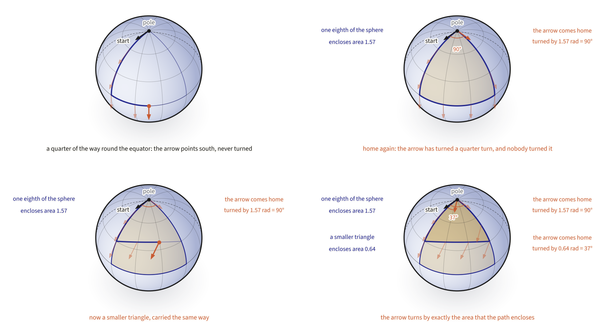
Figure 3.5. Sliding an arrow around one eighth of the sphere without ever rotating it relative to the surface. It returns rotated by 90°, the area enclosed by the path. Around a smaller triangle it returns rotated by 37°, again the area enclosed. The result of carrying a vector between two points depends on the route.
So “the same vector, somewhere else” has no meaning on a curved space until you say how it was carried. A rule that carries velocities from the reference to the body is a transport map. Since no rule is forced on us, we choose one that makes the control problem easy. The requirement is modest.
Definition 3.5(Compatible transport and velocity error). Let Ψ be an error function with error vector e. A transport map T, taking velocities at the desired configuration to velocities at the actual one, is compatible with Ψ if, along every pair of motions, dtdΨ=e⋅evel,evel=(actual velocity)−T(desired velocity).(3.6) The vector evel is the velocity error. On SO(3) it is the eΩ of Definition 1.4.
Compatibility says that the height changes only through the velocity error, exactly as dtd21∥x−xd∥2=(x−xd)⋅(x˙−x˙d) on a flat space. It is the property that makes Ψ plus a kinetic term into a Lyapunov function, as (6.5) will show.
On SO(3). Differentiate the relative rotation Rd⊤R, using R˙=RΩ∧ and R˙d=RdΩd∧:
dtd(Rd⊤R)=(Rd⊤R)eΩ∧,eΩ=Ω−R⊤RdΩd.(3.7)
The relative rotation obeys the kinematics (1.1), with eΩ as its body rate. The transport map is Ωd↦R⊤RdΩd. Read it from the right: RdΩd is the reference’s angular velocity in the world frame, and R⊤ expresses it along the body’s axes. It answers the question “what would my gyroscope read if I moved exactly as the reference does?” For the two satellites, R⊤RdΩd=(0,1,0)=Ω, and eΩ=0.
Proposition 3.6(Attitude error dynamics). For any weight D, the functions (3.4) and (3.5) satisfy Ψ˙R=eR⋅eΩ. For D=21I, e˙R=CReΩ,CR=21(tr(R⊤Rd)I−R⊤Rd),(3.8) with CR=I at zero error and ∥CR∥≤1 everywhere.
Proof. By (3.7), the relative rotation is varied by η=eΩdt in time dt, so Ψ˙R=eR⋅eΩ by Definition 3.4. The second claim follows by differentiating eR with (3.7) and using (Ax∧+x∧A⊤)∨=(tr(A)I−A⊤)x.□
Remark(What compatibility does not decide). With equal weights, eR points along the axis of Rd⊤R, and a rotation leaves its own axis alone. So eR⋅(R⊤RdΩd)=eR⋅Ωd, and the naive difference passes the test too: Ψ˙R=eR⋅(Ω−Ωd). The scalar condition (3.6) does not single out one transport map. What singles out eΩ is the stronger statement (3.7): it vanishes exactly when the relative attitude stands still. The naive difference reported 1.41 rad/s for two bodies moving as one, and with unequal weights it fails (3.6) as well.
On the sphere. The reference direction moves as q˙d=ωd×qd. The simplest way to carry that motion to q is to turn q about the same axis at the same rate:
Tq˙d=(qd×q˙d)×q=ωd×q,eq˙=q˙−ωd×q.(3.9)
In terms of angular velocities, with ωd projected onto the tangent plane at q so that the convention ω⋅q=0 survives,
This is the pair used by Wu (2017), and it completes (1.9), which held only for a fixed target.
Figure 3.6. Velocity error on the sphere. The reference velocity q˙d lives in the tangent plane at qd and cannot be subtracted from q˙ directly. The transport map (3.9) carries it to q. As q moves away, the carried velocity agrees with parallel transport along the great circle (dashed) for the component along the circle, and its component across the circle shrinks by cosθ. In the last frame the two velocities at q are subtracted.
Example 3.4(A transport map that forgets). Put qd=e3 and q=e1, a quarter circle apart. If the reference moves toward q, q˙d=e1, then Tq˙d=−e3: the body is asked to move away along the same great circle, which keeps the angle fixed. Parallel transport gives the same answer. If the reference moves sideways, q˙d=e2, then Tq˙d=0, while parallel transport gives e2. In general the sideways part is scaled by cosθ.
This is not a defect. A sideways step of qd does not change the angle to q at first order, so Ψq cannot see it, and any scaling of that part is compatible. A transport map need not preserve lengths and need not be parallel transport. It has to be compatible, and cheap to compute.
The slope vector itself moves as
e˙q=(q⋅qd)eω+(q⋅ωd)q×eq−(qd⋅ω)q.(3.11)
The first term is the counterpart of (3.8), with cosθ in the role of CR. The second turns eq within the tangent plane when the reference spins about q. The third keeps eq tangent as q moves.
On the sphere we had to choose a transport map. On SO(3) one seemed to fall out of the algebra. That is because SO(3) is a group, and a group comes with its own ways to move things around. It comes with two.
3.5 Two errors on a group
Let X and Xd be elements of a matrix Lie group: attitudes, or poses in SE(3). There are two ways to form “X relative to Xd”.
Definition 3.7(Left- and right-invariant error).Eℓ=Xd−1X,Er=XXd−1. The left-invariant errorEℓ is unchanged when both are multiplied on the left, (X,Xd)↦(YX,YXd). The right-invariant errorEr is unchanged when both are multiplied on the right, (X,Xd)↦(XY,XdY).
Thought experiment 3.3(Two labs, one technician). Recall the two labs of Thought experiment 1.2, whose motion-capture frames disagree. Changing the world frame multiplies every attitude on the left. The error Rd⊤R does not notice. That was the invariance we demanded of a controller.
Now a technician unbolts the flight computer and remounts it rotated. Every attitude is multiplied on the right. The error RRd⊤ does not notice that. It is the rotation, seen from the world, that takes the reference onto the body, and the world does not care how the computer is mounted. The left-invariant error does notice: its angle is the same, but its axis is now expressed along the new body axes.
Each error pairs with one kind of velocity. With body-frame velocities, X˙=Xζ∧ and X˙d=Xdζd∧ as in (2.10), the left-invariant error obeys
E˙ℓ=Eℓ(ζ−AdEℓ−1ζd)∧.(3.12)
On SO(3) this is (3.7), and it identifies the transport map R⊤Rd as the adjoint of the inverse error. Look at what is missing from the right-hand side. The state X does not appear. The error evolves by a law that involves only the error and the two velocities. Wherever the robot is, however it is oriented, the same error with the same velocities changes in the same way.
Example 3.5(Dead reckoning with a wrong start). An attitude estimator integrates a gyroscope, R^˙=R^Ω∧, while the true attitude obeys R˙=RΩ∧ with the same Ω(t). The estimate starts 5° wrong. The body then tumbles for ten seconds.
The right-invariant error does not move: dtd(R^R⊤)=R^Ω∧R⊤−R^Ω∧R⊤=0. The left-invariant error R⊤R^ keeps its 5° angle while its axis turns with the body. Its rate, EℓΩ∧−Ω∧Eℓ, involves the gyroscope signal but not the attitude. Compare the difference of yaw, pitch and roll between estimate and truth. In the simulation its norm wanders between 4.6° and 64°, although nothing about the actual discrepancy changes. The Euler-angle error has dynamics that depend on where the body happens to be. The invariant errors do not.
That is the idea behind invariant filtering. Barrau and Bonnabel (2017) show that for a whole class of systems, which includes inertial navigation, the invariant estimation error obeys an equation that does not involve the estimate, and that its logarithm obeys a linear equation exactly. Hartley et al. (2018) built a legged-robot state estimator on this.
Controllers use the same fact. Write the left-invariant error as Eℓ=exp(χ∧). To first order in χ,
χ˙=−adζdχ+(ζ−ζd),(3.13)
where on SO(3) the operator adΩd is the cross product with Ωd. This is a linear system whose coefficients depend on the reference velocity alone. Teng et al. (2022) and Jang, Teng and Ghaffari (2023) build quadratic costs and convex model predictive controllers on it. One linear model serves along the whole trajectory, where a model in coordinates would have to be recomputed at every attitude. Section 7.8 derives the same equation from the linearization. Section 13.2 builds a predictive controller on it, and the chapter on filtering on Lie groups returns to the other use.
Equation (3.13) is linear in χ, and χ is a small rotation vector. So is the variation η. Are they the same thing?
3.6 Errors are variations, to first order
Place the body near the reference, R=Rdexp(ϵη∧). Then Rd⊤R is a turn by ϵ∥η∥ about η, and (1.7) gives the error vector exactly:
eR=sin(ϵ∥η∥)∥η∥η=ϵη+O(ϵ3).
For η=(0.1,0,0.2) and ϵ=1, an error of 12.8°, this gives eR=(0.0992,0,0.1983). The error vector falls short of the variation by 0.5% at 10° and by 4.5% at 30°. The same holds on the sphere: q=exp(ϵξ∧)qd gives eq=sin(ϵ∥ξ∥)ξ/∥ξ∥.
The velocity needs a second look. Transport does part of the job that the cross term does in (3.1). Expanding eΩ=Ω−exp(−ϵη∧)Ωd with Ω=Ωd+ϵδΩ gives
eΩ=ϵη˙+O(ϵ2),soϵδΩ=eΩ+Ωd×eR+O(ϵ2).(3.14)
The velocity error matches η˙, not δΩ. The two differ by Ωd×η, which is first order whenever the reference is turning. On the sphere, likewise, eω=ϵ(ξ˙−ωd×ξ)+O(ϵ2), the tangential part of ϵδω in (3.3).
Table 3.1. Errors against variations along a tumbling reference, for one η(t) with ∥η∥=0.86. Halving ϵ divides the first column by eight and the second by four. The third only halves: eΩ is not ϵδΩ.
ϵ
∥eR−ϵη∥
∥eΩ−ϵη˙∥
∥eΩ−ϵδΩ∥
0.4
6.8×10−3
3.8×10−2
2.3×10−1
0.2
8.6×10−4
9.6×10−3
1.1×10−1
0.1
1.1×10−4
2.4×10−3
5.4×10−2
0.05
1.3×10−5
6.0×10−4
2.7×10−2
This is what makes linearization on a manifold practical. Proposition 7.3 linearizes the rigid body in the variables (η,δΩ), which have no singularities and need no coordinates. A controller cannot measure η. It can compute eR and eΩ from the state, and (3.14) converts one pair into the other (Proposition 7.4 and the feedback (7.14) use exactly this). For a reference at rest, such as a hover, the two pairs coincide.
Table 3.2. The toolkit of this chapter. On a product of these spaces, apply each column to its factor and add the error functions.
R3
S2
SO(3)
Kinematics
x˙=v
q˙=ω×q, ω⋅q=0
R˙=RΩ∧
Variation
δx
δq=ξ×q, ξ⋅q=0
δR=Rη∧
Velocity variation
δv=dtdδx
δω=ξ˙−2ω×ξ
δΩ=η˙+Ω×η
Error function
21∥x−xd∥2
1−q⋅qd
21tr(I−Rd⊤R)
Error vector
x−xd
qd×q
21(Rd⊤R−R⊤Rd)∨
Transported reference
vd
(I−qq⊤)ωd
R⊤RdΩd
Velocity error
v−vd
ω−(I−qq⊤)ωd
Ω−R⊤RdΩd
Near the reference
ex=ϵδx
eq≈ϵξ
eR≈ϵη
Exercises
Exercise 3.1. Show that Rexp(ϵη∧) is a rotation for every ϵ, and that R+ϵRη∧ is not. How large is ∥Rϵ⊤Rϵ−I∥ in the second case? Why does the definition of a variation not care?
Exercise 3.2. Use world-frame quantities instead: R˙=ω∧R and δR=σ∧R, with ω=RΩ as in (2.3). Show that δω=σ˙−ω×σ. Compare the sign with (3.1) and explain it using Example 3.1.
Exercise 3.3. Prove (3.3) from ω=q×q˙ and (3.2). Then check it by finite differences in the notebook: build a curve q(t), a field ξ(t) with ξ⋅q=0, the family qϵ(t), and difference ωϵ in ϵ. Repeat with a ξ that is not perpendicular to q. Which formula survives?
Exercise 3.4. For ΨR in (3.4) with d1>d2>d3>0, show that eR=0 exactly at the four attitudes of Example 3.2. Expand ΨR to second order in η at each and show the Hessians are diag(c2+c3,c1+c3,c1+c2), where ci are the diagonal entries of DRd⊤R. Classify the four points.
Exercise 3.5. Reproduce Example 3.3. Then give all three laws an initial angular velocity that carries them through 180°, and add measurement noise. Which law chatters, and where?
Exercise 3.6. On the sphere, let Y be the rotation about qd×q that takes qd to q, so that ωd↦Yωd is parallel transport along the great circle. Show that it is compatible with Ψq. Describe all linear maps that are. Then find the transport map compatible with Ψ=21θ2, where θ is the angle between q and qd.
Exercise 3.7. Derive the dynamics of the right-invariant error Er=RRd⊤ in terms of the world-frame angular velocities ω=RΩ and ωd=RdΩd. Which velocity error appears? Redo the opening puzzle with Er.
Exercise 3.8. Derive (3.14). Then take a reference that spins at constant Ωd and a constant offset η. Compute eR, eΩ and δΩ and say which of them a derivative term should act on.
Notes and sources
Variations on SO(3) and S2 in the form used here, including (3.1) and the expression for δω, are developed by Lee, Leok and McClamroch (2018). Error functions, compatible transport maps and the weighted trace function come from Bullo and Lewis (2005). Lee, Leok and McClamroch (2010) brought eR and eΩ to quadrotors, and (3.8) appears there and in Siravuru (2019). The sphere errors (3.10) and the general statement of compatibility follow Wu (2017). The first-order link between errors and variations is the basis of Wu and Sreenath (2015). The comparison of attitude errors, the lingering of the trace error and tilt prioritization are from Mueller (2018). Left- and right-invariant errors and their autonomous dynamics are due to Barrau and Bonnabel (2017). Their use for legged robots is from Hartley et al. (2018). The Lie-algebraic tracking error (3.13) is from Teng et al. (2022). Teng et al. (2026) use the same variations as search directions for trajectory optimization on Lie groups.
No figures will be found in this work. The methods I present require … solely algebraic operations subject to a regular and uniform procedure.
Pin a rigid body at one point and let it swing under gravity. This is the 3D pendulum. Write its equations of motion twice.
First with yaw, pitch and roll. Substitute Ω=E(θ,ϕ)Θ˙ from (1.3) into the kinetic energy 21Ω⋅JΩ, apply the Euler-Lagrange equations, and expand. For a general inertia matrix you get three coupled equations with 105 terms between them, each a product of sines and cosines. Their mass matrix is E⊤JE, and it has to be inverted at every time step.
Then with the rotation matrix. The whole model is
JΩ˙+Ω×JΩ=mg(R⊤e3)×ρ,R˙=RΩ∧,
where ρ is the body-frame vector from the pivot to the center of mass. One line. The mass matrix is J, a constant.
Figure 4.1. The puzzle of this chapter. A 3D pendulum is released and swings twice to within about a degree of the attitude where its pitch is 90°, with the body axis Re1 vertical. The body does nothing special there. The condition number of the Euler-angle mass matrix E⊤JE spikes at each pass. That of J stays at 2.5.
Where both work they give the same motion. But take a body with J=diag(0.20,0.25,0.10) kg·m² and look at how hard each mass matrix is to invert (Figure 4.2). The condition number of J is 2.5 at every attitude. The condition number of E⊤JE is 2.5 when the body is level, 25 at 60° of pitch, 974 at 85°, and 2.4×104 at 89°. At 90° the matrix is singular and cannot be inverted at all.
Figure 4.2. Condition number of the mass matrix of a 3D pendulum against pitch angle, at 20° of roll. In Euler angles it grows like 1/cos2θ. In the body frame it is the constant 2.5.
Nothing happens to the pendulum at 90° of pitch (Figure 4.1). So where did the hundred terms go, and why does the short equation never blow up? To answer, we need to derive equations of motion without ever choosing a chart.
4.1 Hamilton’s principle, on flat ground
Start where there is nothing to fix. Throw a ball of mass m. Its position is x∈R3, its Lagrangian is kinetic minus potential energy,
L(x,x˙)=21mx˙⋅x˙−mge3⋅x,
and the action of a path x(t) over [0,tf] is the number S=∫0tfLdt.
Definition 4.1(Hamilton’s principle). Among all paths with the same endpoints x(0) and x(tf), the motion is a path whose action is stationary: δS=0 for every variation that vanishes at the endpoints.
A variation (Definition 3.1) is a one-parameter family of nearby paths, xϵ(t)=x(t)+ϵδx(t) with δx(0)=δx(tf)=0, and δS is the derivative of S along the family at ϵ=0. Three moves turn the principle into an equation.
Vary. Differentiate under the integral. Since ϵ and t are independent, δx˙=dtdδx, and
δS=∫0tf(mx˙⋅δx˙−mge3⋅δx)dt.
Integrate by parts, to move the time derivative off δx. The boundary term vanishes because δx does:
δS=−∫0tf(mx¨+mge3)⋅δxdt.
Use that δx is arbitrary. The bracket must then vanish at every instant, and mx¨=−mge3.
Thought experiment 4.1(Bump the parabola). Throw a 1 kg ball so that it lands one second later. Imagine it had flown a path 10 cm higher in the middle, between the same two points: add ϵsin(πt/tf)e3 with ϵ=0.1 m. It moves faster, and it sits higher. Which effect wins?
Neither, to first order. The kinetic and potential changes cancel exactly, and what is left is second order: the action rises by mϵ2π2/(4tf)=0.0247 J·s. Bump it downward by 10 cm and the action rises by the same amount. The parabola sits at the bottom of a bowl.
Every step used the fact that x+ϵδx is again a valid position. On a curved configuration space that is false, and the first move has to change.
4.2 The same three moves on a sphere
A spherical pendulum is a bob of mass m on a rigid massless rod of length l. The bob sits at lq with q∈S2, and
L(q,q˙)=21ml2q˙⋅q˙−mgle3⋅q.
Try q+ϵδq and the bob leaves the sphere: the rod has stretched. A variation must be a family of curves that all stay on S2. The simplest way to stay on a sphere is to rotate. Pick any vector field ξ(t) along the path and set
This is the variation on the sphere of Definition 3.1, with the velocity rule (3.2). Each qϵ(t) is q(t) turned by the angle ϵ∥ξ∥ about ξ, so its length is still one (Figure 4.3). A component of ξ along q turns q about itself and does nothing, so we take ξ⋅q=0. The fixed endpoints become ξ(0)=ξ(tf)=0.
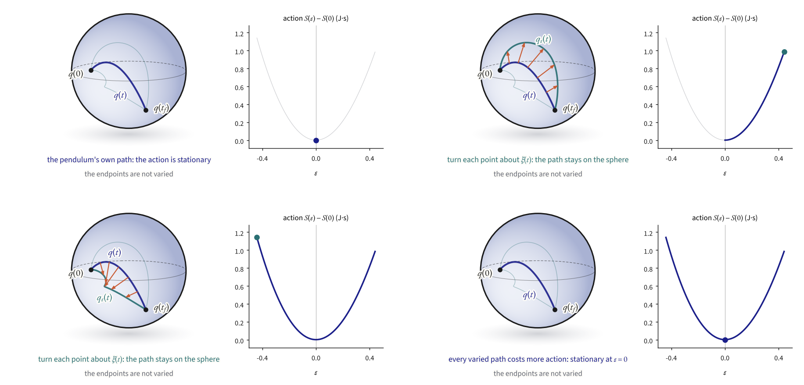
Figure 4.3. Hamilton’s principle on the sphere. The indigo path q(t) is a computed swing of a 1 kg bob on a 1 m rod. The teal path is q(t) turned about ξ(t) by the angle ϵ∥ξ∥, so it stays on the sphere and keeps its endpoints. The arrows show how far five of its points have moved. Right: the action of the varied path, computed for each ϵ. It is stationary at ϵ=0.
Now the three moves. Varying and integrating by parts work exactly as before and give
using y⋅(ξ×q)=ξ⋅(q×y) for any vector y. The third move is where the sphere shows. ξ is arbitrary, but only among vectors perpendicular to q. The vector q×(⋯) is already perpendicular to q, so it must vanish:
q×(ml2q¨+mgle3)=0.(4.2)
Read this carefully. It does not say that ml2q¨+mgle3 is zero. It says that vector is parallel to q. Only its tangent part must vanish:
(I−qq⊤)(mlq¨+mge3)=0.(4.3)
The part along q is fixed by the constraint alone. Differentiate q⋅q=1 twice to get the centripetal acceleration q⋅q¨=−∥q˙∥2. Together:
q¨=−∥q˙∥2q−lg(I−qq⊤)e3.(4.4)
With the angular velocity of (2.1), q˙=ω×q and ω⋅q=0, one finds q×q¨=ω˙, and (4.2) becomes
ml2ω˙=−mglq×e3,q˙=ω×q.(4.5)
No angles, and nothing special about the bottom or the top of the sphere.
What is the component along q that the principle refused to constrain? Draw the free-body diagram (Figure 4.4). Gravity −mge3 acts on the bob, and the rod pulls along itself with some tension T. Newton says mlq¨=−mge3−Tq. Project onto the tangent plane and the tension disappears, leaving (4.3). Project onto q and you get the tension:
T=ml∥q˙∥2−mge3⋅q.(4.6)
Hamilton’s principle never needed T. A variation that stays on the sphere does no work against the rod, so the rod’s force drops out unnamed.
Figure 4.4. The spherical pendulum as a free-body diagram. Gravity splits into a part in the tangent plane TqS2, which moves the bob, and a part along the rod, which the tension absorbs. Equation (4.3) is the tangent part.
Example 4.1(Three times the weight). A 1 kg bob on a 1 m rod is released from rest with the rod horizontal, q=e1. At that instant (4.6) gives T=0: the bob is in free fall. At the bottom of the swing q=−e3 and ∥q˙∥2=2g/l by energy conservation, so T=3mg=29.4 N. Integrating (4.5) reproduces it to ten digits.
Pitfall(An equation on the sphere is only its tangent part). Any equation of motion for q∈S2 is meaningful only after projection by I−qq⊤. Solve the unprojected three equations for ω˙ and you can get a component along q: the state walks off the sphere. Symbolic tools return the equation as derived and leave the projection to you. Solve the tangent part together with q⋅ω˙=0.
The sphere was easy because δq˙ was just the time derivative of δq. On the rotation group the velocity we use is Ω, and that changes the first move.
4.3 Rotations: where the gyroscopic term comes from
A free rigid body has attitude R∈SO(3) and Lagrangian L=21Ω⋅JΩ, with Ω∧=R⊤R˙ as in (1.1). Vary the attitude by rotating it, as in Definition 3.1, so that the family stays on the manifold:
Rϵ(t)=R(t)exp(ϵη(t)∧),δR=Rη∧,η(0)=η(tf)=0.
The Lagrangian is written in Ω, so we need δΩ. Proposition 3.2 derives it. The calculation is two lines: vary Ω∧=R⊤R˙ and use δR˙=R˙η∧+Rη˙∧,
δΩ∧=−η∧Ω∧+Ω∧η∧+η˙∧⟹δΩ=η˙+Ω×η.(4.7)
For the ball, δx˙=dtdδx and nothing else. Here there is an extra term Ω×η. It is the commutator of two rotations, the one the body is making and the one we vary by. It is there because rotations do not commute.
Now the three moves:
δS=∫0tfJΩ⋅(η˙+Ω×η)dt=−∫0tfη⋅(JΩ˙+Ω×JΩ)dt.
The first term was integrated by parts. The second used JΩ⋅(Ω×η)=−η⋅(Ω×JΩ). Since η is an arbitrary vector in R3, with no constraint this time,
JΩ˙+Ω×JΩ=0.(4.8)
This is Euler’s equation, and the derivation shows where its nonlinear term is born. The integration by parts produced JΩ˙. The commutator in (4.7) produced Ω×JΩ. A body whose rotations commuted would have no gyroscopic term at all.
A free body is not yet a robot. We need forces.
4.4 Forces and torques
Thrust, motor torque and drag do not come from a potential. They enter through the work they do on a variation.
Definition 4.2(Lagrange-d’Alembert principle). Let δW be the virtual work: the work the applied forces would do on the variation. The motion satisfies δ∫0tfLdt+∫0tfδWdt=0(4.9) for every variation that stays on the manifold and vanishes at the endpoints.
The job is to write δW for each actuator. Two cases cover almost everything.
A torque τ in the body frame does work on a body-frame rotation η: δW=τ⋅η. That puts τ on the right of Euler’s equation.
A force F in the world frame, applied at the body point x+Rr, does work on the displacement of that point. Vary the point: δ(x+Rr)=δx+R(η×r). Then
δW=F⋅δx+F⋅R(η×r)=F⋅δx+η⋅(r×R⊤F).(4.10)
The coefficient of δx is the force. The coefficient of η is the moment arm crossed with the force, both in the body frame. The rule “r×F” has been derived, frames included.
Proposition 4.3(Rigid body with a force and a torque). For a body of mass m and inertia J about its center of mass x, with L=21m∥x˙∥2+21Ω⋅JΩ−mge3⋅x and the virtual work (4.10) plus τ⋅η, mx¨=F−mge3,JΩ˙+Ω×JΩ=τ+r×R⊤F,R˙=RΩ∧.(4.11)
The 3D pendulum of the opening is now a short exercise. Take J about the pivot. Gravity acts at the center of mass Rρ, with potential mge3⋅Rρ, whose variation is mgη⋅(ρ×R⊤e3). Therefore
JΩ˙+Ω×JΩ=mg(R⊤e3)×ρ+τ.(4.12)
That resolves the puzzle. The physics of the pendulum is the three terms of (4.12). The other hundred terms of the Euler-angle model are E, its derivative and their products with J: a description of how the chart is bent. The blow-up in Figure 4.2 is E losing rank: det(E⊤JE)=cos2θdetJ. The body-frame velocity Ω is defined at every attitude, so there was never anything to invert.
You may know these equations from another route. Newton-Euler mechanics says that force is the rate of change of linear momentum, and moment about the center of mass is the rate of change of angular momentum, both in the world frame. The world-frame angular momentum is RJΩ. Differentiate it with R˙=RΩ∧:
dtd(RJΩ)=R(JΩ˙+Ω×JΩ)=Rτ.(4.13)
The same equation, and the same origin for the gyroscopic term: it comes from differentiating R. The two methods always agree. Newton-Euler is quicker when the free-body diagram is simple. Lagrange-d’Alembert is safer when constraint forces are many, because it never introduces them. We use each where it is shorter.11Chapter 5 automates the variational route with the geomech library. Every equation of motion in this chapter was derived a second time that way and compared numerically.
4.5 A sanity check you can throw in the air
Before trusting a model, ask what it must conserve. With no torque, (4.13) says the world-frame angular momentum RJΩ is constant, all three components. The energy 21Ω⋅JΩ is constant too. The body-frame momentum JΩ is not constant: only its length is, because R is a rotation. These are tests a simulation passes or fails. They also predict something surprising.
Thought experiment 4.2(Toss a book). Put a rubber band round a paperback so it stays shut. It has three natural axes: through the covers, along the spine, and across the width. Toss it spinning about the axis through the covers. It spins cleanly. Toss it spinning along the spine. Clean again. Now toss it spinning about the axis across the width. However carefully you throw, it comes down having flipped over.
Nothing pushed it. There is no torque in the air. Euler’s equation (4.8) is doing this by itself (Figure 4.5).
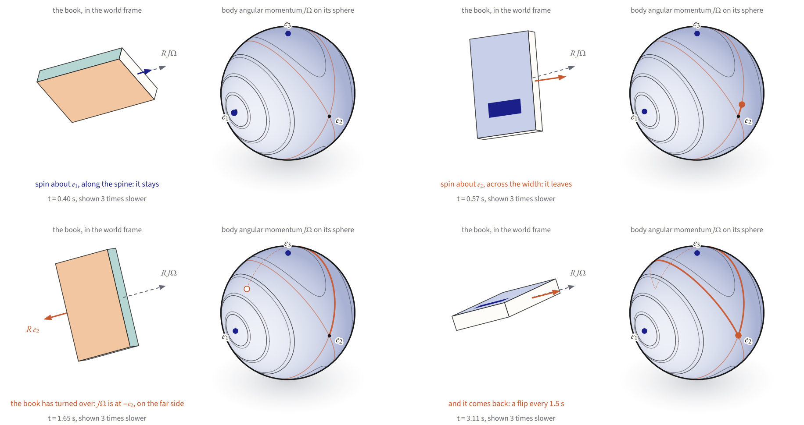
Figure 4.5. The three tosses, computed from Euler’s equation for the book of Example 4.2 at two revolutions per second. Left: the book in the world frame. The dashed arrow is its angular momentum RJΩ, which never moves. Right: the body angular momentum JΩ on its sphere. Spun about e3 or e1 the book keeps its axis. Spun about e2 it turns over, and then comes back.
Here is the reason. In the body frame, JΩ moves on a sphere, since its length is conserved. It must also stay on a level set of the energy. Draw those level sets on the sphere (Figure 4.6, left). Around the axes of smallest and largest inertia they are closed loops: a spin that starts near those axes stays near. At the intermediate axis the level sets cross. A spin that starts there is carried along the crossing to the opposite side of the sphere, and back.
Figure 4.6. The intermediate-axis instability, computed from Euler’s equation for a 20 × 13 × 3 cm book. Left: paths of the body angular momentum on its sphere. They circle e1 and e3 and cross at ±e2. The heavy curve is the simulated spin that starts 1% away from the middle axis. It leaves e2 (hidden), passes −e2 and returns. Right: the spin component along the starting axis. About e2 it reverses every 1.5 s.
Example 4.2(How fast it flips). Model the book as a uniform 0.3 kg block, 20 × 13 × 3 cm. Its principal inertias are (J1,J2,J3)=(0.445,1.02,1.42)×10−3 kg·m², with e2 across the width. Linearize (4.8) about a steady spin Ω2 about e2. The wobble in Ω1 and Ω3 grows like eλt with
λ=Ω2J1J3(J2−J1)(J3−J2).(4.14)
At two revolutions per second, λ=7.6 s⁻¹: the wobble multiplies by e every 0.13 s. Start the simulation with 1% of the spin on each of the other axes. Ω2 first reverses at 0.88 s and then every 1.5 s (Figure 4.6, right). Through all of it the energy and all three components of RJΩ hold to better than one part in 108. The same 1% error on a spin about e1 or e3 never grows beyond 2%. For those axes the product under the root changes sign and the wobble oscillates.
This is the tennis racket theorem, or Dzhanibekov effect, after the cosmonaut who saw a wing nut do it in orbit. For us it is a check: a rigid-body simulation that does not flip the book is wrong.
4.6 Robots as products
Real robots have several parts, each on its own manifold. The configuration space is the product, the Lagrangian is a sum, and the variations are the ones we already have, one per factor.
Quadrotor, on SE(3). Four rotors produce a total thrust f along the body axis Re3 and a body torque τ. The thrust acts at the center of mass, so F=fRe3 and r=0 in Proposition 4.3:
mx¨=fRe3−mge3,JΩ˙+Ω×JΩ=τ.(4.15)
Six degrees of freedom, four inputs. The force can only point along Re3, so to accelerate sideways the vehicle must first rotate.
Quadrotor with a cable-suspended load, on R3×S2×SO(3). Hang a point mass mL from the quadrotor (mass mQ, inertia J) on a massless cable of length l. As in Section 2.7, q∈S2 points from the quadrotor to the load, so that xQ=xL−lq (Figure 4.7). The Lagrangian and virtual work are
Figure 4.7. A quadrotor carrying a point-mass load on a cable. The configuration is the load position xL, the cable direction q∈S2 and the attitude R. Thrust acts along Re3. The tension T is internal and does not appear in the equations of motion.
The variational route works, with δxL, ξ and η varied independently (Exercise 4.5). The free-body route is shorter. The load feels gravity and the cable, mL(x¨L+ge3)=−Tq. The quadrotor feels gravity, thrust and the cable, mQ(x¨Q+ge3)=fRe3+Tq. Add them, substitute x¨Q=x¨L−lq¨, and split along and across q exactly as for the pendulum:
Read three things off. First, the right side of the load equation is a multiple of q: measured against free fall, the load can only accelerate along the cable. Second, the load and the cable see the quadrotor only through the vector fRe3, and the attitude equation does not feel the load at all, because the cable is attached at the center of mass. Torque turns the body, the body aims the thrust, the thrust swings the cable, the cable pulls the load. Controllers for this system, with four inputs for eight degrees of freedom, are built on that cascade. Third, gravity is absent from the cable equation.
Thought experiment 4.3(Cut the motors). The quadrotor is flying with the load swinging beneath it. Cut the thrust to zero. What does the cable do?
Set f=0 in (4.16). Then ω˙=0: the cable keeps turning at whatever constant rate it had. Gravity does not swing it down, because gravity accelerates both ends equally. The pair has become a dumbbell tumbling in free fall, its center of mass on a parabola (Figure 4.8). A pendulum needs something to hang from, and a falling quadrotor is not it.
The tension is still available. From the load’s free-body equation,
T=mQ+mLmL(mQl∥q˙∥2−q⋅fRe3).(4.17)
For mQ=1.5 kg and mL=0.3 kg in hover, q=−e3, R=I and f=(mQ+mL)g=17.7 N, which gives T=mLg=2.94 N as it should.
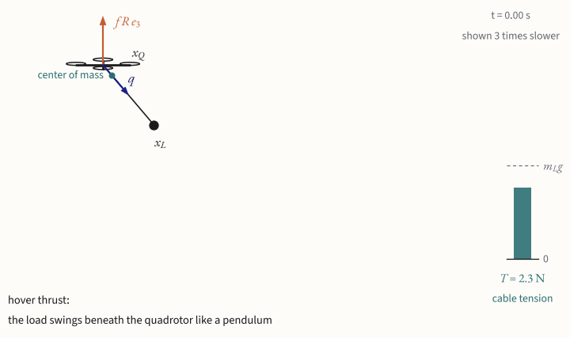
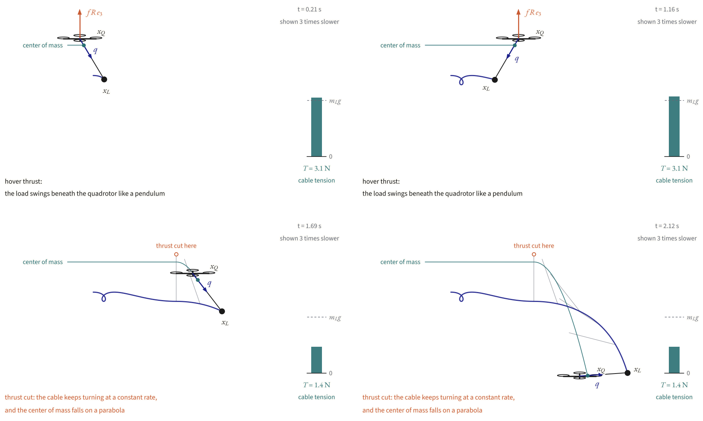
Figure 4.8. Cut the motors, simulated with (4.16) for the same two masses and l=1 m. The quadrotor flies level at hover thrust with the load swinging, and the thrust is cut as the cable passes the vertical. The cable keeps turning at a constant rate: the gray lines show it every 0.14 s. The center of mass leaves its level line for a parabola. The tension drops from 4.3 N to 1.4 N and stays there, positive because the cable is still turning.
Pitfall(A cable cannot push). Equations (4.16) assume a taut cable. They stay smooth when (4.17) goes negative, and will then simulate a cable that pushes. Monitor the sign of T. When it reaches zero the load is in free fall, and the model must switch to two separate bodies until the cable snaps taut again.
More factors. The recipe does not change with size. Let n quadrotors carry one point mass, each on its own cable qi of length li. The configuration space is R3×(S2×SO(3))n and the same free-body argument gives
With one quadrotor this collapses to (4.16). Each quadrotor adds inertia to the load only along its own cable, through miqiqi⊤. Wu (2017) carries the derivation through for a rigid-body payload, on SE(3)×(S2×SO(3))n.
Legged robots fit the same mold. Siravuru’s Reaction Mass Biped has two telescoping legs and a torso with movable masses, on a product of three copies of SO(3) with two leg lengths and three mass positions, of dimension fourteen (Table 2.1). Its simplest piece already shows something new.
Example 4.3(A telescoping leg). A leg pivots about its foot with attitude R and inertia J0, and carries a mass m at distance l along its axis Re3. A force f extends it and a torque τ acts at the ankle. The configuration space is R×SO(3), and with Π=I−e3e3⊤, the projection off the leg axis,
The inertia now depends on the configuration, and its rate J˙=2mll˙Π appears as a new term: extend the leg and the rotation slows, like a skater opening her arms. The variation δl is the ordinary one and δR=Rη∧ is that of Section 4.3. Nothing else was needed.
4.7 Staying on the manifold while integrating
The naive integration step treats the nine entries of R as nine numbers: Rk+1=Rk+hRkΩk∧. Section 2.8 showed what happens:
Rk+1⊤Rk+1=I−h2(Ωk∧)2=I,
so every step stretches the matrix a little, and it is no longer a rotation. The remedy is the exponential step (2.12), which moves along the manifold with the device we used to build variations:
Rk+1=Rkexp(hΩk∧),qk+1=exp(hωk∧)qk.(4.20)
Each update is a rotation, so Rk+1∈SO(3) and ∥qk+1∥=1 to rounding error, for any step size. Higher-order methods run their Runge-Kutta stages on a rotation vector inside the step and apply its exponential at the end.
Figure 4.9 compares the two fourth-order versions on the pendulum (4.12), swinging and spinning for 60 s with h=0.02 s. Classical RK4 on the entries of R ends with ∥R⊤R−I∥=4.6×10−4 and growing. The exponential version holds 10−14.
Figure 4.9. A 3D pendulum integrated for 60 s at h=0.02 s by two fourth-order methods. Left: the entrywise method drifts off SO(3), the exponential update does not. Right: the energy error of the two methods is nearly the same.
Now look at the right panel. The energy drifts in both: by 2.9×10−4 J for the naive method and 2.2×10−4 J for the exponential one, out of 7.4 J. Staying on the manifold is not the same as conserving energy. Integrators that do both are built by discretizing Hamilton’s principle itself, with an action sum in place of the action integral. They are the subject of the chapter on variational integrators.
We now have models that are short, global and checkable. What do you do when the system is too large to derive by hand? Chapter 5 answers that.
Exercises
Exercise 4.1. For the variation (4.1) on the sphere, show that the angular velocity ω=q×q˙ varies as in (3.3), δω=ξ˙−2ω×ξ, and that the last term equals 2(ξ⋅q˙)q. Check that δ(ω⋅q)=0. Then confirm the formula by finite differences in the notebook.
Exercise 4.2. Starting from q˙=ω×q with ω⋅q=0, prove q⋅ω˙=0 and q×q¨=ω˙, and derive (4.5) from (4.2). Show that the energy and e3⋅ω are conserved.
Exercise 4.3. Apply the three moves to L=21Ω⋅JΩ−mge3⋅Rρ and derive (4.12). Show that e3⋅RJΩ is conserved when τ=0. Why are the other two components of RJΩ not?
Exercise 4.4. Linearize Euler’s equation about a steady spin on each principal axis and derive (4.14). Show that the spin is unstable only about the intermediate axis. In the notebook, measure the growth rate for the book of Example 4.2 and compare.
Exercise 4.5. Derive (4.16) from the Lagrange-d’Alembert principle, using the Lagrangian and virtual work given in Section 4.6 and the variations δxL, δq=ξ×q, δR=Rη∧. Where does the term mQl∥q˙∥2 come from? Then show that with f=0 and τ=0 the total energy is conserved.
Exercise 4.6. The thrust of a quadrotor acts at the body point r, measured from the center of mass. Use Proposition 4.3 to write its equations of motion. For r=(0.01,0,0) m and a 1 kg vehicle, what constant torque must the rotors supply in hover?
Exercise 4.7. Implement both first-order steps, the naive one and (4.20), for the free rigid body. Verify that after N naive steps at constant Ω the error ∥R⊤R−I∥ is close to Nh2∥Ω∥2 in the spectral norm. Then tumble the book of Example 4.2 with each and plot ∥RJΩ−R0JΩ0∥.
Notes and sources
Variations on S2 and SO(3) are treated as in Lee, Leok and McClamroch (2018), which works through pendulums, rigid bodies and multibody systems in this style. The comparison of Euler-angle and SO(3) models of the 3D pendulum, with the conditioning of the Euler mass matrix, is from Siravuru (2019, ch. 4). He uses the ZXY angle order, singular at 90° of roll; we used the ZYX order of (1.2). The Reaction Mass Biped is his chapter 5, which also carries out the derivation in discrete time. Sreenath, Lee and Kumar (2013) derived the quadrotor with a cable-suspended load, written there on SE(3)×S2. The form (4.16), the tension (4.17) and the multi-quadrotor payload models are in Wu (2017, ch. 3). Teng et al. (2026) write rigid-body dynamics on SE(3) in Euler-Poincaré form for trajectory optimization. Marsden and Ratiu (1999) is the standard reference for the free rigid body and the stability of its steady spins.
It is unworthy of excellent men to lose hours like slaves in the labour of calculation which could safely be relegated to anyone else if machines were used.
Here are the equations of motion of a quadrotor carrying a load on a cable. They are copied from a PhD thesis on aerial transportation (Wu, 2017), where every controller is designed on them.
They are (4.16) again. The load is at xL. The unit vector q points from the quadrotor down the cable to the load, with q˙=ω×q. The quadrotor has attitude R, thrust f and torque τ. Now one question. Look at the term mQl∥q˙∥2 in the first line. It is printed with a minus sign. Should it be a plus?
Try to decide before reading on. Staring does not help. You could re-derive the equations, as Section 4.6 does. Or you could fly. In hover the cable hangs still, q˙=0, and the term is zero. A model with the wrong sign matches every hover log you will ever record. The error only appears when the load swings. For a 1.5 kg quadrotor on a 1 m cable swinging at 2 rad/s, the wrong sign invents a force of 12 N along the cable. The load weighs 2.9 N.
So one sign can pass every bench test and fail in the first aggressive maneuver. This chapter offers a third option. Let a program do the derivation, since a program does not drop signs. Then test its answer with a check that shares none of its reasoning.
5.1 Seventeen lines
The program is geomech, a Python library. You give it a Lagrangian and the virtual work of the inputs. It returns the equations of motion. Here is the whole quadrotor with its load.
from geomech import *
half = Scalar("0.5", value=0.5, attr=["Constant"])
mQ, mL, g, l = getScalars("m_Q m_L g l", attr=["Constant"])
J = Matrix("J", attr=["Constant", "SymmetricMatrix"])
e3 = Vector("e3", attr=["Constant"])
xL, q, R = Vector("x_L"), S2("q"), SO3("R") # load, cable direction, attitude
f, tau = Scalar("f"), Vector("\\tau") # thrust, torque
omega, xi = q.get_tangent_vector(), q.get_variation_vector()
Omega, eta = R.get_tangent_vector(), R.get_variation_vector()
xQ = xL - q * l # quadrotor: one cable length up
vQ, vL = xQ.t_diff(), xL.t_diff()
L = (half * mQ * Dot(vQ, vQ) + half * mL * Dot(vL, vL)
+ half * Dot(Omega, J * Omega) - mQ * g * Dot(e3, xQ) - mL * g * Dot(e3, xL))
dW = Dot(xL.delta() - Cross(xi, q) * l, (R * e3) * f) + Dot(eta, tau)
variables, inputs = SystemVariables(vectors=[xL, q], matrices=[R]), [f, tau]
eom = compute_eom(L, dW, variables)
err = check_eom(L, dW, variables, eom, inputs=inputs)
Read it like the first page of a derivation. Constants are flagged so that their variations vanish. The three configuration variables are declared by the manifold they live on: a position in R3, a direction on S2, an attitude on SO(3). The library hands back the matching velocities and variations: omega is the ω of q˙=ω×q, xi is the ξ of δq=ξ×q, and Omega, eta are the Ω and η of R˙=RΩ∧ and δR=Rη∧. The Lagrangian is kinetic minus potential energy. The virtual work says the thrust fRe3 acts at the quadrotor, whose virtual displacement is δxQ=δxL−lξ×q, and the torque pairs with η.
The derivation and the check together run in well under a second. The result is one equation per variation. Two of them, in our notation:
There is the disputed term, with a minus sign. (Since ω⊥q, ∥q˙∥2=ω⋅ω.) The third equation, for the cable, has seven terms and waits in Section 5.4. The last line sets err to 4.1×10−8. That number will matter more than the equations.
Two things should bother you. Why believe a program over a thesis? And what did the program actually do?
5.2 Why not ask a computer algebra system?
Take the second question first. Computer algebra systems have differentiated Lagrangians for decades. Why a separate tool?
A general system differentiates functions of real variables. Ask it for ∂L/∂R and it wants to know what R is a function of. You can answer with three angles, and you are back in Section 1.2 with a singularity. You can answer with nine matrix entries and six constraints, and you now carry Lagrange multipliers for constraints the geometry already knows. Either way you have left the manifold to please the software.
Now look again at the three moves of Section 4.1. It never differentiates with respect to R. It does four things. Apply δ with the product rule. Replace the variation of each manifold quantity with a known expression. Integrate by parts. Read off what multiplies each variation. None of these steps needs coordinates. Each one replaces a pattern of symbols with another pattern.
So the right object is not a function of numbers. It is a tree (Figure 5.1). Interior nodes are operations: Add, Mul, Dot, Cross. Leaves are symbols, and every leaf carries a type that says where it lives.
Figure 5.1. The Lagrangian of the spherical pendulum as the library stores it, drawn from the stored object. Products are binary, so 21ml2 is a chain of three Mul nodes. The color of a leaf is its type. That type is all the program knows about q, and it is enough.
The type is what lets a rewrite rule do geometry. The program does not know what a pendulum is. It knows that the variation of a leaf of type “point on S2” is ξ×q, that the variation of a leaf flagged constant is zero, and so on down Table 5.1.
Table 5.1.
Declared as
Lives on
Velocity
Variation
Variation of the velocity
Scalar("s")
R
s˙
δs
dtdδs
Vector("x")
R3
x˙
δx
dtdδx
S1("q", axis=a)
circle about the unit axis a
q˙=ωa×q
δq=γa×q
δω=γ˙
S2("q")
S2
q˙=ω×q
δq=ξ×q
δω=ξ˙−2ω×ξ
SO3("R")
SO(3)
R˙=RΩ∧
δR=Rη∧
δΩ=η˙+Ω×η
The five leaf types and the rules attached to them. The last column is Table 3.2, stored as data.
Nodes cannot be modified once built. A rewrite never edits a tree. It builds a new one. So every intermediate stage of a derivation still exists afterwards, and you can ask to see it.
5.3 One pendulum, every stage
The quadrotor is too big to watch. Take the smallest system that has a curved configuration space: a mass m on a rigid rod of length l, pivoting freely about the origin. The rod direction is q∈S2. A torque τ acts at the pivot.
L=21ml2ω⋅ω−mglq⋅e3,δW=ξ⋅τ.
m, g, l = getScalars("m g l", attr=["Constant"])
e3 = Vector("e3", attr=["Constant"])
q, tau = S2("q"), Vector("\\tau") # rod direction, torque at the pivot
omega, xi = q.get_tangent_vector(), q.get_variation_vector()
L = half * m * l * l * Dot(omega, omega) - m * g * l * Dot(q, e3)
dW = Dot(xi, tau)
variables = SystemVariables(vectors=[q])
trace = EOMTrace()
eom = compute_eom(L, dW, variables, trace=trace)
The trace argument asks the pipeline to keep every stage. It records thirteen. Figure 5.2 shows the five that change the expression, exactly as the library prints them. Follow them with a pencil.
Figure 5.2. The spherical pendulum going through the pipeline. Each box is the library’s own output for that stage. The bars count tree nodes: the expression grows when the manifold rule is substituted, then shrinks as identities fire. The last box is the equation of motion.
Vary. The product rule runs down the tree. The kinetic term gives δω⋅ω+ω⋅δω, kept as two terms because nothing has yet said the dot product is symmetric. The point q is replaced on the spot by ξ×q. The variation of the velocity, δω, is left as an unevaluated symbol.
Apply the manifold rule. Every δω becomes ξ˙−2ω×ξ, the S2 row of Table 5.1. The tree is now at its largest, 46 nodes. On paper you would write the same line. This is also where hand derivations go wrong: a flipped cross product, a forgotten factor of 2.
Simplify. Small identities are applied until nothing changes. One of them is that a vector is perpendicular to its own cross products, ω⋅(ω×ξ)=0. It deletes the term that was just introduced. For this Lagrangian the factor of 2 was never going to matter, and the program found that out by trying. Then the two halves merge and the 21 is absorbed. On paper you would have jumped here “by inspection”. The program cannot inspect. Over the whole derivation it logged 44 rule applications, each with a name. Two of them:
Integrate by parts. The term ml2ξ˙⋅ω becomes −ml2ξ⋅ω˙. The boundary term is dropped, because variations vanish at the end times. For a larger system this stage first has to rearrange each term until ξ˙ stands alone on one side of a dot product. It uses (x×y)⋅z=x⋅(y×z) and (Ax)⋅y=x⋅(A⊤y) to get there.
Extract. Every term is now ξ dotted with something. The gravity term needs one last turn of the triple product, (ξ×q)⋅e3=ξ⋅(q×e3). Collect what multiplies ξ:
Eξ=−ml2ω˙−mglq×e3+τ=0.(5.3)
Sanity check: hang the rod straight down, q=−e3, and q×e3=0. No torque, no acceleration. With τ=0 this is (4.5), with every term moved to one side.
Thought experiment 5.1(The clerk who knows no mechanics). Hand the five boxes of Figure 5.2 to a careful clerk who has never seen a pendulum. Give them one card with the rules: the product rule, the S2 row of Table 5.1, x⋅(x×y)=0, the triple product, and “move the dot from ξ to its partner and flip the sign”. Ask them to check that each box follows from the one above.
They can. Nothing on the card mentions energy, force or a sphere. That is what it means for the derivation to be mechanical, and it is why a machine can do it. It is also a warning. The clerk will apply a wrong card just as carefully as a right one.
Notice the form of (5.3). Everything is on one side and the inertia term is negative, because Eξ is literally the coefficient of ξ in δS. The library does not rearrange.
The clerk’s warning is the open problem. Exact is not the same as right. A rule in the library could be wrong. Or the equation you are holding came from somewhere else. What would convince a skeptic?
5.4 Trust, but verify
A skeptic wants a second derivation that shares nothing with the first. There is one. The Euler-Lagrange equations can be evaluated numerically from L alone, with no algebra at all.
That is what check_eom does. It draws a random state: a random point on each manifold, random velocities, random accelerations, random inputs, random values for every constant. It evaluates the number L at nearby states and forms the Euler-Lagrange expression, the time derivative of ∂L/∂x˙ minus ∂L/∂x, by central differences, in the constrained forms that hold on S2 and SO(3). It adds the forcing read from δW. Then it evaluates the symbolic coefficients at the same state and compares. No product rule, no manifold rule, no integration by parts. The only thing the two computations share is L. The function returns the worst relative error over five random states.
For the quadrotor it returned 4.1×10−8. That is the noise floor of a finite difference. Now run the experiment from the opening. Type in the load equation as if from a page of algebra, once with each sign.
aL, domega = xL.t_diff().t_diff(), omega.t_diff()
def load_equation(sign): # the x_L row, typed in from a page of algebra
return ((aL + e3 * g) * (mQ + mL) * (-1) + Cross(domega, q) * (mQ * l)
+ q * (Dot(omega, omega) * mQ * l) * sign + (R * e3) * f)
for sign in (-1, +1):
hand = dict(eom)
hand[str(xL.delta())] = (xL.delta(), load_equation(sign))
print(sign, check_eom(L, dW, variables, hand, inputs=inputs))
-1 4.059809332153562e-08
1 1.9027858460945652
Seven orders of magnitude apart (Figure 5.3, left). The companion function assert_eom says which equation is at fault: equation for '\delta{x_L}' disagrees with the Euler-Lagrange residual: relative error 1.903e+00 >= 1.0e-05.
Figure 5.3. Left: the check applied to the hand-typed load equation at 20 different random seeds. With the correct sign the error stays at finite-difference noise. With the sign flipped it is of order one. Right: why flight testing in hover would not have found it. The spurious force grows with the square of the swing rate and is zero when the cable hangs still.
Example 5.1(Why the random state matters). With mQ=1.5 kg and l=1 m, the two versions of the load equation differ by 2mQl∥ω∥2q. At ω=0 that is nothing. At 2 rad/s it is 12 N, or 6.7 m/s² of load acceleration, against a load weight of 2.9 N. A test at hover checks the equation at the one state where the wrong term is silent. The check draws ω at random, so every term is exercised at once. Over 20 seeds the wrong equation scored between 0.30 and 2.8. The right one never exceeded 9.0×10−8.
Now the cable equation, which we skipped. The program returns
The first line has a counterpart in the thesis. The bracket has none. Three terms in the load’s velocity, which (5.1) never mentions. Is the program wrong, or the thesis?
Thought experiment 5.2(Pushing along the rod). Hold a pendulum by its pivot and push the bob straight along the rod, toward the pivot. Nothing happens. The rod takes the push. Only the part of a force that lies across the rod can move the bob.
The equations inherit this. A variation ξ is always perpendicular to q, so ξ⋅Eξ only ever tests the part of Eξ that lies in the tangent plane. Whatever Eξ has along q is multiplied by zero in δS. It is not an equation. It is not anything.
Figure 5.4. The coefficient Eξ of ξ for the cable, evaluated at one state and drawn at q. Only its tangent part is an equation of motion. The program does not remove the part along q, and two correct answers may differ there.
Apply the Jacobi identity to the bracket in (5.4) and it collapses to −(ω⋅x˙L)q. It points along q (Figure 5.4). It is the push along the rod. The simplifier has no Jacobi rule, so the three terms survive, and they are harmless. The check compares tangent parts only. Add any multiple of q to the cable equation and it still passes, as it should.
Pitfall(Two conventions that will bite).Signs. Every equation sets the coefficient of a variation to zero, Eξ=0, with Eξ=−(Euler-Lagrange expression)+forcing. A point mass gives −mx¨+F=0. If you copy an equation into a paper, move the inertia across yourself.
Tangent plane. For a variable on S2 the equation is (I−qq⊤)Eξ=0, together with q⋅ω˙=0, as in the pitfall. Never solve Eξ=0 as three equations in three unknowns. The answer will have q⋅ω˙=0 and the trajectory will leave the sphere.
Some mistakes never reach the check. The library refuses, with a message that names the culprit. Two you will meet in your first week:
ValueError: compute_eom: δS still contains the variation symbols '\delta{e3}' of the
symbols 'e3', which are neither entries of SystemVariables nor declared in params; ...
TypeError: compute_eom: SystemVariables.vectors entry '\omega_{q}' is a tangent or
variation vector, not a configuration variable; list the manifold point 'q' instead
The first means you forgot attr=["Constant"] on e3, so the program varied it. The second means you listed a velocity where a configuration was wanted. A forgotten flag does not always raise an error. Leave "SymmetricMatrix" off the inertia and you get a correct equation with 21(J+J⊤) throughout. The program will not assume what you did not declare.
The check has two blind spots. It measures error relative to the size of the whole equation, so a wrong term that is tiny next to its neighbors can hide. Leave parameters symbolic and they are drawn of order one, which avoids this. And it compares the equation with the Lagrangian, not the Lagrangian with the robot. Type the wrong kinetic energy and you get the right equations for the wrong machine, verified to eight digits.
Verified equations are still only symbols. To see whether they describe a quadrotor, they have to move.
5.5 From equations to motion
An integrator needs accelerations. Each coefficient is linear in them and in the inputs, so the equations split as
Mv˙+b+Gu=0,(5.5)
with the velocities stacked as v=(x˙L,ω,Ω) and the inputs as u=(f,τ). The mass matrix M and the input matrix G depend on the configuration, and b on the configuration and the velocities. The function to_standard_form performs the split symbolically. Because of the sign convention, M is minus the physical inertia: the load row has −(mQ+mL)I, the attitude row has −J. The cable row has mQl2q∧q∧=−mQl2(I−qq⊤), which has rank two. That is the tangent plane again, showing up as a singular block.
module_source writes (5.5) out as a plain NumPy module, 311 lines for this system, with functions for M, b, G, the kinematics and the energy. It no longer needs the symbolic library. simulate integrates it with a fourth-order Runge-Kutta-Munthe-Kaas scheme. The idea is a familiar one: do not add increments to q and R. Each step moves q by a rotation and R by a matrix exponential, so the state cannot leave the manifold. The S2 rows are projected as the pitfall demands.
The run in the listing holds the thrust at the total weight, with zero torque. The cable starts 0.8 rad from vertical and circling, and the center of mass coasts at 0.45 m/s (Figure 5.5).
Figure 5.5. The simulated trajectory, five snapshots over 6 s. The thrust cancels the total weight, so the center of mass moves on a straight line. The light load swings wide below, and the heavy quadrotor wobbles about the same line with one fifth of the radius.
A trajectory figure proves little. Conserved quantities prove more.
Example 5.2(Four checks on one simulation).Constraints. Over 6000 steps, ∥q∥−1, q⋅ω and R⊤R−I stay below 3×10−13.
Energy. With no inputs the system falls freely and energy must be constant. The relative drift is 1.0×10−12. Coarser steps of 0.04, 0.02 and 0.01 s give 1.0×10−8, 6.5×10−10 and 4.1×10−11: a factor of 16 per halving, the signature of a fourth-order method.
Work. With thrust on, energy is not conserved. It varies over a range of 0.75 J. But a constant vertical force has a potential, so the energy minus fe3⋅xQ should be constant. It is, to 7×10−12 J.
Momentum. The center of mass stays on its straight line to 1.3×10−10 m. The quadrotor circles it at 0.167 m, the load at 0.833 m. The ratio is mQ/mL=5.
Now settle the opening question. Equation (5.1) is solved for the accelerations. The program’s rows (5.2) and (5.4) are coupled. Substitute one into the other and two lines of algebra give the thesis form. Numerically, the accelerations from the generated code and from (5.1) agree to 2.5×10−14 at 50 random states. The thesis is right. The sign is a minus.
A controller needs one more thing: the dynamics linearized about a trajectory. That is one more variation. Apply δ to each coefficient Eξ itself, with the same rules, and collect terms. The function linearize does this and returns Mδx˙=Aδx+Bδu in the variations (δxL,ξ,η) and their rates. Chapter 7 develops it, and its Proposition 7.1 and Proposition 7.3 are checked against this function.
5.6 More bodies
Nothing in the pipeline cared that the quadrotor lives on a product, R3×S2×SO(3). We listed three variables and got three equations. Larger products cost typing and little else. The second model of Wu’s thesis has several quadrotors carrying one rigid body by cables. It is among the 30 systems in the library’s catalog. With three quadrotors it has 21 degrees of freedom and eight coupled equations. They derive in a fraction of a second and check at 9.0×10−8.
A harder request: a chain of n spherical pendulums, where n is a symbol. There are n equations and you cannot type them. The geomech.indexed module lets you write the Lagrangian with sums.
from geomech.indexed import (Family, IndexedVariables, Sum, compute_indexed_eom,
indices, n)
i, j = indices("i j")
g, e3 = Scalar("g", attr=["Constant"]), Vector("e3", attr=["Constant"])
q = Family(S2, "q") # q_1, ..., q_n
m = Family(Scalar, "m", attr=["Constant"])
l = Family(Scalar, "l", attr=["Constant"])
def x(k): # position of mass k
return Sum(j, 1, k, q[j] * l[j])
v = x(i).t_diff()
L = Sum(i, 1, n, 0.5 * m[i] * v.dot(v)) - Sum(i, 1, n, m[i] * g * x(i).dot(e3))
chain = IndexedVariables(families=[q])
eom = compute_indexed_eom(L, None, chain)
for size in range(1, 7):
members, eq = chain.members(size), eom.instantiate(size)
print(size, check_eom(L.instantiate(size), None, members, eq))
The result is a single equation for link i, with sums whose limits depend on i. On the tangent plane of qi it reads
Read Mij aloud: the mass hanging below both link i and link j, times the two lengths. Nobody typed the max(i,j). The Lagrangian contains ∑imi∥∑j≤iljq˙j∥2, and exchanging the order of summation produces that bound. The program does the exchange. (Its raw output also carries three terms per pair that point along qi, the same Jacobi leftovers as before.)
The loop at the end of the listing instantiates the generic equation for n=1 to 6 and checks each against the Lagrangian expanded for the same n. The errors run from 6.2×10−9 to 1.1×10−7. Figure 5.6 simulates n=4.
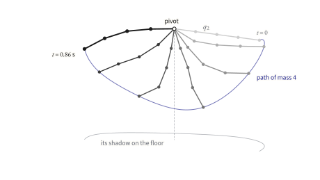
Figure 5.6. A chain of four equal links, released from the horizontal while turning about the vertical, simulated from the generic equation instantiated at n=4. Seven instants are overlaid, light to dark. Energy drifts by 2.6×10−8 over 2 s at the default step: the chain whips, and a fixed step feels it.
How does a sum fit into a tree? It does not. A sum is kept as a list of ordinary trees whose leaves carry an index, with the inequalities between indices stored beside them. Each tree goes through the same five stages. The inequalities become the limits of the sums that remain.
5.7 What it cannot do
A tool you trust is a tool whose edges you know.
The Lagrangian must depend on configurations and velocities only. Put an acceleration in it and the library stops with “the Lagrangian depends on accelerations … higher-order Lagrangians are not supported”. (Any power of the velocity is fine. A quartic kinetic term derives and checks.)
The manifolds are R, R3, S1, S2, SO(3) and their products. SE(3) exists only as R3×SO(3) with the world-frame velocity x˙. There is no way to declare a new manifold from outside.
Constraints must be built into the configuration space, as the cable is built into S2. Rolling constraints, closed kinematic chains and contact are out of scope. The cable here is always taut. A cable that goes slack is a different model with a different configuration space, and switching between them is your job.
The simplifier is not canonical. Two correct answers can print differently, as the bracket in (5.4) showed. Compare equations by value, with the check, never by eye.
And once more: the check certifies the equations against L. It cannot certify L against the world.
Exercises
Exercise 5.1. Settle the sign in (5.1) by physics alone. Cut the thrust, f=0, so that both bodies fall freely while whirling about their center of mass. Which way must the cable pull the load? Compare with the first line of (5.1) and with the tension (4.17).
Exercise 5.2. Derive the S2 rule (3.3), δω=ξ˙−2ω×ξ, from ω=q×q˙ and δq=ξ×q with ξ⋅q=0. Show that the second term points along q. Then find a Lagrangian for which it does not drop out, derive its equations in the notebook, and locate the stage of the trace where the term survives.
Exercise 5.3. Walk the 3D pendulum, L=21Ω⋅JΩ−mge3⋅Rρ with δW=η⋅τ, through the pipeline by hand, one box per stage as in Figure 5.2. Then run it with a trace and compare. You should reach −JΩ˙−Ω×JΩ−mgρ×R⊤e3+τ=0, which is (4.12). Which term comes from δΩ=η˙+Ω×η, and why does it not vanish here as it did on the sphere?
Exercise 5.4. Prove that the bracket in (5.4) equals −(ω⋅x˙L)q. Then eliminate ω˙ between (5.4) and the first row of (5.2) to recover the first line of (5.1).
Exercise 5.5. Plant your own error. In the notebook, change one sign or one factor in the cable equation and run check_eom. Find a change that the check cannot see, and explain in one sentence why it is not an error.
Exercise 5.6. Replace the rigid cable by a spring: add a scalar variable for the cable length, with elastic energy 21k(l−l0)2. Derive, check and simulate. How many equations are there now? Then use (5.6) to write the mass matrix of a three-link chain and compare it with to_standard_form at n=3.
Notes and sources
The variational method that the pipeline automates, the rules of Table 5.1 and the chain of pendulums behind (5.6) are set out by Lee, Leok and McClamroch (2018). Bittner and Sreenath (2016) were the first to automate the derivation of coordinate-free equations on manifolds, with a package written in Scala. geomech (Kotaru, 2026) is a Python library in the same line. It adds the numerical check, linearization, code generation, simulation and sums over a symbolic number of bodies. The numbers in this chapter were produced with version 1.1.0.
The quadrotor with a cable-suspended load, (5.1), and the multi-quadrotor rigid-payload model are taken from Wu (2017, ch. 3). The single-quadrotor model was first derived by Sreenath, Lee and Kumar (2013). For a sense of what the automation replaces, see the Reaction Mass Biped of Siravuru (2019, ch. 5): a configuration manifold of dimension fourteen, with three attitudes on SO(3), two leg lengths and three pairs of sliding reaction masses, derived by hand from a variational principle over several pages. The integrator is due to Munthe-Kaas (1999).
… it is the mark of an educated man to look for precision in each class of things just so far as the nature of the subject admits.
A bead slides on a wire. You push it with −kpe−kde˙, where e is its distance from the target. Start it a millimeter away or a kilometer away, at rest or flying past. It always arrives. The proof is two lines: the energy 21e˙2+21kpe2 changes at the rate −kde˙2, which is never positive, and it can only stop changing at the target.
Now do the same for a tumbling quadrotor. Replace e by the attitude error eR and e˙ by the velocity error eΩ of Definition 1.4. The law looks identical. Does it also converge from anywhere?
It cannot. Theorem 1.3 forbids it for every continuous law, and you already know one start that fails: half a turn away, at rest, eR=0 and nothing pushes (Figure 6.1). So the promise has to be weaker than the bead’s. How much weaker? One bad attitude? A band of them? And what replaces the two-line proof?
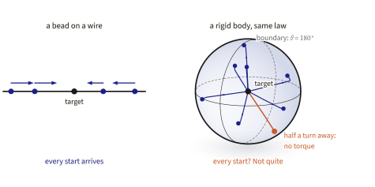
Figure 6.1. The same law in two worlds. On the wire every start slides to the target. In the ball of rotations of Figure 1.1, simulated starts from 160° away also run in to the center. But the whole boundary, the half turns, is a place where the restoring torque is zero, and a start close to it leaves slowly.
6.1 A PD law on the rotation group
Take a rigid body with a torque on each axis, the attitude part of (4.11):
JΩ˙+Ω×JΩ=τ,R˙=RΩ∧.
The reference is a moving attitude Rd(t) with R˙d=RdΩd∧. We want Rd⊤R→I. By (3.7) the relative attitude moves with body rate eΩ=Ω−R⊤RdΩd, so the first task is to find out how eΩ itself changes. Differentiate it. The transport map R⊤Rd moves too:
e˙Ω=Ω˙+Ω×(R⊤RdΩd)−R⊤RdΩ˙d.(6.1)
The middle term is new. It is the rate at which the body’s own rotation turns the transported reference velocity in the body frame. Multiply (6.1) by J and substitute the dynamics. Everything that is not feedback can now be canceled by the torque, and what remains is ours to choose:
Here kR>0 and kΩ>0 are scalar gains. The second group is the feedforward: it is computed from the model and the reference, not from the error. This is the attitude law of Lee, Leok and McClamroch (2010). In closed loop,
Thought experiment 6.1(The error has forgotten the reference). Read (6.3) and look for Rd(t) on its own. It is not there. The pair (Rd⊤R,eΩ) obeys a differential equation with constant coefficients. Ask the body to hold still, or to follow a satellite that tumbles about three axes at once. Start both experiments with the same relative attitude and the same velocity error. The two error histories are then the same function of time.
This is the invariance of Section 3.5 at work. A statement proved for a fixed target is proved for every reference.
In simulation the two histories agree to 3×10−10, the tolerance of the integrator. Throughout the chapter we use one vehicle, the quadrotor of Lee, Leok and McClamroch (2010): m=4.34 kg, J=diag(0.0820,0.0845,0.1377) kg·m², kR=8.81 N·m, kΩ=2.54 N·m·s. Near the target eR≈η (Section 3.6), so each axis behaves like Jiη¨i+kΩη˙i+kRηi=0. With these gains all three axes are overdamped, and the slowest pole is at −3.98s−1.
Near the target, then, (6.3) is the bead on the wire. What survives far from it?
6.2 The proof, and what it needs
Copy the bead’s energy. The height ΨR of Definition 1.4 plays the part of 21e2:
V0=21eΩ⋅JeΩ+kRΨR.(6.4)
Compatibility, the property Ψ˙R=eR⋅eΩ of (1.8), was designed for this moment. With (6.3),
Two things follow at once, and one thing does not.
A fence.V0 never increases and ΨR≤V0/kR. Since ΨR=2 only at half a turn, a start with V0(0)<2kR can never reach half a turn. Define Ψmax=V0(0)/kR. Then ΨR(t)≤Ψmax<2 for all time. The set {V0<2kR} is a sublevel set of V0: it contains every attitude short of half a turn, provided the velocity error is small enough to stay below the rim.
Convergence.V0 decreases whenever eΩ=0.
No rate. At a state with eΩ=0 and eR=0, (6.5) reads V˙0=0. The body is at rest relative to the reference, 57° off, and V0 cannot see that eR is about to accelerate it. A bound of the form V˙≤−γV, which is what exponential convergence means, is impossible for V0.
The standard cure is a cross term. Add a small multiple of eR⋅JeΩ, which is negative when the velocity error points downhill:
V=21eΩ⋅JeΩ+kRΨR+ceR⋅JeΩ.(6.6)
Differentiate with (6.3) and e˙R=CReΩ from (3.8):
There it is: −ckR∥eR∥2, a term that is negative when the body is at rest and off target. The price is the second term, which has the wrong sign, and the fourth, which has no sign. To control them we need three facts. Write Jmin and Jmax for the smallest and largest eigenvalues of J.
∥CR∥≤1 in the matrix 2-norm (Proposition 3.6), so eΩ⋅CR⊤JeΩ≤Jmax∥eΩ∥2.
∥eR∥2=ΨR(2−ΨR), from (1.7). Hence 21∥eR∥2≤ΨR everywhere.
On the fenced set, 2−ΨR≥2−Ψmax, so ΨR≤∥eR∥2/(2−Ψmax).
Fact 3 is where half a turn enters the proof. Near half a turn the height ΨR is large while the slope ∥eR∥ is nearly zero (Figure 3.3). The slope controls the height only if you stay a fixed distance below the rim.
Theorem 6.1(Exponential tracking on a sublevel set). Consider the closed loop (6.3) and a start with V0(0)<2kR. Let Ψmax=V0(0)/kR and z=(∥eR∥,∥eΩ∥). Then ΨR(t)≤Ψmax for all t≥0. For every c with 0<c<min{JmaxkRJmin,kΩ2+4kRJmax4kRkΩ},(6.8) the function (6.6) satisfies z⊤W1z≤V≤z⊤W2z and V˙≤−z⊤W3z along the solution, with the positive definite matrices W1=21[kR−cJmax−cJmaxJmin],W2=21[2−Ψmax2kRcJmaxcJmaxJmax],W3=[ckR−21ckΩ−21ckΩkΩ−cJmax].(6.9) Consequently V(t)≤V(0)e−γt with γ=λmin(W3)/λmax(W2), where λmin and λmax denote the smallest and largest eigenvalue of a symmetric matrix, and ∥eR(t)∥2+∥eΩ(t)∥2≤λmin(W1)λmax(W2)(∥eR(0)∥2+∥eΩ(0)∥2)e−γt.(6.10)
Proof. The fence follows from (6.5). The lower bound on V uses fact 2 and ∣eR⋅JeΩ∣≤Jmax∥eR∥∥eΩ∥. The upper bound uses fact 3. The bound on V˙ is (6.7) with fact 1 and ∣eR⋅eΩ∣≤∥eR∥∥eΩ∥. W1 is positive definite exactly when c2Jmax2<kRJmin, and W3 exactly when ckR(kΩ−cJmax)>41c2kΩ2. Those are the two entries of (6.8). Then V˙≤−λmin(W3)∥z∥2≤−γV.□
Each inequality in this proof was tested at 4000 random attitudes, velocity errors, full inertia matrices and gains. None failed, and (6.8) is sharp: one tenth of a percent above either limit, W1 or W3 loses definiteness.
Example 6.1(A floor, not a forecast). Start the vehicle 150° from a tumbling reference, with eΩ(0)=(0.5,−0.3,0.4) rad/s. Then V0(0)=16.46, just under the rim 2kR=17.62, and Ψmax=1.869. The limits in (6.8) are 6.17 and 7.92. The best choice, c=0.46, gives a guaranteed rate γ=0.034s−1.
Simulate (Figure 6.2). After a second, V decays at 8.0s−1: twice the slowest pole, as the linearization predicts. The guarantee is more than 200 times slower than the truth.
That is not an error. The theorem must cover every start in the sublevel set, including those that graze the rim. Shrink the set and the guarantee improves: γ=0.26 for Ψmax=1 and 0.49 for Ψmax=0.1. Grow it and γ falls in proportion to 2−Ψmax, reaching zero at the rim. A Lyapunov rate is a floor. Tune with the poles, and use the theorem to know where the floor exists.
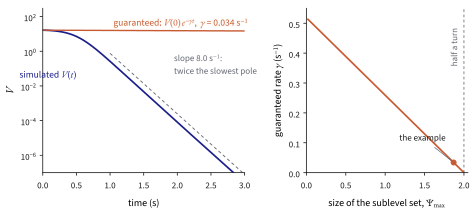
Figure 6.2. The Lyapunov function of Example 6.1 along a simulated run, on a logarithmic axis, with the decay the theorem guarantees. Right: the guaranteed rate against the size of the sublevel set. It vanishes as the set grows to include half a turn.
The theorem stops at the rim, ΨR=2. What happens there, and to the starts above the fence that fly over it?
6.3 Almost everywhere
Find the places where the closed loop can sit still. In (6.3), rest requires eΩ=0 and eR=0. By (1.7), eR=sinθa vanishes at θ=0, the target, and at θ=π: every half turn, about every axis a. Those fill the whole boundary of the ball in Figure 6.1, a two-parameter family of equilibria.
Thought experiment 6.2(Balancing on the rim). Sit the body exactly half a turn away about the axis a, at rest. Now nudge it by a small η. Near a half turn the error vector is eR≈−(aa⊤)η: only the part of the nudge along a counts, and the sign is reversed. Push further around the same axis and the torque pushes you on, away from the half turn. The same is true if you pull back. Either way you roll off, the long way or the short way, like a pencil on its point.
Nudge about an axis perpendicular to a instead. You get a half turn about a slightly different axis. Still on the rim, still no torque. The rim is a ridge that is flat along itself and falls away on both sides.
The linearization at a half turn confirms it: one eigenvalue with positive real part, two at zero, three stable. The unstable rate λ solves Jiλ2+kΩλ−kR=0 for a half turn about a principal axis, which gives λ=3.15, 3.14 and 2.99s−1 for our vehicle.
A family of equilibria is awkward to reason about. The weights of (3.4) remove the awkwardness, as Example 3.2 showed: with D=diag(d1,d2,d3) and distinct entries, the slope (3.5) vanishes at exactly four attitudes.
Theorem 6.2(Almost-global tracking). Use the weighted error vector (3.5) with d1>d2>d3>0 in the law (6.2). Then the closed loop, written in the error state (Rd⊤R,eΩ), has exactly four equilibria: the target and the three half turns about the body axes. The target is asymptotically stable, and exponentially so near it. The three half turns are unstable, with one, two and three unstable directions. Every solution converges to one of the four, and the starts that converge to a half turn form a set of measure zero.
Proof. The error system is autonomous, and V0 with the weighted ΨR still obeys (6.5), because Ψ˙R=eR⋅eΩ holds for any weight (Proposition 3.6). SO(3) is compact, so every sublevel set of V0 is compact. LaSalle’s invariance principle then sends every solution to the largest invariant set with eΩ=0, which is the set of equilibria. There are four, they are isolated, so each solution converges to one of them. Near an equilibrium eR≈HessΨRη, with HessΨR the diagonal Hessian of Exercise 3.4, and the linearization is Jη¨+kΩη˙+kRHessΨRη=0. It has no eigenvalue on the imaginary axis, and as many unstable eigenvalues as the Hessian has negative entries: 0, 1, 2 and 3. The states that converge to an unstable equilibrium form its stable manifold, of dimension 5, 4 and 3 in a six-dimensional state space. Each has measure zero.□
This is what an almost-global result is (Section 1.4), and no more. Three things it does not say.
It does not say the exceptional set is three points. It is three thin sheets through the state space, made of starts with just the right velocity to climb to a saddle and stop.
It gives no rate. The exponential bound belongs to Theorem 6.1 and its sublevel set. Outside, convergence can be as slow as you like.
And with equal weights, the case of Theorem 6.1 and of most flight code, the proof above does not apply as written, because the equilibria are not isolated. LaSalle still gives convergence to the target or to the rim, and each point of the rim still has its one unstable direction. Showing that the starts attracted to the rim form a thin set takes a longer argument, which we do not give. Lee, Leok and McClamroch (2010) state the equal-weight result in the form of Theorem 6.1: exponential convergence from ΨR(0)<2 with a bounded velocity error.
Now the experiment (Figure 6.3). Start the vehicle at rest from 240 attitudes with random axes, from 5° up to 179.999° from the target. Every one of them converges. From 90° the error is inside 5° within 0.87 s, and from anything below 150° within 1.24 s. Beyond that the time climbs. About e1 it is 2.34 s from 179°, 3.07 s from 179.9°, 3.80 s from 179.99°. Each factor of ten closer to the rim costs ln10/λ=0.73 s, the same law that Example 3.3 found on one axis, now with λ set by the gains and the inertia. From exactly 180°, at rest, the body is still there after ten seconds.
Figure 6.3. Time for the attitude error to fall inside 5° for good, against the initial error angle, for 240 simulated starts at rest. The trace error (indigo) slows as the start approaches half a turn, by 0.73 s per factor of ten. The same gains with the logarithm error (teal) do not slow.
So the slow region is wider than “measure zero” suggests. A start within a tenth of a degree of the rim is not exceptional, and it still waits three seconds.
6.4 The same template on the sphere
A thrust axis, a cable and a pendulum rod are directions q∈S2. Table 3.2 says to change column and repeat. Take the spherical pendulum with a force F on the bob, (7.4), and a reference qd(t) with q˙d=ωd×qd. The errors are eq=qd×q and eω=ω−(I−qq⊤)ωd of (3.10). Differentiate the velocity error:
e˙ω=ω˙−(I−qq⊤)ω˙d+(q⋅ωd)q˙+(q˙⋅ωd)q.(6.11)
The last term points along q. It keeps eω tangent and does no work against tangent vectors. Ask for the rest to be a PD law:
The first equation is the angular acceleration we want. The second is the force that produces it in (7.4). With V0=21∥eω∥2+kqΨq and Ψ˙q=eq⋅eω, the energy argument repeats word for word: V˙0=−kω∥eω∥2. So does the cross term, using (3.11) for e˙q, with one difference.
Proposition 6.3(Exponential tracking of a direction). Let ∥ωd(t)∥≤ωmax. For the closed loop (6.12), a start with V0(0)<2kq keeps Ψq(t)≤Ψmax=V0(0)/kq<2. With V=V0+ceq⋅eω, z=(∥eq∥,∥eω∥) and 0<c<min{kq,(kω+ωmax)2+4kq4kqkω}, the bounds of Theorem 6.1 hold with Jmin=Jmax=1, kR→kq, and kω+ωmax in place of kΩ in the off-diagonal entries of W3.
The difference is the term (q⋅ωd)q×eq in (3.11). So the error dynamics on the sphere are not autonomous: the reference’s angular velocity appears in them, and a bound on it appears in the rate. The sphere is a homogeneous space and not a group (Section 2.5), and this is one of the places where that shows. For a fixed target the dynamics are autonomous again. The only other equilibrium is the antipode −qd. It is isolated, with two unstable directions, so the argument of Theorem 6.2 applies directly.
Figure 6.4 shows the law at work. The reference circles on a cone 35° from the vertical at 1.2 rad/s, and kq=16, kω=5.6. A start 60° away is inside 5° after 0.75 s. From 170° it takes 1.97 s, and from 179.9° it takes 4.16 s.
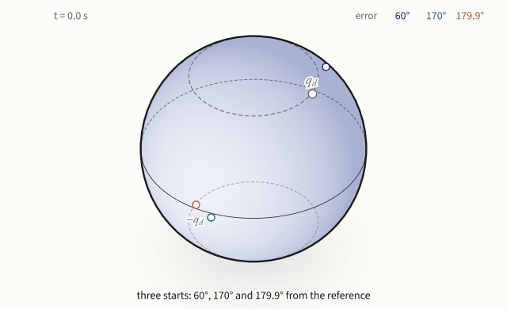
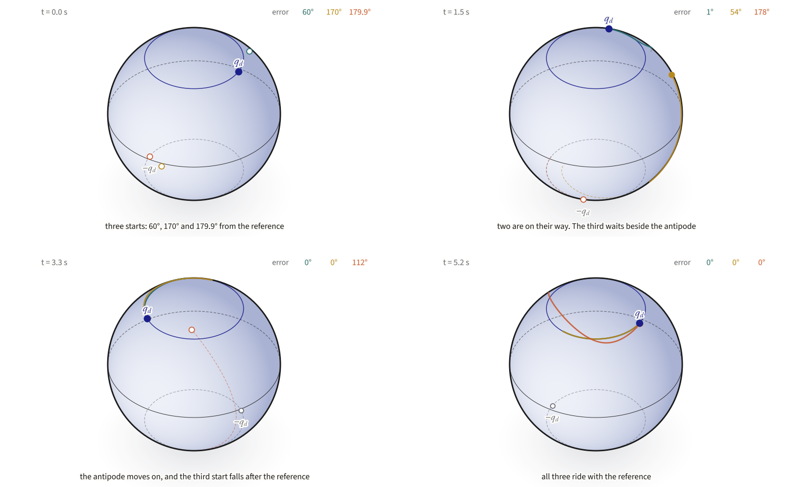
Figure 6.4. Three simulated starts chase a reference direction that circles on a cone. The start 60° away closes in at once. The start 179.9° away sits near the antipode of the reference, which moves too, before it falls toward it.
A direction with a force on it is fully actuated, as the rigid body was. Most flying machines are not.
6.5 Cascades: when the force must be aimed
The quadrotor of (4.15) has four inputs for six degrees of freedom:
mx¨=fRe3−mge3,JΩ˙+Ω×JΩ=τ.
To follow a position reference xd(t) we would like to apply the force
a PD law with gravity and feedforward: the desired force. The vehicle can only push along Re3. So do the next best thing, in two parts. Apply the component of Fd that the vehicle can produce now, and turn the vehicle until it can produce all of it:
The third column of the attitude reference is the direction of the desired force. The desired yaw ψd fixes the rotation about it: the first body axis is kept as close to the heading Rz(ψd)e1 as the tilt allows. The torque is (6.2), tracking this Rd. Position loop, then direction, then attitude: a cascade (Figure 6.5).
The bead on the wire again, driven by a disturbance, the force erroreF: the part of Fd the vehicle is not yet pointing along. Its size is set by the tilt angle θtilt of Section 3.3, between Re3 and Rde3. Since the tilt never exceeds the total error angle, ∥eF∥≤∥Fd∥∥eR∥ whenever ΨR<1.
Proposition 6.4(The quadrotor cascade). Apply (6.14) and (6.2), with Ωd and Ω˙d the exact derivatives of Rd along the closed loop. Suppose the reference acceleration is bounded and Fd does not vanish along the solution. Then the attitude error obeys (6.3), unaffected by the position loop. If moreover V0(0)<2kR, the errors eR, eΩ, ex and ev all converge to zero exponentially.
Proof.Rd is differentiable where Fd=0, so (6.3) holds, and Theorem 6.1 gives ∥eR(t)∥→0 exponentially, with ΨR<1 after a finite time. In (6.15), ∥Fd∥≤kx∥ex∥+kv∥ev∥+∥mge3+mx¨d∥, and sinθtilt is at most one always and at most ∥eR∥ eventually. So the stable linear system for (ex,ev) is driven by a term bounded by an exponentially decaying factor times an affine function of its own state. Gronwall’s inequality keeps the state bounded and then makes it decay.□
The cascade is triangular: attitude drives position and nothing comes back. That is why no condition on the gains appears. Lee, Leok and McClamroch (2010) prove more with more work. They treat the position and attitude errors together, and state exponential stability of the complete dynamics when the initial attitude error is less than 90°, that is ΨR(0)<1. When it is less than 180°, ΨR(0)<2, they state a weaker property, almost-global exponential attractiveness: the attitude error first decays into the region of the first result, which then takes over. Both results come with conditions on the gains and on the other initial errors. Consult the paper for their exact form.
Example 6.2(Thrown upside down). The reference is a circle of radius 1.5 m flown at 1 rad/s with a vertical wobble, heading along the tangent. Position gains are kx=16m and kv=5.6m. Release the vehicle at rest, 0.88 m from the reference, rolled 178° (Figure 6.5). Then ΨR(0)=1.55. For the first 0.20 s the desired thrust Fd⋅Re3 is negative. Rotors cannot pull, so we clip it at zero and the vehicle falls while it turns. It is right side up after 0.30 s. It drops 0.94 m below the reference, the position error peaks at 1.55 m, and it is back within 5 cm after 1.94 s. The peak thrust is 144 N, more than three times the hover thrust of 42.6 N, and the peak torque is 18 N·m.
Figure 6.5. The run of Example 6.2. The vehicle starts inverted beside the reference circle, cuts its thrust, rights itself while it falls, then climbs back and locks on. The short arrow is the thrust axis Re3. The long one is the force Fd that the position loop asks for.
Those thrust and torque peaks are a warning about the word “exact”, and so is this.
Pitfall(The feedforward is doing the separating).Proposition 6.4 needs Ωd and Ω˙d. They are derivatives of Rd, so of Fd, so they contain the vehicle’s acceleration and jerk. Most flight code sets them to zero, or to the values along the reference xd(t), and counts on the attitude loop being fast.
Check whether it is. The position loop has natural frequency 4 rad/s. The slowest attitude pole is at 3.98 s⁻¹. These are Lee’s published gains, and with exact feedforward they track the circle to 3×10−11 m. Set Ωd=Ω˙d=0 and the same gains diverge: from a 5 cm offset the error passes 5 m after 14.6 s. Multiply the attitude gains by (κ2,κ), which speeds the attitude loop up by κ. With κ=2 the loop is stable and the tracking error settles at 1.4 cm. With κ=4 it is 0.7 cm.
Conversely, with exact feedforward and the attitude loop made three times slower than the position loop, the errors still go to zero. A triangular cascade does not care about time scales. An approximate one does. If you drop the feedforward, the stability you rely on is no longer Proposition 6.4. It is a singular-perturbation argument, which Wu (2017) makes for these systems: the attitude gains are scaled exactly as by our κ, and stability is proved for κ above some threshold that the proof does not compute.
One more layer. Hang a load from the quadrotor. In (4.16), torque turns the body, the body aims the thrust, the thrust swings the cable, and the cable pulls the load. The controller of Sreenath, Lee and Kumar (2013) climbs that ladder from the bottom. Let FL=−kxex−kvev+(mQ+mL)(x¨d+ge3) be the force we would like on the load-and-quadrotor pair, with ex=xL−xd and ev=vL−x˙d. The cable should point against it, allowing for the centripetal term of (4.16):
The arrow means “ask the quadrotor for this thrust vector”, by the construction (6.14). The part along q passes straight through the cable: substituted into (4.16) it gives (mQ+mL)(x¨L+ge3)=(qq⊤)FL, the desired force projected on the cable. The part across q is the sphere law (6.12), turning the cable toward qd: it produces ω˙=−kqeq−kωeω exactly. Three loops, three pairs of gains, and each loop treats the one inside it as already converged.
Kotaru (2022) reports that on hardware the cable gains kq, kω decide whether the loop is stable, and the inner loop is simply run fast. A simulation shows how little margin there is. Take mL=0.5 kg on a 1 m cable, a position loop at 2 rad/s and a cable loop at 5 rad/s, no feedforward, and move the load 1.6 m from a start with the cable swung 40°. With the bare vehicle’s attitude gains, slowest pole 4.0 s⁻¹, the system diverges. With κ=2 it converges: the load is within 5 cm after 5.3 s, the swing never exceeds 44°, and the tension stays above 4.2 N, so the cable stays taut (the pitfall). Sreenath, Lee and Kumar (2013) state stability results for the three loops in turn: quadrotor attitude, cable direction and load position. Wu (2017) and Kotaru (2022) justify stacking them by the same time-scale argument.
6.6 The same law as feedback linearization
Look again at how (6.2) was found. We took an error, differentiated until the input appeared, canceled everything else, and imposed linear dynamics. That is input-output feedback linearization, with outputs of relative degree two: the input appears after two derivatives. Siravuru (2019, ch. 4) presents the geometric law this way, for the 3D pendulum of (4.12), where gravity joins the terms to cancel:
so that e˙Ω=−kpeR−kdeΩ, with the scalar gains kp, kd of (1.5). This is (6.3) with gains scaled by the inertia, and both theorems apply with J replaced by I.
One point deserves care. The output is eR, and e˙R=CReΩ by (3.8). Linearizing the output exactly, to e¨R+kde˙R+kpeR=0, needs CR−1. But detCR=21cosθ(1+cosθ), which vanishes at 90° and at 180° of error. Exact output linearization of eR is a local method. The law above linearizes the velocity error instead and leaves CR in the loop, where the proof only needs ∥CR∥≤1. The result is not a linear system in eR. It is a system with a Lyapunov function, which is better.
The Euler-angle version is the textbook one: output Θ−Θd, and Θ¨=−kpΘ−kdΘ˙ imposed through Ω=EΘ˙ of (1.3). Siravuru compares the two over a grid of initial attitudes. We repeat the comparison on one plant with his parameters: m=1 kg, J=diag(0.1625,0.1625,0.01) kg·m², kp=100 s⁻², kd=20 s⁻¹, target hanging at rest. The grid is every combination of yaw, pitch and roll in steps of 45°: 729 labels, which name only 208 distinct attitudes. The label (180°, 180°, 180°) is the target itself.
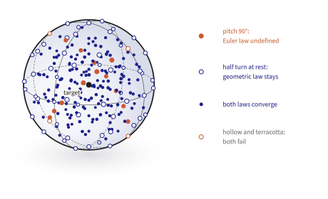
Figure 6.6. The 208 initial attitudes of the grid, drawn in the ball of rotations. From the 16 marked in terracotta, at 90° of pitch, the Euler-angle law is undefined. From the 29 hollow ones, exact half turns, the geometric law applies no torque. Each half turn appears twice, at two opposite points of the boundary. From the rest both converge.
Table 6.1. Feedback linearization of a 3D pendulum, two ways, simulated on the same plant. Torque and time are over the starts from which both laws converge.
From rest, 208 attitudes
Euler-angle law
Geometric law
Law undefined
16
0
Converges
192
179
Stays put
0
29
Peak torque, median
28.7 N·m
7.5 N·m
Peak torque, largest
88.7 N·m
11.3 N·m
Time to 5°, median
0.52 s
0.68 s
Time to 5°, longest
0.59 s
0.97 s
The Euler law cannot start from 16 attitudes, where E has no inverse. Near them it is worse than undefined. With a body rate of (1,−1,1) rad/s at 89.9° of pitch it asks for 69 N·m where the geometric law asks for 9.4. At 89.99° it asks for 830, and the geometric law still for 9.4. Everywhere else it converges, and quickly, but at nearly four times the peak torque and 4.3 times the effort ∫∥τ∥2dt of the geometric law.
The geometric law fails from 29 attitudes, all of them exact half turns at rest. That is the measure-zero set of Theorem 6.2, and a grid of round numbers lands on it 29 times. Give every start the body rate (1,−1,1) rad/s and 205 converge. The three that do not are half turns about an axis perpendicular to that rate: the motion slides them along the rim to another half turn. Add 0.001 rad/s along the axis and they leave too. “Measure zero” is a statement about volume. It is not a promise that your test matrix avoids it.
And part of the geometric law’s gentleness is not geometry at all. ∥eR∥ never exceeds 1, while ∥Θ∥ reaches 4.71 on this grid. Far from the target the geometric loop simply pushes less, and pays for it in time.
6.7 More factors: legs
A biped is a torso and two legs, each with an attitude. Siravuru (2019, ch. 5) models the Reaction Mass Biped on a product of three copies of SO(3) and a few lengths (Example 4.3 is its stance leg), and tracks walking and turning gaits with exactly the template of this chapter. Each body gets its own ΨR, eR and eΩ (Table 3.2). The torques cancel the couplings between bodies and impose a PD law on each factor. The Lyapunov function is the sum of the three copies of (6.4), and its derivative is the sum of three copies of (6.5). The stated result is almost-global asymptotic tracking, proved by the invariance argument of Theorem 6.2 with a weighted error function on each factor. No exponential rate is claimed. The same thesis models Cassie on a product of rotation groups to plan and track turns in place.
Should a walking robot care about convergence from 170°? The thesis itself says: not much. Large-angle recoveries are rare in walking. A step lasts a fraction of a second, the joint torques are bounded, and the next impact resets the velocities.
A number makes the point. Take a swing leg with J=diag(0.9,1.1,0.4) kg·m², kR=60 and kΩ=12, and a step of 0.35 s. A 10° error shrinks to 1.4° before touchdown. A 60° error still has 11° left. A 150° error has 100° left, and the robot has fallen. What legs gain from the geometric law is what Table 6.1 shows in its torque rows and what Thought experiment 6.1 explains: no singular attitude anywhere along a turn, error dynamics that do not depend on where in the gait the robot is, and a Lyapunov function to build on.
6.8 What you are choosing
The error vector. Everything slow in this chapter traces back to ∥eR∥=sinθ (the pitfall). Replace eR by the logarithm error log(Rd⊤R)∨ of Section 3.3 and keep the gains. Near the target nothing changes. From 150° our vehicle settles in 0.88 s where the trace error needs 1.25 s, and near the rim the time no longer grows (Figure 6.3). Mueller (2018) compares four such laws that agree to first order, and adds tilt priority for multicopters, for which (6.15) is the argument: position cares about the tilt alone. The cost is at the cut locus. At 180° the logarithm law is discontinuous, its torque is at its largest (27.5 N·m at 179° for our gains, against a maximum of 8.8 for the trace error), and noise there can make it chatter. A hybrid switch with hysteresis repairs that (Mayhew, Sanfelice and Teel, 2011). Teng et al. (2022) build a quadratic Lyapunov function on the logarithm and show that it keeps its convergence rate out to large angles. None of these laws escapes Theorem 1.3. They move the bad set or make the law discontinuous on it.
Saturation. Both theorems assume the torque (6.2) is delivered. Example 6.2 asked for three times the hover thrust. With the PD part clipped at 1 N·m per axis, the recovery from 150° takes 1.27 s, hardly changed from 1.25 s. Clipped at 0.2 N·m it takes 2.99 s. No theorem here says it must converge. A controller that knows the bound in advance can plan around it (Example 13.2).
Gains.Theorem 6.1 holds for any positive kR and kΩ and tells you nothing about which to pick. The LQR of Section 7.5 does: at a hover its gain has exactly the form of (6.2), a multiple of eR and a per-axis multiple of eΩ (Example 7.3), and along a maneuver it varies with time. Use the linearization to choose gains and this chapter to know what happens far away (Section 7.7).
The model. Every cancellation here assumed that J, m and the forces are known. They are not. Section 8.2 shows what a wrong inertia or a gust does to the error dynamics (6.3), and Section 8.4 keeps the tracking error small in spite of them. Keeping the vehicle out of places it must not go is the subject of Section 8.6. When the reference itself must be chosen subject to constraints, the tool is the direct transcription of Section 13.6.
Exercises
Exercise 6.1. Derive (6.1) from eΩ=Ω−R⊤RdΩd. Then substitute (6.2) and obtain (6.3). Where exactly did the term Ω×R⊤RdΩd come from, and what would the closed loop be if you left it out of the torque?
Exercise 6.2. Show that no bound V˙0≤−γV0 with γ>0 can hold for (6.4). Then prove the three matrix inequalities of Theorem 6.1, and show that (6.8) is exactly the condition for W1 and W3 to be positive definite.
Exercise 6.3. In the notebook, plot the guaranteed rate γ against c for Ψmax=1. Then replace the cross term by ceR⋅eΩ, without J, and redo the bounds. Is the guarantee better or worse for our vehicle?
Exercise 6.4. Show that eR≈−(aa⊤)η near a half turn about a. Write the linearization of (6.3) there and prove that it has exactly one unstable eigenvalue, the positive root of 1=kRa⋅(λ2J+kΩλI)−1a. For which axis a does our vehicle leave the rim fastest?
Exercise 6.5. Derive (6.11) and the closed loop of (6.12). Prove Proposition 6.3. Then find a reference qd(t) and a start for which the term (q⋅ωd)q×eq is as large as it can be, and check in simulation whether convergence is slower.
Exercise 6.6. Reproduce the pitfall in the notebook. Find, to one decimal place, the smallest speed-up κ for which the loop without feedforward is stable on the circle. Then replace the zero feedforward by the Ωd of the reference motion, computed from xd(t) alone, and find κ again.
Exercise 6.7. Rerun the grid of Table 6.1 with the logarithm error in the geometric law. Which rows change? Then shift the whole grid by 1° in each angle and rerun both laws. Explain every entry that moved.
Exercise 6.8. For the load cascade (6.16), show that the across-cable part of the thrust vector produces ω˙=−kqeq−kωeω and that the along-cable part delivers (qq⊤)FL to the load. In the notebook, lower kq until the loop fails, and compare the three loop rates at that point.
Notes and sources
The attitude law (6.2), the Lyapunov function with a cross term, the construction (6.14) of the attitude reference and the cascade analysis are due to Lee, Leok and McClamroch (2010). Their bounds use a cross term without the inertia. Ours, (6.8) and (6.9), are derived for the form (6.6) and checked numerically. Error functions with four isolated critical points go back to Koditschek (1989), and Chaturvedi, Sanyal and McClamroch (2011) survey the almost-global stabilization of attitude built on them. Bullo and Lewis (2005) give the general theory of tracking with a compatible transport map. The sphere law and its Lyapunov function follow Wu (2017) and Sreenath, Lee and Kumar (2013), who also designed the load cascade. Kotaru (2022) describes its implementation and gain tuning on hardware. The singular-perturbation view of cascades with scaled attitude gains is from Wu (2017). The feedback-linearization reading, the grid comparison with Euler angles, the Reaction Mass Biped and the remarks on what large-angle guarantees are worth for legs are from Siravuru (2019, ch. 4 to 6). The comparison of attitude error vectors and the lingering near half a turn are from Mueller (2018), and the convergence of the logarithm error from Teng et al. (2022). The invariance principle, stable manifolds and Gronwall’s inequality are in Khalil (2002).
Remember that all models are wrong; the practical question is how wrong do they have to be to not be useful.
A tail-sitter drone takes off like a rocket, nose pointing at the sky, then tips over and flies like an airplane. You want a linear quadratic regulator for the nose-up hover. LQR needs a model x˙=Ax+Bu. So what is x?
Try yaw, pitch and roll. Nose-up is 90° of pitch, where the matrix E of (1.3) has no inverse. There is no A. Back the target off to 85° and A exists, with entries of size 1/cos85∘=11.5. At 89.5° they are 115.
Try the nine entries of R instead. Now x has twelve components, A and B exist at every attitude, and the design fails anyway. The controllability matrix has rank 6. Six of the twelve directions are changes that would make R stop being a rotation. No torque produces them, the Riccati solver gives up, and xd+δx is not an attitude.
Both attempts ask how the numbers that label an attitude change. The useful question is how the attitude itself changes. The answer is a vector with three components and no singularity anywhere. We will build linear models out of it, put LQR on top, and then find out where the result stops being true.
7.1 A small deviation of a direction
Start one dimension down. A pendulum rod, a cable or a thrust axis is a direction q∈S2, and it moves as q˙=ω×q with ω⋅q=0. Let qd(t) be a reference motion and q(t) a neighbor (Figure 7.1).
The difference q−qd is a poor state. It has three components for two degrees of freedom, and qd plus a small multiple of it is off the sphere. Definition 3.1 gave the right object. A nearby direction is the reference turned by a small rotation, q=exp(ϵξ∧)qd, and to first order
δq=ξ×qd,ξ⋅qd=0.(7.1)
The vector ξ is the axis and angle of that small rotation. Its part along qd would spin qd about itself and move nothing, so we set it to zero. What remains lies in the tangent plane at qd: two numbers, as there should be.
Figure 7.1. A free swing of a spherical pendulum (indigo) and a neighbor released 20° away (terracotta), both simulated. At each instant the neighbor is the reference turned about ξ. Both ξ and the displacement δq=ξ×qd lie in the tangent plane at qd(t), at right angles to each other.
The variation of the velocity is simpler to define and stranger to live with: δω=ω−ωd, to first order.
Thought experiment 7.1(Two tangent planes). Hold two pencils by their ends so that they point in different directions, and twirl each one sideways. Each angular velocity is perpendicular to its own pencil. So ωd lies in the plane perpendicular to qd, and ω lies in the plane perpendicular to q. Those are different planes.
Carry ω over to qd and compare (Figure 7.2). It sticks out of the plane there. The difference δω therefore has a component along qd, and that component is not free. It is fixed by how far apart the pencils are and how fast the reference is turning.
Figure 7.2. Why δω is constrained. The reference spins with ωd, tangent at qd. The neighbor spins with ω, tangent at q. Redrawn at qd (dashed), ω leaves the tangent plane, so δω=ω−ωd has a component along qd (teal).
To find that component, vary q⋅ω=0 with (7.1). The result is the part of (3.3) along q:
qd⋅δω=ξ⋅(ωd×qd).(7.2)
One more formula and the toolkit is complete. Vary the kinematics q˙=ω×q. The left side is dtd(ξ×qd), the right side is δω×qd+ωd×(ξ×qd), and the Jacobi identity collapses the difference to (ξ˙−δω−ωd×ξ)×qd=0. The bracket is therefore along qd, and keeping ξ⋅qd=0 for all time fixes its size:
ξ˙=ωd×ξ+(I−qdqd⊤)δω.(7.3)
This is the tangent part of (3.3), solved for ξ˙. The tangential part of δω moves ξ within the plane. The term ωd×ξ points along qd and keeps ξ in the plane as the plane turns.
We now have a candidate state, s=(ξ,δω), and two constraints on it. Does it produce a linear model?
7.2 The spherical pendulum, by hand
Put a mass m at the end of a massless rod of length l, pivoted at the origin, and push on the mass with a force F∈R3. The equations of motion are (4.5) with the moment lq×F of the force added:
q˙=ω×q,ml2ω˙=−mglq×e3+lq×F.(7.4)
Let (qd,ωd,Fd) be any solution. Divide the second equation by l and vary it. The product rule gives mlδω˙=δq×(Fd−mge3)+qd×δF. Substitute δq=ξ×qd and use (ξ×q)×y=y∧q∧ξ for any vector y. Together with (7.3) this is a linear time-varying system.
Proposition 7.1(Linearized spherical pendulum). Along any solution of (7.4), dtd[ξδω]=A(t)[ωd∧ml1(Fd−mge3)∧qd∧I−qdqd⊤0][ξδω]+B(t)[0ml1qd∧]δF,(7.5) with the state confined to C(t)s=0,C=[qd⊤(qd×ωd)⊤0qd⊤].(7.6)
No angle appears. A and B are polynomials in the reference, defined at every point of the sphere, including straight up and straight down where spherical coordinates fail.
Remark. Wu and Sreenath (2015) and the symbolic library of Chapter 5 print the upper-left block as qdqd⊤ωd∧. On the constraint set the two agree, because ωd×ξ is along qd when both vectors are tangent. Off it they differ. Blocks that multiply ξ or δω are unique only as maps on the constraint set, so compare two derivations there and nowhere else.
Example 7.1(Checking the linearization). Take m=0.5 kg, l=0.8 m and a reference released 140° from the hanging position and pushed by a time-varying force. Perturb the initial state and the force by ±ϵ and simulate the nonlinear pendulum. The centered difference of the two neighbors, read through (7.1), is a finite-difference s(t). Integrate (7.5) from the same start. With ϵ=10−4 the two differ by 3.6×10−8 over 1.5 s, and by a hundred times more with ϵ=10−3, as a second-order error should. The symbolic derivation matches the lower blocks of A and B entry by entry.
So far s has been an infinitesimal. For control we need to know what it says about a real error.
Near the reference the linear state is the geometric error of Definition 1.5. Put q=exp(ξ∧)qd into eq=qd×q and expand: eq=ξ+O(∥ξ∥3). So integrating (7.5) predicts eq(t).
Figure 7.3 tests the prediction on a free swing. Release a neighbor 1° away and after 1.2 s the linear model is off by 1.6% of the error. At 10° it is off by 16%, at 30° by 48%. The mismatch grows in proportion to the initial angle. That is what “first order” means, and it is the only promise a linearization makes.
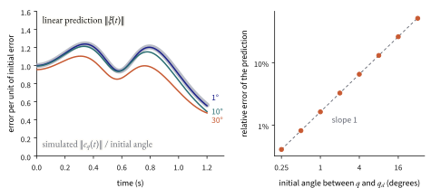
Figure 7.3. What the linear state predicts. Left: the error ∥eq(t)∥ between two simulated swings, divided by the initial angle, against the linear prediction from (7.5). Right: the relative error of the prediction at 1.2 s grows in proportion to the initial angle.
The experiment also has a trap in it. The neighbor’s ω must be perpendicular to the neighbor’s q, so its initial δω has to satisfy (7.2). Start the linear model from (ξ,0) instead and the prediction is wrong by 3.5% however small the perturbation. The constraints are part of the model.
7.3 A state that is not free
The state s has six components, and the pendulum has four degrees of freedom in (q,ω). The two constraints of (7.6) remove the excess. They hold at the start by construction. Do they keep holding?
They do, for every input. A direct computation with (7.5) gives CB=0 and CA+C˙=0, so
dtd(C(t)s(t))=0.(7.7)
A solution that starts in the constraint subspacekerC(t0) stays in kerC(t). That is reassuring. It is also a warning.
Thought experiment 7.2(The broom that cannot be balanced). Stand a broom on its bristles and steady the top with a fingertip. Everyone knows this can be done: a sideways push at the top controls the lean. Now ask the textbook. Linearize about upright, qd=e3 and Fd=0, form [BAB⋯A5B] and compute its rank. You get 4. The state has 6 components. The rank test says the broom is uncontrollable.
The test is not wrong. It was asked the wrong question. By (7.7) no input can change Cs, so two directions of R6 are unreachable. But those two directions are not states of a pendulum. One is a rotation vector along the rod. The other is an angular velocity along the rod. A broom cannot be in them, so there is nothing to control.
Controllability has to be judged where the state lives.
Definition 7.2(Controllability on the constraint subspace). The system (7.5) with (7.6) is controllable on the constraint subspace if every state in kerC(t0) can be steered to every state in kerC(t1). If the columns of Z are an orthonormal basis of a constant kerC, this is ordinary controllability of the reduced pair (Z⊤AZ,Z⊤B). Along a moving reference a sufficient test is rank[Γ0Γ1⋯]=dimkerC(t) for all t,Γ0=B,Γk+1=Γ˙k−AΓk.(7.8)
For the pendulum, (7.8) can be done on paper. Γ0 has the block qd∧ in its lower half, and Γ1=B˙−AB has −qd∧ in its upper half. Each has rank 2, in different rows, so the rank is 4 at every point of every reference. The linearized pendulum is controllable along all of its trajectories, a result due to Wu and Sreenath. Mind the minus sign in Γk+1. With a plus the test can pass on a system that is not controllable (Exercise 7.2).
Example 7.2(LQR for the upright pendulum). At qd=e3 the tangent plane is spanned by e1,e2, so Z selects the first two components of ξ and of δω. The reduced system is two copies of an inverted pendulum, Z⊤AZ=[0lgI2I20],lg=12.26s−2, with rank 4 of 4. Weight the reduced state with Q=diag(10,10,1,1) and the force with 0.1I, and solve the algebraic Riccati equation. Written back in three dimensions with the error of Definition 1.5, the control is F=kpe3×eq+kde3×ω,kp=16.04N,kd=4.78N⋅s, with closed-loop poles at −3.17 and −8.77s−1, each double. Released 30° from upright, the nonlinear pendulum is back within 1° in 1.26 s.
Pitfall(Do not solve a Riccati equation on the unreduced state). The six-state pair (A,B) of the upright pendulum has two uncontrollable modes at zero. No stabilizing solution of the algebraic Riccati equation exists, and a standard solver raises an error. Reduce to kerC first. The nine-entry attitude model of the opening failed for the same reason, with six such modes instead of two.
The sphere charges two constraints for a singularity-free model. The rotation group charges none.
7.4 The rigid body
Take a rigid body with inertia J about a fixed pivot, center of mass at ρ in the body frame, and body torque τ. With ρ=0 this is the attitude of a multicopter. Its equations of motion are (4.12):
R˙=RΩ∧,JΩ˙+Ω×JΩ=mg(R⊤e3)×ρ+τ.(7.9)
A neighboring attitude is the reference turned by a small body-frame rotation, R=Rdexp(ϵη∧). From Definition 3.1 and (3.1),
δR=Rdη∧,δΩ=η˙+Ωd×η.(7.10)
Any η∈R3 is allowed and any δΩ∈R3 is allowed. The reason is that Ω is measured in the body’s own frame, so every angular velocity lives in the same R3. There is no second tangent plane to fall out of.
Move the gyroscopic term of (7.9) to the right, as JΩ×Ω, and vary term by term. The gyroscopic term gives (JΩd)∧δΩ−Ωd∧JδΩ. For gravity, δ(R⊤e3)=−η∧Rd⊤e3=(Rd⊤e3)∧η.
Proposition 7.3(Linearized rigid body). Along any solution of (7.9), dtd[ηδΩ]=[−Ωd∧−mgJ−1ρ∧(Rd⊤e3)∧IJ−1((JΩd)∧−Ωd∧J)][ηδΩ]+[0J−1]δτ,(7.11) with no constraint on the state. Since [B−AB] has rank 6, the system is controllable along every reference.
The finite-difference test of Example 7.1, run on a tumbling body with a full inertia matrix, agrees to 9×10−6 at ϵ=10−4 and converges at second order. The symbolic derivation agrees entry by entry.
Look at what is missing from (7.11). For ρ=0 the reference attitude Rd does not appear at all. Twist a book 5° about its spine while it lies flat, then again while you hold it upright: your wrist cannot tell the difference, and neither can A and B. One linear model, and so one LQR gain, serves every attitude you could hold. This is the left-invariance that Section 1.2 asked for.
Now the dictionary between the linear state and what a controller can compute. Insert R=Rdexp(ϵη∧) and Ω=Ωd+ϵδΩ into the errors of Definition 1.4.
Proposition 7.4(What the linear state means). To first order in the deviation, eR=η,eΩ=δΩ−Ωd×η=η˙.(7.12)
This is (3.14) with the small parameter absorbed into the variation. The first is no surprise. The second is. The velocity error eΩ is not δΩ. It is η˙. The two differ by Ωd×η, which is first order whenever the reference is turning. This is the transport map doing its job: eΩ compares the two angular velocities in one frame, and δΩ subtracts their components in two.
Table 7.1. The linearized states of this chapter and the measurable quantities that equal them to first order.
and apply δu=−K(t)s. At an equilibrium A and B are constant, P˙=0, and (7.13) becomes the algebraic Riccati equation. The optimal cost from s0 at time t0 is 21s0⊤P(t0)s0.
The new part is the last step. The plant state is (R,Ω), not s. The gain must be fed something computed from that state which equals s to first order. Table 7.1 says what.
Definition 7.5(Variation-based LQR). With K(t) from (7.13) and (7.11), and the errors of Definition 1.4, τ=τd(t)−K(t)[eReΩ+Ωd×eR].(7.14) For a direction held at an equilibrium qd, with K designed on kerC and the error of Definition 1.5, F=Fd−K(eq,ω).
Nothing in (7.14) is a difference of coordinates.11 Since δΩ is the plain difference Ω−Ωd of body-frame components, you may feed that instead. The form with eΩ shows how to convert a law written in the velocity errors used elsewhere in this book. The errors are built from Rd⊤R, so they pass the two-labs test of Thought experiment 1.2, and they are smooth at every attitude.
7.6 Nose up, and through a flip
Now the tail-sitter. Take J=diag(0.03,0.05,0.07) kg·m², ρ=0, Q=diag(100I,I) and Ru=20I.
Example 7.3(Holding any attitude). At rest, (7.11) is three decoupled double integrators and the Riccati equation solves in closed form: K=[kRIdiag(kΩ,i)],kR=100/20=2.24,kΩ,i=1/20+2JikR=(0.43,0.52,0.60). The same K holds the body level, nose-up or inverted. It has the form of the feedback part of the tracking law (6.2), with one gain per axis on the velocity error.
For comparison, design an LQR the usual way: linearize the same dynamics in yaw, pitch, roll and Ω about the target, use the same Q and Ru, and feed back wrapped angle differences. Start both loops 20° from the target about the axis (1,1,1).
Level, the two are hard to tell apart. Peak torque is 0.76 N·m for the geometric loop and 0.81 for the Euler loop.
At 85° of pitch the geometric loop does exactly what it did before, to the last digit. The Euler loop rolls the body almost all the way over (Figure 7.4). The attitude error climbs from 20° to 177.8° before it recovers. Peak torque is 14.2 N·m, 19 times higher, and the effort ∫∥τ∥2dt is 327 times higher. At 88° of pitch a 5° error is enough to set it off.
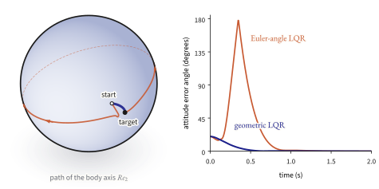
Figure 7.4. Holding a nose-up attitude at 85° of pitch from a 20° initial error, simulated. Left: the path traced by the body’s second axis. The geometric LQR moves it straight to the target. The Euler-angle LQR sends it round the sphere. Right: the attitude error angle of both loops.
The cause is the one from Example 1.1. Near the pole of the chart a small rotation is a large change of yaw and roll. The Euler regulator sees a large error, where the body has a small one, and spends torque on it.
Example 7.4(Tracking a flip). Now a reference that moves. The body makes one full turn in 1.5 s about an axis tilted 5° from its pitch axis. The rate peaks at 7.85 rad/s, 450° per second, and the pitch reaches ±85°. Evaluate (7.11) along it, integrate (7.13) backwards from the hover solution, and close the loop with (7.14).
Figure 7.5 shows the gain. In (η,δΩ) its norm stays between 3.83 and 4.09 for the whole flip, because the reference enters A(t) only through Ωd. Do the same design in Euler angles and A(t) has entries up to 873, and the gain swells to 18.0 each time the reference nears the pole.
Start the body 15° off. The geometric loop ends the flip 0.007° from the reference. Its peak torque is 0.86 N·m, against 0.80 for the feedforward alone.
Figure 7.5. Riccati gain along the flip of Example 7.4. Top: the pitch angle of the reference passes within 5° of the chart singularity twice. Bottom: the norm of the LQR gain, designed in the linear state (η,δΩ) and in Euler angles.
One more number, for honesty. The Euler-angle LQR also tracks this flip, ending 0.005° off. The reference is within 10° of the pole for less than 0.05 s per pass, too briefly for the swollen gain to do harm. A chart singularity hurts where you linger, as in Example 7.3, and it forbids a reference that passes through it. It does not ruin every maneuver that goes near.
Pitfall(Feed the gain the state it was designed for). LQR has a built-in test: for small errors the closed-loop cost must equal 21s0⊤P(t0)s0. Inject an attitude error mid-flip, at t0=0.45 s, where Ωd is 5.5 rad/s. With (7.14) the ratio of measured to predicted cost is 1.0000 for a 1° error, 1.006 for 15° and 1.064 for 45°. Replace the velocity entry by eΩ alone, as the feedback is sometimes written, and the ratio is 2.00: twice the optimal cost, however small the error. That loop is stable. It is not the regulator you designed. By (7.12), eΩ is η˙, and the gain was computed for δΩ. At a hover the two agree and the slip is invisible.
A ratio of 1.064 at 45° says the linear model is still good a long way out. How far does that go?
7.7 How local is local?
LQR theory guarantees a neighborhood and says nothing about its size. So measure it (Figure 7.6).
Take the upright pendulum of Example 7.2 first. The gain was computed at qd=e3, where a horizontal force is perpendicular to the rod. Tilt the rod by θ and the same force has a lever arm shorter by cosθ. The feedback torque is lkpsinθcosθ. Gravity’s is mglsinθ. Released from rest, the pendulum comes back only if
cosθ0>kpmg,θ0<72.2∘.
Simulation agrees to the half degree. Here B depends on the state, the gain does not know it, and the region of attraction is a cone.
The attitude hold of Example 7.3 is the opposite case. Torque acts in the body frame, the lower block of B is J−1 everywhere, and in simulation the loop recovers from every initial error we tried, up to 179.99°. But look at the time it takes. The feedback uses eR, whose length is sinθ (the pitfall). It fades as the error approaches half a turn. At exactly 180° the regulator applies no torque at all, so the settling time grows without bound as the start approaches it.
Figure 7.6. Where the regulators stop working, from simulation. Left: time for the upright pendulum to settle from rest. With eq it falls beyond 72.2°. With the logarithm error it falls beyond 77.2°. Right: the attitude hold recovers from any error below 180°, slowly near half a turn with eR, quickly with the logarithm error.
Swap eR for the logarithm error log(Rd⊤R)∨ of Section 3.3, whose length is θ itself, and keep the same K. To first order nothing has changed: same linearization, same gain, same poles. Far from the reference the two loops differ. The logarithm error does not fade near half a turn, and it moves the pendulum’s boundary out to 77.2°. In exchange it is discontinuous at 180° of error. Those attitudes form the cut locus of the target, where the shortest rotation back is not unique.
Mueller (2018) makes this point for multicopters, and Example 3.3 measures it on one axis. He compares four attitude controllers that are identical to first order, and shows that they recover differently from large disturbances and that the eR form can linger near half a turn for an arbitrarily long time. Linearization cannot see any of this.
So be clear about what has been built. A variation-based LQR is valid at every reference, with no singular attitude, and optimal to first order around each one. It promises nothing far away. No almost-global claim follows, and by Theorem 1.3 no continuous law can make a global one. The large-error behavior above belongs to these two examples and to the choice of error, not to LQR.
7.8 The same linear system from the Lie algebra
There is a second road to (7.11). For a state X in a matrix Lie group with body velocity ζ, form the left-invariant error Eℓ=Xd−1X of Definition 3.7 and take its logarithm χ. On SO(3) that is χ=log(Rd⊤R)∨. Differentiate and keep first-order terms. The result is (3.13):
χ˙=−adζdχ+(ζ−ζd).(7.15)
On SO(3) the operator adΩ is Ω∧, and (7.15) is the first row of (7.11) with χ in place of η. The two are the same vector to first order. On SE(3) the operator is a 6×6 matrix built from the reference twist, and it couples position and attitude errors correctly.
This form matters beyond LQR. Given the reference, (7.15) is linear in the unknowns (χ,ζ), and so is the linearized momentum equation. Discretize over a horizon, add a quadratic cost in χ and linear bounds on the inputs, and the tracking problem is a quadratic program: convex, with fast reliable solvers. The same problem posed in R and Ω is not convex. Teng et al. (2022) show that the logarithm error keeps its convergence rate out to large angles: the right-hand panel of Figure 7.6 again. Jang, Teng and Ghaffari (2023) build the convex predictive controller on SE(3) for marine vehicles. Section 13.3 writes that quadratic program out and flies it against a torque bound, and Proposition 13.4 gives the model on SE(3).
Exercises
Exercise 7.1. Derive (7.2) and (7.3). Then show from (7.5) that CB=0 and CA+C˙=0, which proves (7.7). Does the proof use ωd⋅qd=0?
Exercise 7.2. For x˙=A(t)x+B(t)u with transition matrix Φ, show that ∂t∂(Φ(t0,t)B(t))=Φ(t0,t)(B˙−AB), and explain why this puts a minus sign in (7.8). Then take constant A and B(t)=eAtb. Show that the system is not controllable, that (7.8) says so, and that the test with Γ˙k+AΓk does not.
Exercise 7.3. For a moving reference on the sphere, the velocity error is the eω=ω−(I−qq⊤)ωd of (3.10). Show that to first order eω=(I−qdqd⊤)δω, and write δω in terms of eq and eω. What must replace (eq,ω) in Definition 7.5?
Exercise 7.4. In the notebook, repeat Example 7.3 for hold pitches from 0° to 89° and plot the peak torque of both loops. For a hold at 80°, find the smallest initial error that makes the Euler loop tumble. Does the answer depend on the axis of the error?
Exercise 7.5. Derive the bound cosθ0>mg/kp of Section 7.7. Then limit the force to ∥F∥≤Fmax and predict the new boundary. Check it in the notebook. What happens to the boundary as you raise the weight on ξ in Q?
Notes and sources
Variation-based linearization, the constrained state on S2 and the controllability results of Section 7.3 are due to Wu and Sreenath (2015). Wu (2017) extends them to quadrotors with cable-suspended loads. The variation formulas are those of Lee, Leok and McClamroch (2018), the error functions those of Bullo and Lewis (2005), and the velocity error of Exercise 7.3 that of Sreenath, Lee and Kumar (2013). The rank test (7.8) is that of Silverman and Meadows (1967). Anderson and Moore (1990) is the standard reference for the regulator. Siravuru (2019, ch. 4) compares Euler-angle and geometric controllers on a 3D pendulum. The Lie-algebraic route is from Teng et al. (2022) and Jang, Teng and Ghaffari (2023), and Teng et al. (2026) use Lie-group derivatives of the same kind inside a constrained trajectory optimizer.
B. D. O. Anderson and J. B. Moore, Optimal Control: Linear Quadratic Methods, Prentice Hall, 1990.
… we had better be quite sure that the purpose put into the machine is the purpose which we really desire and not merely a colorful imitation of it.
A quadrotor hovers under a geometric tracking controller. Its attitude error is zero to the last digit. Now clip a 0.5 kg camera to it, 8 cm off-center. The controller measures the attitude a thousand times a second and corrects whatever it sees. Where does the attitude error settle?
Most people say zero: that is what feedback is for. The answer is 11.3°, and it stays there for as long as you care to wait (Figure 8.1, left). Nothing is broken. The gains are fine and the code is correct. The controller was derived for a vehicle whose inertia is known and on which nothing pushes, and you have changed the vehicle.
Here is a second question for the same controller. Its reference passes through a wall. What does it do? It flies into the wall, accurately. Nowhere in a tracking law is there a symbol for the wall.
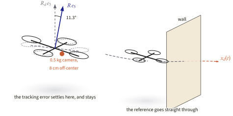
Figure 8.1. Two things a tracking controller does not have. Left: with a camera clipped on off-center, the simulated vehicle comes to rest with its thrust axis Re3 tilted 11.3° from the target Rde3. The dashed outline is the attitude it was asked to hold. Right: a reference that crosses a wall is tracked across the wall.
So two things are missing. One is a way to handle what the controller does not know. The other is a way to guarantee what must never happen. They are different kinds of requirement and they get different tools. Both tools are built from the error functions of Definition 3.4 and the transport maps of Definition 3.5, so neither needs a coordinate.
8.1 What the tracker assumes
The attitude controller of Section 6.1 is a PD law on SO(3) plus a feedforward. With eR and eΩ from (1.6), it is (6.2), which we restate with one change:
We write J0 for the inertia the controller believes, and τfb for the feedback part of the torque, the part that is left to design. The feedforward cancels the gyroscopic torque and supplies the acceleration of the reference. Substitute (8.1) into JΩ˙+Ω×JΩ=τ of (4.15). If J0=J, everything cancels except τfb, and the closed loop is (6.3) with (3.8):
J0e˙Ω=−kReR−kΩeΩ,e˙R=CReΩ.
This is a spring and a damper on the manifold. Theorem 6.1 says what it does. From a start in the sublevel set V0(0)<2kR of (6.4), which is less than half a turn from the reference and not too fast, a Lyapunov function with a cross term decreases and the errors go to zero exponentially. In this chapter the cross term is taken without the inertia:
V=21eΩ⋅J0eΩ+kRΨR+ceR⋅eΩ,(8.2)
with a small constant c>0. This is the form of Lee, Leok and McClamroch (2010), and the adaptation law of Section 8.4 is built on it. It differs from (6.6) by the factor J in the last term. The matrices W1, W2, W3 of (6.9) keep their roles and change their entries (Proposition 8.1).
Our vehicle has J0=diag(6.97,6.21,10.3)×10−3 kg·m², kR=2 N·m and kΩ=0.25 N·m·s. We call (8.1), with nothing added to it, the plain controller.
Every step of that argument used J0=J and a body on which only τ acts.
8.2 What you do not know
Let the true inertia be J=J0, and let an unknown torque Δe act in the body frame:
JΩ˙+Ω×JΩ=τ+Δe.
Apply the same control law (8.1), which still uses J0. The cancellation is no longer exact. Collect what is left over and the error dynamics become
where Δm=−Ω×(J−J0)Ω+(J−J0)(Ω×R⊤RdΩd−R⊤RdΩ˙d) is the part of the feedforward that used the wrong inertia.
Three different mistakes, a wrong inertia, a wrong feedforward and an outside torque, arrive as one vector Δ, the lumped uncertainty. It enters the equation at the same place as the input τfb. An uncertainty with that property is called matched: if you knew Δ you could cancel it with torque. The kinematic equation e˙R=CReΩ is untouched, because no model error can change how rotations compose. The price is that Δ is not a constant. It depends on the state and, through τfb, on the control itself.
Thought experiment 8.1(A door on a spring). A door is held shut by a spring. Lean on it with a steady hand. The door opens until the spring pushes back as hard as you do, and then it stays open by that much. It cannot return to shut, because a shut door means an unstretched spring and no force to oppose you.
The term −kReR is that spring. A steady torque is balanced only by a steady error. Now recall what is odd about this spring. Its force is kR∥eR∥=kRsinθ for an error angle θ (the pitfall). It grows up to a quarter turn of error and then fades. Lean harder than kR and no angle balances you. The door swings all the way round.
Example 8.1(The camera). The camera has mass 0.5 kg and sits at (0.08,0,−0.03) m in the body frame. In hover the thrust equals the total weight and no longer passes through the center of mass, which gives a constant body torque Δe=(0,0.392,0) N·m. The camera also raises the three principal inertias by 6%, 59% and 31%.
The simulation settles at 11.31°, about the axis of Δe. The inertia error plays no part at rest. A vehicle tilted 11.3° accelerates sideways at gtanθ=1.96 m/s², so the position loop inherits the problem.
Now make the torque 5.5 times larger, 2.16 N·m, which is more than kR. No equilibrium exists. The simulated body tumbles, and its error passes 179.8°.
A fixed offset can be removed by an integrator. But the torques that matter are not fixed. Thrust changes with every maneuver, gusts come and go, and Δ depends on the motion. Before reaching for a tool, ask what the plain controller already guarantees.
8.3 Robustness you get for free
The Lyapunov function that proved convergence also bounds the damage. As in Theorem 6.1, write z=(∥eR∥,∥eΩ∥), let λmin and λmax denote the smallest and largest eigenvalues of a symmetric matrix, and let Jmin and Jmax be those of the inertia, here J0.
Proposition 8.1(Ultimate bound for the plain controller). Consider J0e˙Ω=−kReR−kΩeΩ+Δ with e˙R=CReΩ, and the function V of (8.2). Choose c>0 so small that W1=21[kR−c−cJmin],W3=JmaxckR−2JminckΩ−2JminckΩkΩ−c are positive definite, and let W2=21[2kRccJmax]. Along any solution with ΨR≤1 and ∥Δ∥≤Δmax, z⊤W1z≤V≤z⊤W2z,V˙≤−z⊤W3z+1+c2/Jmin2Δmax∥z∥,(8.4) and therefore t→∞limsup∥z(t)∥≤λmin(W1)λmax(W2)λmin(W3)1+c2/Jmin2Δmax.
Proof. Differentiate V with Ψ˙R=eR⋅eΩ and (3.8). The terms ±kReR⋅eΩ cancel. Bound what remains with eΩ⋅CReΩ≤∥eΩ∥2 and the eigenvalues of J0. The term in Δ is (eΩ+cJ0−1eR)⋅Δ. The bounds on V use 21∥eR∥2≤ΨR≤∥eR∥2, valid while ΨR≤1. Then V˙<0 whenever ∥z∥ exceeds 1+c2/Jmin2Δmax/λmin(W3), so V ends up below its largest value on that ball. This is the proof of Theorem 6.1, for the cross term of (8.2) and the sublevel set Ψmax=1, with one more term.□
So a bounded uncertainty gives a bounded error. Nothing diverges, as long as the solution stays within a quarter turn of the reference. That is real robustness and it cost nothing.
Now put in numbers. For our vehicle the best choice of c gives a constant of 112 per N·m. For a gust of 0.030 N·m the bound is ∥z∥≤3.36. The simulated error for that gust is 0.033, a hundred times smaller. Since ∥eR∥ never exceeds 1, the bound says something only for torques below 0.009 N·m. The camera’s torque is 44 times that.
Read the proposition for what it is: a statement that small uncertainties do small harm, with a constant that no one should use for design. It does not make the error small. It does not remove the offset. And Example 8.1 showed that past kR there is nothing to bound. To do better the controller must learn Δ.
8.4 A co-pilot who learns
Thought experiment 8.2(A nervous co-pilot and a calm hand). You fly with a co-pilot who has a perfect simulator of the aircraft you believe you have. He flies the simulator alongside the real thing, with the same commands. Whenever the two disagree, he concludes that some unknown torque is acting, and updates his guess. He is quick, and nervous. His guess jumps with every bump and every flicker of the gyroscope.
If his guess went straight to the controls, the motors would shake. So his corrections pass through a calm hand that follows the guess smoothly and ignores its jitter. Here is the point of the arrangement. How fast he learns and how hard the motors are worked are now set by two different people. He can be as quick as you like. Only the calm hand touches the vehicle.
That is the architecture of L1 adaptive control (Hovakimyan and Cao, 2010), named for the L1 norm in which its guarantees are stated. Kotaru (2022, ch. 3) built it on SO(3). It has four parts.
The state predictor. The simulator is a copy of the believed dynamics, with its own attitude Rp∈SO(3) and body angular velocity Ωp:
R˙p=RpΩp∧,J0Ω˙p+Ωp×J0Ωp=τp.
It lives on the manifold too, and it is driven by a torque τp of the form (8.1), evaluated at (Rp,Ωp) with its own feedback part τfbp. So its tracking errors eRp, eΩp, which are (1.6) with (Rp,Ωp) in place of (R,Ω), obey J0e˙Ωp=τfbp exactly. The L1 literature and Kotaru call it the reference model. We keep “reference” for Rd.
The prediction error. How far is the predictor from the vehicle? They are two attitudes, so the question was answered in Section 1.5: use the error function, the error vector and the transport map again, with the predictor in the role of the actual attitude and the vehicle in the role of the desired one.
Subtracting matrices or body rates entry by entry would repeat the mistake of Figure 3.1. The uncertainty needs the same care. Δ is a torque in the body frame and its estimate Δ^ is a torque in the predictor’s frame, so the estimation error is Δ~=Δ^−Rp⊤RΔ.
Here Δf is the filtered estimate, defined below, and k~R,k~Ω>0 are gains on the prediction error. The predictor tracks the reference and feels the raw estimate. The vehicle is steered toward the predictor and feels only the filtered one. The matrix Ξ is the identity when Rp=R or when J0 is a multiple of I. It is there because J0 is expressed in two different frames. With these choices the prediction error obeys
J0e~˙Ω=−k~Re~R−k~Ωe~Ω+ΞΔ~.(8.7)
Compare with (8.3). It is the same spring and damper on SO(3), now between predictor and vehicle, pushed by the estimation error and by nothing else. The filter has dropped out.
The adaptation law. The estimate moves in the direction that (8.7) says will shrink the prediction error:
Δ^˙=kΔProj(Δ^,y),y=−Ξ⊤(e~Ω+cJ0−1e~R),(8.8)
with adaptation gainkΔ>0 and the constant c of (8.2). Without Proj this is an integrator of the prediction error with a very large gain, and an integrator can wind up without limit when the motors saturate or a sensor drops out. The projection keeps the estimate inside a ball of radius Δmax:
Proj(Δ^,y)=⎩⎨⎧y−∥gradfΔ∥2gradfΔ(gradfΔ⋅y)fΔyif fΔ>0 and y⋅gradfΔ>0,otherwise,(8.9)
where fΔ(Δ^)=(1.1∥Δ^∥2−Δmax2)/(0.1Δmax2) is zero at radius 0.95Δmax and one at Δmax, and gradfΔ is its gradient, a multiple of Δ^.
Inside radius 0.95Δmax it does nothing. In the thin shell beyond, it scales down the outward part of y, to zero at the surface. It never makes the analysis worse: Δ~⋅(Proj(Δ^,y)−y)≤0 whenever the true uncertainty lies within 0.95Δmax. The ball is a statement of how much uncertainty you are prepared to cancel. Make it too small and the estimate is clipped: with Δmax=1 N·m against the 2.16 N·m torque of Example 8.1, the simulated body settles 35° off. In a sampled implementation, follow each step of (8.8) by pulling the estimate back onto the ball, because a finite step can overshoot it.
The filter. The calm hand is a first-order low-pass with cutoffkf:
Δ˙f=kf(Δ^−Δf).(8.10)
Theorem 8.2(Kotaru, 2022, Theorem 3.1). Let the vehicle and the predictor be driven by (8.6) with the adaptation law (8.8), and let the lumped uncertainty and its time derivative be bounded. If Ψ~(0)<2,∥e~Ω(0)∥2<Jmin2k~R(2−Ψ~(0)), then the prediction error (e~R,e~Ω) is exponentially input-to-state stable. The function V=21e~Ω⋅J0e~Ω+k~RΨ~+ce~R⋅e~Ω+2kΔ1∥Δ~∥2, which is (8.2) for the prediction error plus a term for the estimate, satisfies V˙+γV≤γV∞ for a rate γ>0 and a level V∞>0, and V∞ is proportional to 1/kΔ.
The proof, in Appendix A.1 of the thesis, repeats Proposition 8.1 for the prediction error, with the projection property removing the terms in Δ~.11 The condition on e~Ω(0) is quoted as the thesis states it. The fence of Section 6.2 asks for slightly more: the kinetic term itself below the rim, 21e~Ω⋅J0e~Ω<k~R(2−Ψ~). Start the predictor at the vehicle’s state and the initial conditions hold trivially.
Be exact about what this says. The predictor and the vehicle come together exponentially, to within a distance that shrinks like 1/kΔ. The theorem is about the prediction error. It does not bound the tracking error eR of the vehicle, and the filter does not appear in it. The tracking error has a second ingredient. By (8.6) the predictor follows the reference while being pushed by ΞΔ^−Δf, the part of the estimate that the filter did not pass. A slow filter leaves more of it.
So the two knobs do different jobs. The adaptation gain kΔ decides how closely the vehicle follows the predictor. The cutoff kf decides how well the predictor follows the reference, and it alone decides what reaches the motors, because Δ^ enters the torque only through Δf. That separation is the central idea of L1 adaptive control. A classical adaptive law has one knob for both, and turning it up to learn faster feeds high-frequency torque to the vehicle.
8.5 Does it work?
Example 8.2(The camera again, then gusts). Take kΔ=4000, kf=20 rad/s, Δmax=3 N·m, k~R=kR and k~Ω=kΩ, with the controller running at 1 kHz.
Hover. With the camera of Example 8.1, the error peaks at 2.8°, is below 0.1° after 0.49 s, and goes to zero. The filtered estimate converges to the true Δ. With the 2.16 N·m torque that tumbled the plain controller, the error peaks at 15.6° and returns to zero.
A moving reference. Let Rd(t) cone at up to 0.9 rad/s. With the camera, the plain controller’s error is 11.3° RMS and the adaptive one’s is 0.008°. Add a gust torque of up to 0.38 N·m with components between 1 and 7 rad/s, as in the validation of Kotaru (2022). The plain controller wanders between 9.9° and 17°. The adaptive one stays below 1.13°, at 0.59° RMS (Figure 8.2, left). It no longer converges to zero, and it should not: a gust at 7 rad/s is not far below the cutoff, so the filter passes only part of it.
The theorem’s quantity. The prediction error stays below Ψ~=10−8 throughout. Its rate ∥e~Ω∥ peaks at 3.1×10−3, 7.8×10−4, 2.0×10−4 and 4.9×10−5 rad/s for kΔ=250, 1000, 4000 and 16000. Each factor of four in kΔ divides it by four, as V∞∝1/kΔ predicts.
Figure 8.2. Left: attitude error with the camera and a gust torque, for the plain controller (8.1) and with adaptation. Right: one component of the lumped uncertainty Δ during the same flight with gyroscope noise. The raw estimate Δ^ is fast and violent. Only the filtered Δf reaches the motors.
The right panel of Figure 8.2 is the co-pilot at work. With gyroscope noise of 0.02 rad/s, the raw estimate swings through 2.1 N·m around a truth that moves by 0.23. The filtered estimate tracks the truth.
Now turn the cutoff (Figure 8.3, left). At kf=1 rad/s the hand is too calm: the error is 3.3° RMS, because the gusts are faster than the filter. At kf=300 rad/s the error is 0.06°, and the rate of change of the commanded torque has grown from 12 to 104 N·m/s. The noise is going to the motors. Add a motor lag of 20 ms. At kf=30 rad/s nothing changes. At kf=3000 rad/s the loop oscillates: the error is 1.8° RMS instead of 0.38°, and the torque swings to 3.3 N·m, held back only by the projection ball.
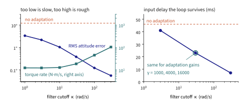
Figure 8.3. The filter cutoff trades tracking against robustness. Left: RMS attitude error and RMS rate of change of the commanded torque, with gyroscope noise. Right: the largest input delay for which the hover loop still settles. It falls as the cutoff rises, and does not move when the adaptation gain changes by a factor of 16.
The right panel is the claim of the co-pilot story, measured. Delay the torque command and find the largest delay the hover loop survives. The plain controller tolerates 46 ms. With adaptation the figure is 41 ms at kf=3 rad/s, 23 ms at 30 and 6 ms at 300. At kf=30 rad/s it is 23 ms for kΔ=1000, 4000 and 16000 alike. The delay margin belongs to the filter. The adaptation gain is free.
Pitfall(The cutoff is a robustness setting, so set it like one). It is tempting to raise kf until the tracking plot looks good. Every increase spends delay margin, and the bill arrives on the day the motors are cold or the estimator is late. Choose kf from the slowest actuator and the largest delay in the loop, and accept the tracking error that results. If that error is too large, the disturbance is too fast to cancel by feedback and needs a better model.
Adaptation makes the error small. It does not make any error impossible. During the first tenth of a second the camera still tipped the vehicle by 2.8°. If 2.8° toward a wall is too much, a different kind of statement is needed.
8.6 Never, as opposed to eventually
Stability says where the state ends up. Safety says where it must not be, at any time, on the way. A Lyapunov function measures progress toward a point. Safety needs a function that measures distance from a boundary, and a rule that keeps it positive.
Thought experiment 8.3(Driving at a wall in fog). You drive toward a wall you cannot see. A sensor reads the distance H. Adopt one rule: never close the gap faster than αH. At 10 m you may approach at 10α m/s, at 1 m at α m/s, at 1 mm hardly at all. Do you ever touch the wall?
You do not. The fastest approach the rule allows is H˙=−αH, whose solution is H(0)e−αt, positive forever. Any other permitted motion keeps H above that curve. And the rule only forbids. Far from the wall it allows almost anything, and it never tells you to stop.
Lemma 8.3(A barrier keeps its sign). If H˙(t)≥−αH(t) for all t≥0, with α>0, then H(t)≥H(0)e−αt. In particular H(0)≥0 implies H(t)≥0 for all t.
Proof.dtd(Heαt)=(H˙+αH)eαt≥0.□
A function H of the state whose nonnegative set {H≥0} is the safe set, and for which some input always achieves H˙≥−αH, is a barrier function (Ames, Xu, Grizzle and Tabuada, 2017). The safe set is then forward invariant: solutions that start in it stay in it.
Take the simplest system, a point in the plane with velocity input, x˙=u. A wall with unit normal n stands at distance d from the origin, so H(x)=d−n⋅x and H˙=−n⋅u. A tracker proposes ud. Among all velocities that satisfy the barrier condition, take the one nearest to ud:
u=argumin∥u−ud∥2subject ton⋅u≤αH.(8.11)
This is a quadratic program (QP), a quadratic cost under linear constraints, here with one constraint. Used this way, after a tracker, it is a safety filter. Its solution is the projection onto a half-plane (Figure 8.4, left),
u=ud−max(0,n⋅ud−αH)n.
If the tracker’s wish is permitted, it passes unchanged. If not, only its component toward the wall is trimmed. The safety filter makes the smallest change to what the tracker wanted.
Example 8.3(A target behind the wall). The wall is at x1=1, the point starts at the origin, and the tracker is ud=−(x−xd) with the target xd=(2,1.5) behind the wall. At x=(0.9,0) the tracker asks for ud=(1.1,1.5) m/s. With α=5 s⁻¹ the allowed closing speed is αH=0.5 m/s, so the filter returns u=(0.5,1.5).
Unfiltered, the point goes straight to the target through the wall. With α=5 the filter is silent until x1=0.75 and then bends the path. With α=1 it acts from the start. With α=25 it waits until x1=0.96 (Figure 8.4, right). Every path ends at (1,1.5), the safe point nearest the target, and none touches the wall.
Figure 8.4. A point that must not cross a wall. Left: velocity space at x=(0.9,0) with α=5 s⁻¹. The barrier condition allows a half-plane of velocities, and the filter returns the allowed velocity nearest to the tracker’s ud. Right: the resulting paths for three values of α. A larger α waits longer and turns harder.
Two things made this easy. The space was flat, and the input appeared in H˙. A cable direction or an attitude is not flat, and a torque does not appear in the first derivative of anything that depends on the configuration alone.
8.7 Barriers on the sphere
A cable must stay clear of the propellers. A thrust axis must stay within a tilt limit. Each is a direction q∈S2 that must remain within an angle θmax of an axis qc∈S2. The safe set is a cone, and its barrier function needs no coordinates:
H(q)=q⋅qc−cosθmax.(8.12)
In the language of Definition 1.5 this is H=(1−cosθmax)−Ψq with qc as the second argument: a level set of the error function. Wu (2017) defines safe sets on any manifold this way, as Ψ≤ constant or Ψ≥ constant. The second kind keeps a direction out of a cone, and (13.12) uses it with the same qc and θmax.
The derivatives come from the kinematics q˙=ω×q alone:
H˙=ω⋅(q×qc),orH˙=(ω−ωc)⋅(q×qc)(8.13)
if the cone axis itself moves with angular velocity ωc. Only the relative angular velocity matters, as it should. No input has appeared. Differentiate again, for the pendulum of (7.4) with a force F on the bob and a fixed axis:
H¨=−∥ω∥2(q⋅qc)+(I−qq⊤)qc⋅mlF−mge3.(8.14)
The first term is the centripetal acceleration, which always pulls q off the axis it circles. The force enters through (I−qq⊤)qc, the direction in the tangent plane at q that points toward the axis. The input appears only in the second derivative: the barrier function has relative degree two (Section 6.6).
The remedy is to apply the fog rule twice. Define H1=H˙+α1H and ask that H1, in turn, obey the rule:
H˙1+α2H1=H¨+(α1+α2)H˙+α1α2H≥0.(8.15)
Proposition 8.4(Safety with relative degree two). If H≥0 and H1≥0 at t=0, and the input satisfies (8.15) for all t≥0, then H(t)≥0 for all t≥0.
Proof.Lemma 8.3 applied to H1 gives H1(t)≥0, which reads H˙≥−α1H. Apply the lemma again.□
The initial condition H1(0)≥0 is new and it has teeth. It says the state must not start inside the cone while moving outward too fast to stop. The safe set in the state space is smaller than the cone. Wu (2017, Prop. 6.4 and Lemma 6.1) proves this result with the same H1 and a reciprocal barrier 1/H1, which replaces the linear rate α2H1 by a cubic one. The linear form is the exponential barrier of Nguyen and Sreenath (2016). For a moving cone, (8.15) gains the terms 2q˙⋅q˙c+q⋅q¨c and nothing else changes.
Condition (8.15) is linear in F. So is the rate of a Lyapunov function. For tracking a reference qd(t) on the sphere take V=ml2(21∥eω∥2+kqΨq+ceq⋅eω). This is the function of Proposition 6.3, with the gains kq, kω of (6.12) and the errors of (3.10), scaled by ml2 so that it is an energy. Put both in one program, and split the force as F=Fff+Ffb, where Fff is the feedforward that would keep a perfect track:
This is the CBF-CLF-QP of Wu and Sreenath (2015). The two constraints are not treated alike. The barrier constraint is hard. The Lyapunov constraint carries a slack variablew that the program may raise at a cost kw.
Why relax tracking and not safety? Because the two can contradict each other, and you must decide in advance who wins. If the reference leaves the cone, “V decreases” and “H stays positive” cannot both hold. With two hard constraints the program has no solution at exactly the moment it is needed. With a slack on tracking there is always a solution: stay safe, and get as close as safety allows. Wu (2017, Prop. 6.5) proves that this controller keeps the state safe, provided the state starts in the safe set of Proposition 8.4, the program is feasible, and the states where a constraint loses its input form a set of measure zero. The proof promises nothing about tracking while the reference is unsafe.
Example 8.4(A reference that leaves the cone). The pendulum of Example 7.1 has m=0.5 kg and l=0.8 m. It hangs, and must stay within θmax=30∘ of qc=−e3. The reference qd(t) runs round a circle that reaches 48° from qc. It is outside the cone for 56% of each 7 s lap. Use α1=α2=6 s⁻¹, kV=4 s⁻¹ and kw=50.
The tracker alone follows the reference out to 48°, with H as low as −0.197. Under (8.16) the state tracks until the reference nears the boundary, then slides along the boundary for 40% of the lap, 18.5° behind the reference at worst, and rejoins it once it is back inside (Figure 8.5). The smallest value of H in the simulation is 3×10−7, and it is positive. The slack rises to 2.6 while the reference is outside and falls back when it returns. The force never exceeds 2.5 N.
With a cone whose axis sways by 12°, the same program holds H≥−4×10−6 at a sampling period of 2 ms. The small negative number is the sampling, which Section 8.9 takes up.
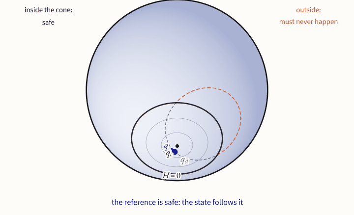
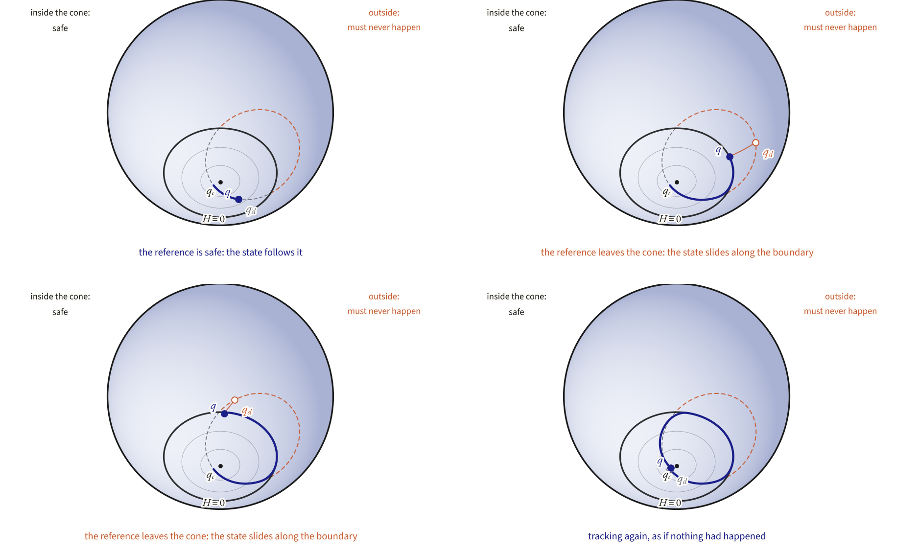
Figure 8.5. The pendulum direction q on the sphere, seen from below. The solid circle is the edge of the cone, H=0. The dashed circle is the reference. While the reference is outside the cone the state slides along the edge, and it rejoins the reference when the reference returns.
The same on SO(3). A tilt limit on a rigid body is a cone for its thrust axis: H(R)=e3⋅Re3−cosθmax. With R˙=RΩ∧,
and Ω˙=J−1(τ−Ω×JΩ) brings in the torque. Filter the torque of (8.1) as in (8.11), with (8.15) as the constraint. Ask the body for a target 60° from level with a limit of 35°. It stops at 35.000°, 25° short, and holds there with ΨR=0.094. This mirrors the 3D pendulum experiment of Wu (2017, sec. 6.5), whose constraint is a bound on ΨR: an unsafe target is approached as far as the safe set allows.
In both cases the input reached H¨. For a quadrotor that must avoid an obstacle, half of it does not.
8.8 A vehicle that cannot push sideways
Let a quadrotor avoid a ball of radius ro centered at xo. The obvious barrier is H=∥x−xo∥2−ro2. With (4.15),
H¨=2∥v∥2+2(x−xo)⋅(mfRe3−ge3).(8.18)
Two things are wrong. The torque is absent: it appears only two derivatives later, so three of the four inputs cannot help. And the thrust enters through p=(x−xo)⋅Re3, which can have either sign, while f cannot be negative. If the thrust axis points toward the obstacle, more thrust makes things worse, and the only thrust that helps is less. A vehicle below the obstacle’s center can do nothing but fall.
Wu (2017, ch. 7) repairs both defects with one idea. A vehicle whose thrust axis points at the obstacle is in more danger than one whose axis points away, at the same position. So let the barrier depend on the attitude. The augmented barrier function is
H(x,R)=∥x−xo∥2−βro2−σ(p),p=(x−xo)⋅Re3,(8.19)
with β>1 and σ a smooth decreasing function. When the thrust axis points at the obstacle, p<0, σ is large and the vehicle must keep farther away. Now H˙ contains p˙, which contains Ω, and so H˙1 contains Ω˙. In H˙1 the thrust is multiplied by (2p−σ′(p))/m and the torque by the vector −σ′(p)J−1(e3×R⊤(x−xo)). The torque is back, and it vanishes only when the thrust axis is parallel to x−xo.
Wu states three conditions on σ: it is strictly decreasing, it is bounded by ∣σ∣≤σ0<(β−1)ro2, and 2p−σ′(p)>0 for −βro<p<0. The second is what makes the construction sound: H≥0 then implies ∥x−xo∥2≥βro2−σ0>ro2 (Wu, Lemma 7.2). Under all three, Wu’s Lemma 7.4 states that the reciprocal of H1 is a barrier function except on a set of states of measure zero, and that safety is guaranteed if H1≥0 at the start and the input limits are “sufficiently large”. The exceptional states have the thrust axis pointing exactly at the obstacle from far away. The third condition is demanding: integrate it over the interval and it forces 2σ0>βro2, hence β>2 (Exercise 8.7).
Example 8.5(Under the obstacle’s center). A 1.13 kg quadrotor flies level at 2 m/s. Its reference passes 10 cm below the center of a ball of radius 0.6 m. Take β=1.8 and Wu’s sigmoid σ(p)=0.25tanh(−2p), and filter the tracker’s (f,τ) as in (8.11) with 0≤f≤30 N.
With the plain barrier (8.18) the program becomes infeasible 1.88 m from the center, where p=−0.10 m. No thrust between 0 and 30 N satisfies it, and the vehicle hits the ball. With the augmented barrier the program is feasible at every step. The vehicle tilts by up to 40°, passes over the ball no closer than 0.715 m from its center, and returns to the reference (Figure 8.6). The thrust stays between 9.0 and 14.3 N against 11.1 N in hover.
This σ meets Wu’s first two conditions and meets the third only for −0.21<p<0. The simulation is a demonstration and not an instance of his lemma.
Figure 8.6. A quadrotor and an obstacle, seen from the side. With the plain barrier only the thrust can respond, and below the center it pushes the wrong way. With the augmented barrier the torque tilts the thrust axis away early and the vehicle goes around. The dashed circle has radius βro.
When several quadrotors carry one payload on cables they must also keep clear of each other. Kotaru (2022, sec. 6.5) puts a filter of the kind (8.11) after the payload controller, on the commanded accelerations, with one barrier Hij=∥xi−xj∥2−rmin2 for each pair and the constraint (8.15). He notes that the added safety comes at the expense of stability and must be tuned with care. In our simulation, two vehicles that swap places pass 0.10 m apart without the filter and never closer than 1.15 m with rmin=0.8 m. The filter treats each vehicle as a point that can accelerate in any direction. Whether the attitude loop delivers that acceleration is the question of this section again.
8.9 Honest limits
The barrier trusts the model. Condition (8.15) is evaluated with a model of H¨. If the model is wrong, the guarantee is about a system you do not have. Give the pendulum of Example 8.4 a steady 1 N wind that the program does not know. The state now settles outside the cone, at H=−0.032, which is 3.4° too far. The size is predictable. At rest on the boundary, (8.15) holds with an error in H¨, so H≈−(error in H¨)/(α1α2)=−0.035. Tripling both gains divides the violation by nine, to −0.0034. Tightening the cone by 5° keeps the true cone, with H≥0.011.
Adaptive and safe. It is natural to feed the estimate Δf of Section 8.4 into the barrier’s model. That helps, and no theorem in this chapter covers it. Theorem 8.2 bounds the prediction error and not the estimate, and Δf lags the truth by design. What can be said is this: if the model of H¨ is wrong by at most some amount, the violation is at most that amount over α1α2. Size a margin from that bound and do not call the result a guarantee until the bound on the model error is itself established.
Input limits. The program (8.16) has a solution because nothing limits F. Arrive at 29° moving outward at 1.5 rad/s, and (8.15) demands 6.2 N from a bob that weighs 4.9 N. Cap the force at half of that and the program is infeasible: no admissible input keeps the promise. A barrier constructed without the actuator limits certifies a set that the actuators cannot hold. Wu (2017) calls a barrier function that accounts for input saturation an open problem. The predictive control of Definition 13.5, which carries the bounds on the input inside its optimization, is one answer to it.
Sampling.Lemma 8.3 is a statement about continuous time. A sampled controller holds its input between samples. In Example 8.4 the consequence is not a violation: H stays positive even at 100 ms. It is chatter. At a sampling period of 2 ms the largest jump in force between samples is 0.013 N. At 20 ms it is 17.8 N, seven times the peak force of the smooth solution, as the state bounces off the constraint once per sample.
Measure zero. The force enters (8.14) through (I−qq⊤)qc, which vanishes at q=±qc. The torque enters (8.19) through a vector that vanishes when the thrust axis points along x−xo. On those sets the barrier condition cannot be enforced. A reference aimed exactly at the center of the ball leaves the vehicle no reason to pass on one side or the other. Wu calls such barriers almost-global, and the word is the one from Theorem 1.3 for the same reason: on a compact manifold a smooth function must have critical points, and a controller built from its gradient has nothing to say there.
Pitfall(A safety filter is only as good as its model). “Provably safe” means: safe for the model, in continuous time, with unlimited inputs, from initial states with H≥0 and H1≥0, away from a set of measure zero. Each clause is a way to hit the wall with a proof in hand. Before flight, test the safety filter with the wrong mass, at the real sampling period, with the real thrust limits, starting fast and close.
Exercises
Exercise 8.1. Derive (8.3) from (8.1) and JΩ˙+Ω×JΩ=τ+Δe. Show that Δ=Δe when J=J0. For a body at rest at a fixed target, show that Δ depends on J only through the transient.
Exercise 8.2. Show that with a constant Δe and a fixed target, the equilibria of the plain controller are the attitudes with kReR=Δe. For ∥Δe∥<kR there are two error angles, θ and 180∘−θ. Which one is stable? Check in the notebook.
Exercise 8.3. Add an integral term −kI∫(eΩ+ceR)dt to (8.1). Show in simulation that it removes the offset of Example 8.1. Then apply the gust of Example 8.2 and compare with the adaptive controller at equal delay margin.
Exercise 8.4. Derive (8.7). Start from e~Ω=eΩp−Rp⊤ReΩ and use dtd(Rp⊤R)=−e~Ω∧Rp⊤R. Where is the last term of τfb in (8.6) used?
Exercise 8.5. Prove the projection property Δ~⋅(Proj(Δ^,y)−y)≤0 from the convexity of fΔ in (8.9). Then find a pair Δ^, Δ with ∥Δ∥>Δmax for which it fails.
Exercise 8.6. Derive (8.14) from q¨=−∥q˙∥2q+(I−qq⊤)(F−mge3)/(ml). Then derive (8.17). In both, find the configurations at which the input drops out of H¨, and explain why they do not matter for a cone with θmax<90∘.
Exercise 8.7. Show that Wu’s second and third conditions on σ together require β>2. Then show numerically that no sigmoid k1tanh(k2(p0−p)) satisfies both for β=4, and construct a σ that does.
Exercise 8.8. Repeat the wind experiment of Section 8.9 with the wind turned on only while the state is on the boundary. Design a margin from the bound (error in H¨)/(α1α2) and test it. What does the margin cost in tracking when there is no wind?
Notes and sources
The geometric tracking controller and its Lyapunov function are from Lee, Leok and McClamroch (2010). L1 adaptive control is due to Cao and Hovakimyan and is set out in Hovakimyan and Cao (2010). The geometric version on SO(3), with the predictor, the prediction errors (8.5), the control laws (8.6) and Theorem 8.2, is from Kotaru, Edmonson and Sreenath (2020) and Kotaru (2022, ch. 3), which also report flight experiments. The projection operator (8.9) is that of Lavretsky and Gibson (2011). Barrier functions in the form used here, and the quadratic program that combines them with a Lyapunov function, are from Ames, Xu, Grizzle and Tabuada (2017). Wu and Sreenath (2015) and Wu (2017, ch. 6) defined them on manifolds, with safe sets given by error functions, time-varying constraints, and the examples on S2 and SO(3) that Section 8.7 follows. The exponential form of (8.15) is from Nguyen and Sreenath (2016). The augmented barrier function for a quadrotor is from Wu and Sreenath (2016) and Wu (2017, ch. 7). The pairwise safety filter for vehicles that share a payload is from Kotaru (2022, sec. 6.5). Mueller (2018) treats recovery from large attitude errors, where the fading restoring torque of Thought experiment 8.1 matters most.
Model predictive control (MPC) is a simple loop. Solve an optimization problem over the next N steps. Apply the first input. Measure, and solve again. The window of N steps moves along with you: a receding horizon. The loop needs a solver, and every textbook solver expects its unknowns to be a vector in Rn: it adds a step to the current guess and tries again.
Now the state is an attitude. What do you hand the solver?
Hand it the nine entries of each rotation matrix. With N=25 that is 225 numbers and 150 nonlinear equations, six per step, only to say “this is a rotation”. The solver adds a step, and its iterates stop being rotations. Halfway between two rotation matrices 84° apart is a matrix with determinant 0.55.
Hand it yaw, pitch and roll. There are no constraints now. There is a singularity at 90° of pitch (Section 1.2), and the solver will find it.
Hand it a unit quaternion. That is one constraint per step and two quaternions for each attitude (Section 1.3), so every minimum appears twice.
Each choice describes the attitude with numbers and then moves the numbers. Figure 13.1 shows what goes wrong, and what to do instead. Do not move the description. Ask the optimizer for a small rotation, which is three free numbers with no constraint, and apply that rotation to the attitude.
Figure 13.1. The puzzle on a sphere. An optimizer at q wants to move toward the mean of four readings. Added to q as a vector, its step (terracotta) ends outside the sphere. Used as a rotation, the same step (indigo) ends on the sphere, 2.5° from the mean.
13.1 A step that stays on the sphere
Start with the smallest problem that has the difficulty in it. Four sensors report the direction of a cable, q1,…,q4∈S2, and they disagree. You want one direction q that is as close as possible to all of them:
Φ(q)=21i∑θi2,θi=the angle between q and qi.
Thought experiment 13.1(The average that is underground). Three friends stand in Quito, Nairobi and Singapore, and want to meet at their average position. Average the three position vectors from the center of the Earth. The result is a point 4300 km below the surface: the average of unit vectors is shorter than a unit vector. You could push that point up to the surface. But why should the place directly above it be the fairest meeting point, measured along the ground?
Now do it the way a traveler would. Stand anywhere. Each friend’s city lies in some compass direction at some distance. Average those three arrows on your map. Walk that way, that far. Look again. The arrows are shorter. Repeat. Every position you visit is on the surface, because walking cannot take you anywhere else.
The arrows on the map are tangent vectors, and the walk is the exponential map of Section 2.3. In the language of Definition 3.1, a move of q is a small rotation q↦exp(ξ∧)q with ξ⋅q=0. Expand the cost along it. The first-order coefficient is the gradient,
gradΦ(q)=i∑sinθiθiqi×q.
Each term is the error vector eq=qd×q of Definition 1.5 with qi as the target, stretched so that its length is the angle and not its sine. The cost is a sum of squared angles, and its gradient is a sum of errors.
For the four readings of Figure 13.1 the plain average has length 0.82. Start Newton’s method at the first reading instead. The distance to the minimizer goes 29°, 0.41°, 0.00003°. The figure starts 58° away to make the step visible: 58°, 2.5°, 0.0011°, then 2×10−10 degrees. Added to the starting direction as a vector, that first step of 60° would land at a distance 1.45 from the center.
The same construction works on the rotation group.
Definition 13.1(Gradient, Hessian and Newton step on SO(3)). For a cost Φ on SO(3), the gradientgradΦ(R)∈R3 and the HessianHessΦ(R)∈R3×3, symmetric, are the coefficients of Φ(Rexp(η∧))=Φ(R)+gradΦ⋅η+21η⊤HessΦη+O(∥η∥3).(13.1) The Newton step solves a 3×3 linear system, and the update is a product of rotations: HessΦη=−gradΦ,R←Rexp(η∧).(13.2)
The unknown η is the variation of Definition 3.1, used at finite size. It has three components and no constraint, and the update cannot leave the group.
Example 13.1(The mean of five attitudes). Five attitude estimates R1,…,R5 are scattered up to 91° from their mean. Average their entries and the result has determinant 0.08. It is not an attitude.
Minimize Φ(R)=21∑i∥χi∥2 instead, with the logarithm errors χi=log(Ri⊤R)∨ of Section 3.3. Write θi=∥χi∥ and ai=χi/θi. Then gradΦ=i∑χi,HessΦ=i∑[2θicot2θiI+(1−2θicot2θi)aiai⊤].(13.3) Start at R1, 72° from the answer. Newton’s method gives 1.6°, then 0.00014°, then 10−12 degrees (Figure 13.2). Each step at least squares the error. Replace the Newton step by the gradient step η=−51gradΦ and each iteration divides the error by about 7: steady, and far slower.
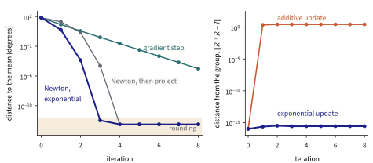
Figure 13.2. Three ways to use the same tangent-space information on the mean of Example 13.1. Left: distance to the minimizer. Newton’s method squares the error with either retraction. Gradient steps shrink it by a constant factor. Right: add the step to the matrix, R+Rη∧, and the iterate leaves the group at the first step and never returns. The exponential update stays on it to rounding error.
The gradient in (13.3) is again a sum of errors. That is the observation of Teng et al. (2022): design the cost as a quadratic in the Lie algebra, and its gradient is the tracking error itself.11 Exactly so on SO(3) with the plain dot product, as here. With a weight, 21χ⊤Pχ, or on SE(3), the gradient equals Pχ to first order only. At 60° of error and P=diag(1,2,3) the two differ by 13%.
The exponential is not the only way back to the group.
Definition 13.2(Retraction). A retraction is a rule that moves a point of a manifold along a tangent vector and lands on the manifold, and that agrees with the exponential map to first order. On SO(3), both Rexp(η∧) and “the rotation nearest to R+Rη∧” are retractions.
So adding the step to the entries and projecting is not wrong. It is a retraction, and in Figure 13.2 it converges at the same order. What made it work is that the step was computed in the tangent space. The method that fails is the one that treats nine entries as free and never projects. On a group the exponential is the natural choice: it is a matrix product, and second-order expansions along it are short.
An optimizer, then, should work in η. MPC needs more than a point. It needs a model that predicts, written in the same kind of variable.
13.2 The error is the variable
Take the rigid body of (7.9) with ρ=0, and a reference (Rd,Ωd,τd) that satisfies the same equations. Measure the body against the reference with the left-invariant error of Definition 3.7 and its logarithm:
Eℓ=Rd⊤R=exp(χ∧),δΩ=Ω−Ωd,δτ=τ−τd.
The pair s=(χ,δΩ) is the error state. It is the linear state of Section 7.1 with χ in place of η, and a controller can compute it from measurements.
How does χ move? (3.12) gives E˙ℓ. Turning that into χ˙ needs the derivative of the exponential,
which on SO(3) is dexpx=I−θ21−cosθx∧+θ3θ−sinθ(x∧)2 with θ=∥x∥. The result is exact at any size of error:
χ˙=dexpχ−1(Ω−exp(−χ∧)Ωd).(13.5)
Look for R or Rd on the right-hand side. Neither is there. Now keep first-order terms: dexpχ−1=I+21χ∧+… and exp(−χ∧)Ωd=Ωd−χ×Ωd+…. Vary the momentum equation as in Proposition 7.3.
Proposition 13.3(Error-state model of the rigid body). To first order in s=(χ,δΩ), dtd[χδΩ]=A(t)[−Ωd∧0IJ−1((JΩd)∧−Ωd∧J)][χδΩ]+B[0J−1]δτ.(13.6) The first row is (3.13). The whole system is (7.11) with ρ=0, reached by the road of Section 7.8.
Along a tumbling reference with a full torque history, perturbed nonlinear trajectories match (13.6) to 2.6×10−7 for a perturbation of 10−4, and the mismatch grows a hundredfold when the perturbation grows tenfold. The matrices agree with the symbolic linearization of Chapter 5 entry by entry.
Thought experiment 13.2(Turn the lab). Fly a flip facing north and record every matrix your controller uses. Now turn the whole lab to face east and fly the flip again: every attitude, actual and desired, is multiplied on the left by the same rotation. Which recorded numbers change?
In (13.6), none. The reference enters through Ωd, which the turn does not touch, and the error Rd⊤R is left-invariant. A model written in yaw, pitch and roll has matrices that depend on the heading, and on the pitch, and they blow up near 90° of pitch. Along the flip of Example 7.4 the largest entry of the Euler-angle A(t) is 478. The largest entry of (13.6) is 7.8.
This buys three things. The matrices can be tabulated before the flight, as functions of time alone. A reference that turns at a constant rate, or hovers, has one constant model. And nothing has to be linearized again when the measured attitude changes, because the measured attitude appears only in the initial error s0.
On SE(3). The same steps work for a pose X with body twist ζ=(V,Ω), where X˙=Xζ∧ as in (2.10). Write the Lie-algebra adjoint as a matrix, in the ordering of this book:
The second equation is the rigid body in the body frame: m(V˙+Ω×V) equals the force and JΩ˙+Ω×JΩ equals the torque. The wrench u stacks force and torque in the same order as the twist.
Proposition 13.4(Error-state model on SE(3)). With χ=log(Xd−1X)∨∈R6, δζ=ζ−ζd and δu=u−ud, to first order dtd[χδζ]=[−adζd0I6A22][χδζ]+[0M−1]δu,(13.8)A22=M−1[−mΩd∧0mVd∧(JΩd)∧−Ωd∧J]. The reference pose Xd does not appear.
The finite-difference test on a tumbling, translating body agrees to 5×10−8 and is second order. Jang, Teng and Ghaffari (2023) derive the same structure for a marine vehicle, whose M includes added mass and whose forces include drag, which they linearize about the reference twist. They order the twist angular part first, so their ad has the blocks of (13.7) swapped.
We have a linear model in the right variable. Now add the horizon.
13.3 A quadratic program
Sample with the sampling period h. Hold the torque over each step and solve (13.6) exactly over it, with A frozen at the middle of the step. That gives a discrete model,
sk+1=Aksk+Bkδτk,k=0,…,N−1,(13.9)
where Ak and Bk are the sampled counterparts of A and B. The actuators have limits, which give a bound ∣τi∣≤τmax on each axis. The bound is on the torque, not on the correction, so it moves with the feedforward τd.
Definition 13.5(Error-state MPC). At each sampling instant, compute s0=(log(Rd⊤R)∨,Ω−Ωd) from the measured state and solve, with the weights Q, Ru, Pf of Section 7.5, δτ0,…,δτN−1minsubject to21sN⊤PfsN+2hk=1∑N−1sk⊤Qsk+2hk=0∑N−1δτk⊤Ruδτksk+1=Aksk+Bkδτk,−τmax≤τd,k+δτk≤τmax.(13.10) Apply τ=τd,0+δτ0 for one period. Discard the rest and repeat.
Eliminate the states with (13.9). Stack the corrections into one vector U=(δτ0,…,δτN−1). Every sk is linear in s0 and U, so the cost is a quadratic form in the pair (s0,U). Call its blocks PUU and PUs, after the matrix P that gives the optimal cost in Section 7.5. The term without U does not matter, and (13.10) becomes
This is a quadratic program, a QP, like the safety filter (8.11) but with 3N unknowns. It is the program that Section 7.8 announced. PUU is positive definite because Ru is, so the problem is strictly convex: one minimum, no other stationary point, and solvers that find it reliably. PUU and PUs are built from Ak, Bk and the weights. By Thought experiment 13.2 they depend on time and not on the state.
The bounds are a box, so a small solver is enough. Hold the entries of U that sit on a bound and want to push through it. Take a Newton step in the others. Clip the result to the box, shorten the step if the cost went up, and repeat. This is the projected Newton method of Bertsekas (1982). On 40 test problems with a third of the bounds active, it agrees with SciPy’s bounded least-squares solver to 10−13, and the optimality conditions hold to 10−14.
What it has to do with LQR. Remove the bounds and the minimizer of (13.11) is U=−PUU−1PUss0, linear in the error. If Pf is the Riccati solution of the sampled regulator, its first block is exactly −Ks0 with the LQR gain K of (7.13) in sampled form, for any horizon, even N=1. That is the principle of optimality: Pf already accounts for everything after the horizon. With a cruder terminal weight, Pf=hQ, the first move differs from LQR by 76% in norm at N=5, by 1.5% at N=25 and by 5×10−8 at N=100. Error-state MPC is the regulator of Section 7.5 with a finite horizon and the ability to see a bound coming. Whether that ability matters is a question for an experiment.
13.4 A flip with too little torque
Take the flip of Example 7.4: one turn in 1.5 s about an axis 5° from the pitch axis, with J=diag(0.03,0.05,0.07) kg·m² and the weights Q=diag(100I,I), Ru=20I of Section 7.6. Its feedforward torque peaks at 0.80 N·m. Now suppose the motors deliver only τmax=0.6 N·m. The reference was planned without knowing that, which is how references are often planned.
Example 13.2(Three controllers, one bound). Sample at 50 Hz, h=0.02 s, with a horizon of N=25 steps, half a second. The QP has 75 unknowns. Start 20° from the reference and simulate the nonlinear body. Compare three controllers (Figure 13.4).
Saturated LQR. The regulator of Example 7.4 in sampled form, fed with (χ,δΩ), with its torque clipped to the bound afterwards.
Euler-angle MPC. The same QP with the model and the error written in yaw, pitch and roll.
All three respect the bound at every step (Table 13.1). The clipped regulator learns of the shortage when it happens. It falls 46° behind, and it is still on the bound a quarter of a second after the reference has stopped. The MPC sees the shortage half a second ahead. It pushes harder before the peak and brakes earlier, and its error stays under 6°.
Table 13.1. Tracking the flip of Example 7.4 with 0.6 N·m of torque where the reference asks for 0.80.
Worst error after 0.5 s
Error at 2.2 s
Steps on the bound
Saturated LQR
46.3°
1.75°
66%
Error-state MPC
5.9°
0.04°
52%
Euler-angle MPC
10.7°
0.19°
50%
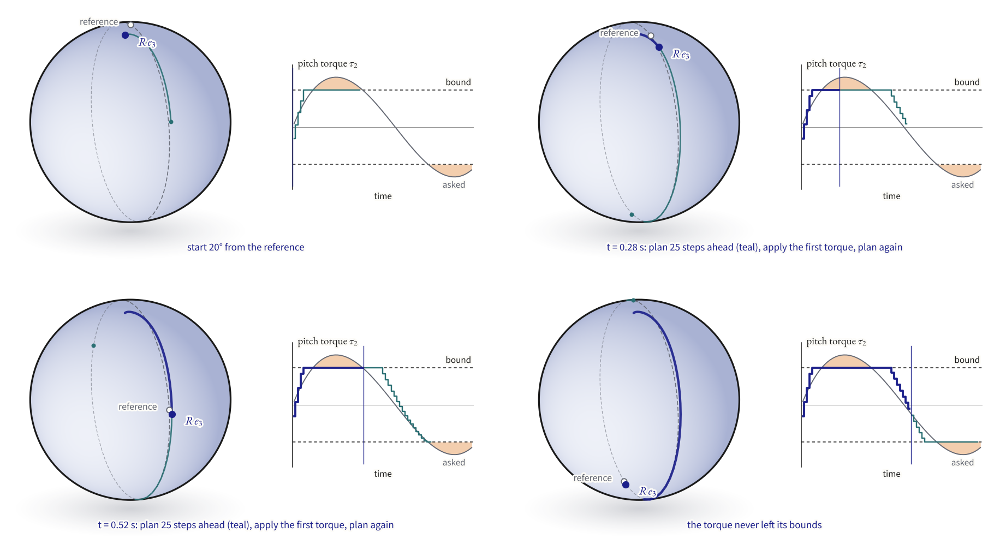
Figure 13.3. Receding horizon on the flip of Example 13.2. Left: the thrust axis Re3 (indigo) chases the reference (dashed), and the plan for the next 25 steps (teal) is redrawn at every sample. Right: the pitch torque. The reference asks for more than the bound allows (shaded). The plan stays inside and makes up the difference before and after.Figure 13.4. The flip of Example 13.2. Top: attitude error of the three controllers. Bottom: pitch torque of the saturated LQR and of the error-state MPC against the feedforward and the bound.
Two honest notes on the table.
The Euler-angle MPC does well. Its worst error is under twice that of the error-state MPC. The flip passes the chart singularity in a few hundredths of a second, too briefly for the model to do harm, as Section 7.6 found for LQR. Ask it to linger and the result changes. Hold the nose-up attitude of Example 7.3 at 85° of pitch, from a 20° error, with the same bound. The error-state MPC is within 1° after 0.54 s and never uses more than 0.41 N·m. The Euler-angle MPC tumbles to 177° of error, sits on the bound for 99% of the steps, and is still 76° off after 3 s. Its QP is convex and solved exactly. The model inside it is wrong.
The solve time is small because the problem is small. The projected Newton solver needs 1.3 iterations on average and at most 3, warm-started from the previous plan shifted by one step. In NumPy on one laptop core the median is 0.2 ms and the worst case stays below a few milliseconds, against a sampling period of 20 ms. Jang, Teng and Ghaffari (2023) report the same pattern at scale. With N=100 on a surface vessel in simulation, their QP took about 50 ms on average. Two nonlinear MPC baselines took 460 to 950 ms. They also report what the linearization costs: overshoot and slower convergence from large initial errors, and slightly larger tracking error than nonlinear MPC. Their controller constrains inputs only.
13.5 What is convex, and what is not
The QP (13.11) is convex. The problem you care about is not. Its states live on SO(3), which is not a convex set. Its dynamics are nonlinear equality constraints. Its natural cost, ∥log(Rd⊤R)∥2, has a crease at half a turn. The QP is a convex model of that problem, valid near the reference, and the reference had to come from somewhere.
How near is near? One part of the model is better than first order.
Give the body a pure attitude error, with δΩ=0 and the feedforward torque. Both bodies then have the same angular velocity forever, since the momentum equation does not contain R. Then (13.5) reduces to χ˙=−Ωd×χ exactly. The linear model propagates a 120° attitude error as accurately as a 10° one: the prediction half a second ahead is off by 0.09% in both cases, all of it from sampling.
The model breaks through velocity. Add a velocity error of 2s−1 times the angle and the same prediction is off by 1.5% at 2°, 7.4% at 10°, 22% at 30° and 41% at 60°. The neglected terms are the ones dropped from (13.5): the curvature of the group, through dexp−1, and the quadratic gyroscopic term.
Pitfall(The logarithm jumps at half a turn). At an error of 179° about some axis, χ is a vector of length 3.12 along that axis. At 181° it is a vector of length 3.12 along the opposite one. The QP is handed opposite initial errors and returns opposite torques. A body near the cut locus of Section 7.7, in noise, can be told to go one way and then the other. Error-state MPC inherits every large-error behavior of the logarithm error, and Theorem 1.3 says no continuous fix exists. Keep the reference close enough that this cannot happen, or add logic that commits to a direction.
So error-state MPC needs a good reference, one that respects the dynamics, avoids obstacles and stays within what the actuators can do, at least roughly. Producing one is a harder problem. It is not convex, and the solver itself has to work on the manifold.
13.6 From tracking to planning
Turn a satellite from one attitude to another in 2 s with as little torque as possible. A camera along the body axis e1 must never point within θmax=30∘ of the sun, which lies in the direction qc. This is the cone of (8.12) with the inequality reversed: there a direction had to stay inside, and here the camera axis Re1 must stay outside. The shortest turn sweeps the camera through that cone, 8.5° from its axis.
No reference exists yet. The unknowns are the trajectory itself: attitudes Rk, angular velocities Ωk and torques τk at N=20 steps of h=0.1 s. This is direct transcription: discretize first, then optimize over states and inputs together, with the dynamics as constraints.
with both ends fixed and at rest. The first constraint is the exponential step (2.12), written as “the mismatch is the identity” and brought to R3 by the logarithm. Because the step is a product of rotations, an exact solution of the constraint is a trajectory of rotations. No equation of the form R⊤R=I appears anywhere.
Three choices make this an optimization problem on a manifold.
The variables are group elements. Each Rk is stored as a rotation matrix. The problem has 9N−6=174 degrees of freedom: three per attitude, three per velocity, three per torque.
The steps are in the Lie algebra. The solver’s unknown at each iteration is (ηk,δΩk,δτk), and it updates Rk←Rkexp(ηk∧) as in (13.2). Vectors are updated by addition.
Derivatives are taken along those steps. Perturb the attitudes in the first constraint and collect first-order terms. With rk the current value of that constraint,
On a trajectory that satisfies the dynamics, rk=0 and this reads ηk+1=exp(−hΩk∧)ηk+hdexphΩkδΩk. Divide by h and let h→0: it is η˙=−Ω×η+δΩ, the first row of (13.6). The Jacobian of a transcription on a group is the error-state model, one step at a time.
The keep-out cone shows what second-order information on a group looks like. The sun direction seen from the body is R⊤qc. Expanding qc⋅Rexp(η∧)e1 as in (13.1) gives
The Hessian is not zero, although the constraint is linear in the entries of R. The curvature of the group has moved into it.
Equality constraints can be handled by Newton’s method on the optimality conditions. Inequalities need one more idea.
13.7 Walls made of logarithms
Minimize x subject to x≥0. The answer is x=0, on the boundary, and that is the trouble: at the boundary the problem stops being smooth. Which constraints are active at the solution? With 139 inequalities there are 2139 possible answers.
Thought experiment 13.3(A wall you can lean on). A ball rolls down a ramp toward a wall at x=0. Replace the hard wall with a spring that pushes back with force μ/x: weak far away, unbounded at the wall. The ball settles where the slope of the ramp, which is 1, balances the spring: x=μ. It never touches the wall. Now soften the spring. As μ→0 the resting point slides to the wall, smoothly, from the inside.
In formulas, replace the constraint by a logarithmic barrier: minimize x−μlnx, where μ>0 is the barrier parameter. The barrier function of Section 8.6 shares the picture of a wall that cannot be crossed, and nothing else: that one constrains a motion, and this one is a term in a cost. The minimizer is x(μ)=μ. The curve of minimizers as μ decreases is the central path, and following it to μ=0 is an interior-point method. The smooth problems on the way never ask which constraints are active.
The practical form is primal-dual. Call the spring force ν, so that ν=μ/x, and solve for the position and the force together: 1−ν=0 and xν=μ. Newton’s method on this pair is much better behaved than on 1−μ/x=0, and ν becomes the Lagrange multiplier in the limit.
For a general problem, collect the unknowns in a point x (attitudes and vectors), write the equalities as r(x)=0 and the inequalities as c(x)≤0, and add slack variables w>0 with c(x)+w=0. With multipliers νr for the equalities and νc>0 for the inequalities, the conditions for a point of the central path are
where Ar and Ac are the Jacobians of r and c along the steps, as in (13.13) and (13.14). At μ=0 these are the Karush-Kuhn-Tucker conditions, the KKT conditions, of the original problem. Newton’s method on (13.15), after eliminating the slack and inequality steps, solves
with Hess the Hessian of Φ+νr⋅r+νc⋅c along the steps, in the sense of (13.1).
This is the structure of LieIPM (Teng et al., 2026). Only two things differ from an interior-point method in Rn. The primal step δx is applied by a retraction, Rk←Rkexp(ηk∧). And the entries of Ar, Ac and the Hessian are the coefficients of expansions like (13.1). The multipliers and slacks are ordinary vectors and are updated as in any textbook. LieIPM discretizes the rigid body with a variational integrator and makes the rotation over one step a variable in its own right. Every constraint is then a product of group elements, and its first- and second-order expansions follow in closed form from the series for log(exp(x∧)exp(y∧)), with Lie brackets as the second-order terms. The chapter on variational integrators returns to that discretization.
Ordered by stage, the matrix of (13.16) is banded (Figure 13.6): each constraint couples one step to the next and nothing else. For (13.12) it is 294×294 with 3.4% of its entries nonzero and a half bandwidth of 17. The cost of a Newton step grows in proportion to the horizon.
Example 13.3(Around the cone). We implemented (13.15) and (13.16) for the problem (13.12), with τmax=0.15 N·m. To be precise about what the code is: a primal-dual interior-point method with slack variables; the exponential retraction for attitudes; first derivatives in closed form; the Hessian from symmetrized differences of those derivatives; a step length that keeps w and νc positive, then backtracking on the norm of the residual of (13.15); a shift added to the Hessian when the matrix has the wrong signs of eigenvalues; μ reduced when the residual falls below 10μ; dense linear algebra. It has no line-search filter, no restoration phase and no sparse factorization.
Start from the shortest turn, which violates the cone at 9 of its 19 interior steps. The solver converges in 20 iterations to a residual below 10−8 (Figure 13.5, Figure 13.6). Every attitude at every iteration is a rotation to 10−15. The camera axis dips under the cone and grazes it at one step. Nine torque bounds are active. The detour costs 3.4% more effort than the same turn with no cone. SciPy’s SLSQP, given the problem in a different form (torques only, the dynamics rolled out), returns the same cost to 10−7.
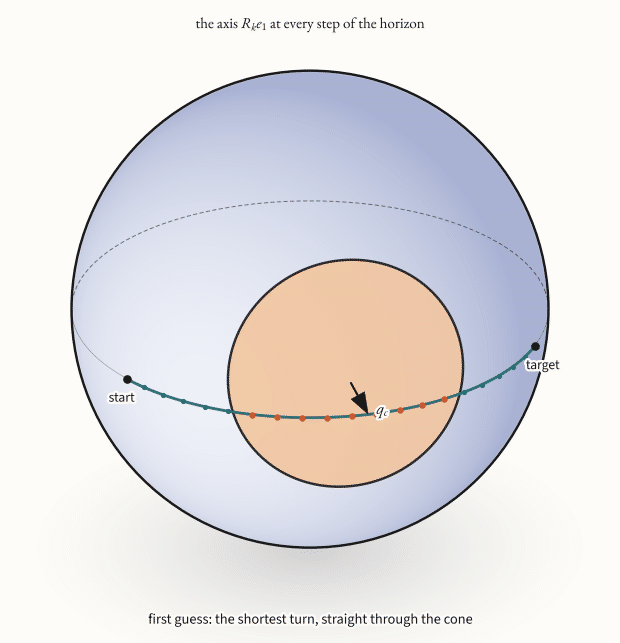
Figure 13.5. The interior-point method at work on Example 13.3. The first guess sweeps the camera axis Rke1 through the keep-out cone. Early iterates, with a large barrier parameter μ, stay well clear of it. As μ shrinks the path tightens until it grazes the cone.
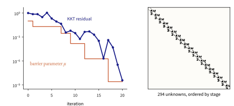
Figure 13.6. Left: the KKT residual of Example 13.3 and the barrier parameter at each iteration. Right: the nonzero entries of the matrix in (13.16), with unknowns ordered by stage.
Follow the central path slowly and the wall softens as Thought experiment 13.3 promised. At μ=10−2 the camera axis keeps 14° of margin from the cone. At 10−4 it keeps 4.7°, at 10−6 0.015°. At fixed μ the last Newton residuals are 10−3, 2×10−4, 2×10−6, 7×10−11: faster than linear, as Newton’s method should be.
What the full method achieves is reported by Teng et al. (2026). They plan for a quadrotor with motor-force limits, modeled as a full rigid body, over 21 knots. With variational-integrator dynamics and no added noise, LieIPM converged on 999 of 1000 random problems in 22 iterations on average. IPOPT and SNOPT, given quaternion formulations of the same problems, converged on 862 and 920, in 316 and 227 iterations on average, and took 10 to 20 times longer in wall-clock time. The comparison is not one-sided. With an explicit Euler integrator, which lets the quaternion drift off the unit sphere, the shooting solver Crocoddyl converged on all 1000 in about a millisecond, faster than LieIPM. On hardware, LieIPM ran inside a 100 Hz loop with an 8.5 ms time limit and flew a quadrotor through flips. The authors prove fast local convergence under standard conditions and state that they do not claim convergence from arbitrary initial guesses.
13.8 Limits
Local minima and initialization. Bulge the initial guess of Example 13.3 the other way and the same solver converges, just as cleanly, to a path over the cone. It costs 16% more. Both pass the second-order test for a minimum. The solver cannot tell you which one you have. A cone on a sphere has two sides, and no local method sees both. The answer depends on the initial guess.
Time. A QP with 75 unknowns is solved in a fraction of a millisecond. A nonlinear program is solved in “a few iterations, usually”. Real-time use needs a time limit and a plan for when it is hit, as in the hardware experiments above.
Warm starts. The QP solver starts each solve from the previous plan, shifted by a step, and usually finds it nearly optimal. An interior-point method gains less from a warm start: the old solution sits on the boundary, and the method wants to start inside.
Linearization. Error-state MPC is exactly as local as Section 7.7 says, plus the jump of the logarithm at half a turn. With no bounds and a Riccati terminal weight it is the LQR of Definition 7.5, fed with the error state.
Guarantees. Nothing here proves that a constraint will hold on the real system. The bound in Example 13.2 held because the QP enforces it on the input directly. A state constraint enforced on a linearized prediction can be violated by the plant. A safety filter, the program (8.11), takes the opposite position: it makes no plan, and changes whatever input it is given by the smallest amount that keeps one inequality true at the next instant. The two are complements. MPC looks ahead with an approximate model. A filter looks at the present with a certificate.
Exercises
Exercise 13.1. For the mean of directions in Section 13.1, show that the Hessian of 21θi2 along q↦exp(ξ∧)q has eigenvalue 1 for ξ along qi×q and θicotθi for ξ perpendicular to it in the tangent plane. What happens at θi=90∘, and beyond? Run Newton’s method in the notebook with one reading 150° from the others.
Exercise 13.2. Derive (13.3) from (13.4). You will need χ⊤dexpχ−1=χ⊤ and the fact that the Hessian of (13.1) is the symmetric part of the derivative of the gradient. Check in the notebook that the derivative of the gradient is itself not symmetric, and explain where the antisymmetric part comes from.
Exercise 13.3. Derive the block A22 in (13.8) by varying the second equation of (13.7). Then add linear drag, a force −c1V and a torque −c2Ω with positive constants c1,c2, and write the new A22. Does the reference pose appear?
Exercise 13.4. Prove that the first block of −PUU−1PUs in (13.11) equals the LQR gain when Pf solves the discrete Riccati equation. Then, in the notebook, set Pf=0 and find the shortest horizon for which the closed loop of Example 13.2 still tracks.
Exercise 13.5. In Example 13.2, lower τmax from 0.8 to 0.4 N·m in steps and record the worst error of the three controllers. At what bound does the saturated LQR match the MPC? At what bound does the MPC lose the reference, and what does the logarithm do when it does?
Exercise 13.6. Repeat Proposition 13.3 with the right-invariant error Er=RRd⊤ and world-frame angular velocities. Which quantities appear in the linear model now? Use Thought experiment 3.3 to predict the answer before you compute it.
Exercise 13.7. In the notebook, follow the central path of Example 13.3 from the guess that bulges over the cone. Plot cost against μ for both paths. Then move qc toward the equator until the two minima cost the same. What does the solver do from the shortest turn?
Notes and sources
Optimization on manifolds with retractions, and the convergence theory of Newton’s method in that setting, are set out by Absil, Mahony and Sepulchre (2008) and Boumal (2023). The quadratic cost in the Lie algebra, its gradient and the linearized error dynamics are from Teng et al. (2022), and the convex error-state MPC on SE(3) is from Jang, Teng and Ghaffari (2023). Kotaru (2022, ch. 6) runs an MPC of the same kind on the variation-based linearization of a quadrotor with a cable-suspended load, with a Riccati terminal weight. The exact linearity of the logarithm of an invariant error, met in Section 13.5 for a pure attitude error, is due to Barrau and Bonnabel (2017). The projected Newton method is that of Bertsekas (1982). Interior-point methods are treated by Nocedal and Wright (2006), and the line-search implementation that LieIPM follows is that of Wächter and Biegler (2006). LieIPM, its closed-form derivatives and its benchmarks are from Teng et al. (2026). Kotaru (2022, ch. 5) transcribes a quadrotor with a cable-suspended load by writing each attitude as a fixed rotation times exp(η∧) and each direction as exp(ξ∧) applied to a fixed direction, with η and ξ as Euclidean decision variables, and handles the taut and slack cable with a complementarity constraint, which is beyond this chapter. Wu (2017) solves a QP at every instant to enforce safety constraints, the approach of Section 8.6. Siravuru (2019, ch. 5) derives a variational integrator for the Reaction Mass Biped.
By relieving the brain of all unnecessary work, a good notation sets it free to concentrate on more advanced problems …
This appendix is the reference for the whole book. Each symbol means one thing, each term has one name, and every chapter, figure, notebook and skill follows the tables below. Read Section A.1 once. Use Section A.2 to look up a symbol and Section A.3 to look up a word. The last column of each table points to the place where the entry is introduced.
A subscript makes a new symbol. E, Eξ and Eℓ are three different things, and so are f and fΔ, or P, Pf and PUU. The subscripts min and max always mark a bound or an extreme value: τmax, θmax, Δmax, Ψmax, ωmax, Jmin. A hat marks an estimate (R^, Δ^) and a tilde a prediction or estimation error (e~R, Δ~).
A few letters are local and are not listed in the tables: x,y,z for arbitrary vectors in an identity, A for an arbitrary matrix, i,j,k for indices, n and N for counts. So are Π for a projection, β and σ in two exercises of Chapter 3, Φ for a transition matrix in one exercise of Chapter 7, and ci for the entries of a matrix. They are named where they are used and mean nothing beyond that sentence. Section A.2.11 lists the letters that keep a second, local meaning inside one section because the alphabet ran out.
A.1 Conventions
Frames. The world frame does not move, with e3 pointing up. The body frame is attached to a rigid body. A rotation matrix R maps body-frame components to world-frame components.
Gravity. Gravity acts along −e3. A mass m at position x has potential energy mge3⋅x and weight −mge3.
Body and world velocities. The angular velocity of a rigid body is Ω, expressed in the body frame, with R˙=RΩ∧. Its world-frame components are ω=RΩ. The angular velocity of a direction q∈S2 is ω, in the world frame, with q˙=ω×q and ω⋅q=0. Positions x and velocities v=x˙ are in the world frame.
Hat and vee. The hat map is written after its argument: x∧y=x×y and (x∧)∨=x. On a twist, ζ∧ is the 4×4 matrix of (2.10).
Twists. A twist is ordered linear part first, ζ=(V,Ω), both parts in the body frame.
Cable direction. For a cable-suspended load, q points from the quadrotor to the load, so xQ=xL−lq. The cable tension T is positive when the cable pulls.
Desired quantities. The subscript d marks the configuration or motion that a controller aims for: Rd, qd, xd, Ωd, ωd, and also the force Fd, the yaw ψd and the input ud or τd that go with it. A fixed one is called the target. A moving one is called the reference. No other mark (“ref”, “des”, a star) is used.
Order of arguments. The actual configuration comes first and the desired one second, in formulas and in code: ΨR is built from Rd⊤R, and a function is called as e_R(R, Rd). An error is the actual quantity minus the desired one: ex=x−xd, eF=fRe3−Fd. For a prediction error the state predictor is the actual one and the vehicle the desired one, as in (8.5).
The tracking law. The attitude law is always written in the form of (6.2): the feedback part −kReR−kΩeΩ, then the feedforward Ω×JΩ−J(Ω×R⊤RdΩd−R⊤RdΩ˙d), with the cross product written with ×. On the sphere the gains kq, kω multiply the errors in the angular acceleration, as in (6.12). Every chapter that restates these laws uses the same form and cites them.
Lyapunov functions.V0 is the energy-like function without a cross term and V the one with it. W1 and W2 bound V from below and above, W3 bounds its rate, all three as quadratic forms in z=(∥eR∥,∥eΩ∥), and γ is the exponential rate that follows. Their entries depend on the cross term chosen and are stated with each result. The smallest and largest eigenvalues of a symmetric matrix are λmin(⋅) and λmax(⋅).
Gains. A gain is a k with the subscript of the error or estimate it multiplies: kR, kΩ, kq, kω, kx, kv, kΔ. The cutoff kf, the rate kV and the slack weight kw follow the same pattern. A gain on a prediction error carries a tilde. Capital K is a gain matrix.
Constraints and safety. A safe set is written {H≥0} with a barrier function H. A cone on the sphere has axis qc and half-angle θmax: a direction that must stay inside satisfies q⋅qc≥cosθmax, and one that must stay outside satisfies q⋅qc≤cosθmax. A bound on an input is written with max, as in ∣τi∣≤τmax. A slack variable is w.
Sampling and horizons. The time step h is also the sampling period of a controller. Stages along a horizon are indexed by k=0,…,N, and a sampled quantity carries that index: sk, Ak, τd,k.
Optimization. A cost is Φ. A step of an optimizer on a manifold is a variation used at finite size (η, ξ, δΩ) and is applied by a retraction. grad and Hess are the first- and second-order coefficients along such a step (Definition 13.1). For a function on Rn they are the usual gradient and Hessian, and no other symbol is used for them.
Variations. A variation is written with δ. On SO(3) it is δR=Rη∧ with η in the body frame and unconstrained. On S2 it is δq=ξ×q with ξ⋅q=0. The small parameter of a family of curves is ϵ.
Velocity variation on the sphere. With ω⋅q=0 and ξ⋅q=0 kept along the whole curve, δω=ξ˙−2ω×ξ. This vector is not tangent: its tangent part is ξ˙−ω×ξ and its part along q is −ω×ξ. See the pitfall.
Equations on the sphere. An equation of motion for q∈S2 holds only after projection by I−qq⊤, together with q⋅ω˙=0.
Signs of derived equations. Chapters write equations of motion with the inertia on the left, as in JΩ˙+Ω×JΩ=τ. The symbolic library of Chapter 5 returns the coefficient of each variation, Eξ=0, with the inertia term negative, and its standard form is Mv˙+b+Gu=0.
Transposes and products. The transpose is R⊤. The dot product of two vectors is a⋅b, never a⊤b. A transpose appears only in matrix expressions such as qq⊤ and s⊤Qs. A norm is ∥x∥. The identity is I, with a subscript only when its size is not three.
Angles and units. Angles in formulas are in radians. Degrees are used in prose and on plot axes, written 90° in text and 90∘ in math. Units are SI and upright: rad/s, m/s², kg·m², N·m, N·m·s, N·s, s⁻¹. A percentage is written 5%. The natural logarithm of a number is ln. log is the matrix logarithm.
Spelling. American spelling: linearization, modeling, stabilize, center, behavior, maneuver, neighbor.
Names in code. Notebooks, skills and scripts use hat, vee, expm_so3, log_so3, Psi_R, Psi_q, e_R, e_Omega, e_q, e_omega, and write desired quantities as Rd, qd, Omegad, omegad. A symbol with a Greek subscript is spelled out: k_R, k_Omega, k_Delta, k_f, tau_fb, P_UU, nu_r. Outside the book the same notation is written in plain LaTeX, for example R_d^\top R.
Colors in figures. Ink is structure. Indigo is the main object or the method that works. Terracotta is the contrasting object, the error or the method that fails. Teal is a third role. The trace error is always indigo and the logarithm error always teal.
References, targets and constraints in figures. A target is an ink dot labeled “target”. A reference drawn alone is the main object and is indigo. A reference drawn next to a motion that tracks it steps back: a thin dashed gray line with a hollow marker, terracotta on the stretch where it violates a constraint. The motion that tracks it is a solid line with a filled marker, indigo for the controller that works and terracotta for the one that fails, and a plan or prediction is teal. The boundary of a constraint is ink, and the forbidden side is filled in a pale terracotta where it can be filled. The axis of a cone is ink and labeled qc. A quadrotor is two ink arms along Re1 and Re2 with four rotor rings.
A.2 Symbols
A.2.1 Spaces and groups
Table A.1. Spaces and groups.
Symbol
Meaning
Defined in
Rn
Real n-dimensional space
S1, S2, S3
Circle, sphere of directions, sphere of unit quaternions
The book has more quantities than letters. Each letter below keeps its meaning from the tables everywhere except in the place named, where the second meaning is the standard one in its field.
Table A.11. Letters with a second, local meaning.
Letter
Everywhere
Locally
V
Lyapunov function
Linear part of a twist ζ=(V,Ω), always inside the pair
A direction or attitude with an index is the i-th reading or stage
q0 and qv are the parts of a quaternion, inside q=(q0,qv)
f as a subscript
Final (tf, Pf)
Filtered (Δf, kf)
A.3 Glossary
Action. The integral of the Lagrangian along a path. Section 4.1.
Adaptation gain. The gain kΔ of the adaptation law. It sets how closely the vehicle follows the state predictor. (8.8).
Adjoint. Conjugation by a group element, acting on the Lie algebra. It changes the frame of a velocity. Section 2.2.1.
Almost-global stability. Convergence from every initial condition except a set of measure zero. It is the best a continuous controller can do on a compact configuration space. It promises no rate: an exponential rate holds only on a sublevel set. Section 1.4, Theorem 6.2.
Attitude. The rotation of a rigid body relative to the world frame, a point of SO(3). Section 1.1.
Augmented barrier function. A barrier function for a position constraint that also depends on the attitude, so that the torque appears in its second derivative. (8.19).
Barrier function. A function H of the state whose nonnegative set is the safe set, and for which some input always achieves H˙≥−αH. The control literature calls it a control barrier function. Section 8.6.
Barrier parameter. The weight μ of the logarithmic barrier in an interior-point method. Section 13.7.
Body angular velocity. The angular velocity Ω of a rigid body, expressed in the body frame. It is what a gyroscope reads. Section 2.2.1.
Body frame. The frame attached to a rigid body. Section 1.1.
Bound. The largest magnitude an input may take, written with the subscript max. The physical cause is called a limit of the actuator. Section 13.3.
Cable-suspended load. A point mass hanging from a quadrotor on a massless cable. A rigid body carried by several quadrotors is a payload. Section 2.7.
Cascade. A controller built as nested loops, each of which supplies the desired value for the next one in: position, then direction, then attitude. Section 6.5.
CBF-CLF-QP. A quadratic program solved at every instant, with a barrier condition as a hard constraint and the decrease of a Lyapunov function as a constraint with a slack. (8.16).
Central path. The curve of minimizers of a problem with a logarithmic barrier, as the barrier parameter decreases to zero. Section 13.7.
Compatible. A transport map is compatible with an error function when the error function changes only through the velocity error. Definition 3.5.
Configuration manifold. The set of all configurations of a system, with its curved structure. For a robot with several parts it is a product manifold. Section 2.7.
Constraint subspace. The subspace kerC in which the linear state of a system on S2 lives. Section 7.3.
Coordinate-free. Written with the objects themselves (R, q) and not with a chart such as Euler angles. A geometric controller or model is a coordinate-free one. Section 1.6.
Cross term. The term ceR⋅JeΩ added to a Lyapunov function so that its rate is negative in the error vector as well as in the velocity error. (6.6).
Cut locus. The configurations from which the shortest way back to the target is not unique. Section 7.7.
Cutoff. The bandwidth kf of the low-pass filter in L1 adaptive control. It sets what reaches the motors and how much delay the loop tolerates. (8.10).
Direct transcription. Trajectory optimization that discretizes first and then optimizes over states and inputs together, with the dynamics as constraints. Section 13.6.
Direction. A unit vector q∈S2: a cable, a rod, a thrust axis. Section 1.5.
Double cover. The two-to-one map from unit quaternions to rotations. Section 1.3.
Equations of motion. The differential equations that give the accelerations of a system. Written out in words, never abbreviated. Chapter 4.
Error function. A nonnegative function Ψ of the actual and desired configurations that vanishes only when they agree. The text also calls it a height. Definition 1.4, Definition 3.4.
Error state. The pair (χ,δΩ): the logarithm of the left-invariant error and the deviation of the velocity from the reference. It is the linear state in a form a controller can compute. Section 13.2.
Error-state MPC. Model predictive control whose model is the linearized dynamics of the error state. Its optimization problem is a quadratic program. Definition 13.5.
Error vector. The slope of the error function under a variation: eR, eq. Definition 3.4.
Exponential map. The map that wraps a tangent space onto the manifold. On a matrix group it is the matrix exponential. Section 2.3.
Exponential stability on a sublevel set. Convergence at a guaranteed exponential rate from every start inside a sublevel set of a Lyapunov function. The rate depends on the set and vanishes as the set grows to include half a turn. Theorem 6.1.
Feedforward. The part of a control law computed from the model and the reference and not from the error. One word, no hyphen. (6.2).
Force error. The difference eF=fRe3−Fd between the force a thrust axis delivers and the force the position loop asked for. (6.15).
Forward invariant. A set is forward invariant when solutions that start in it stay in it. Section 8.6.
Gimbal lock. The loss of one direction of rotation in an Euler-angle description, at 90° of pitch for yaw, pitch and roll. Section 1.2.
Gradient, Hessian. The first- and second-order coefficients of a function along a step that stays on the manifold. Definition 13.1.
Half turn. A rotation by 180°. Half a turn away from the target is as far as an attitude can be. Section 1.1.
Hamilton’s principle. The motion makes the action stationary among paths with the same endpoints. Definition 4.1.
Hat map, vee map. The hat map turns a vector into the skew-symmetric matrix of its cross product. The vee map is its inverse. Definition 1.2.
Homogeneous space. A manifold on which a group acts so that any point can be moved to any other. The sphere is one, under rotations. Section 2.5.
Interior-point method. A method for inequality constraints that follows the central path to the solution from inside the constraints. Section 13.7.
KKT conditions. The Karush-Kuhn-Tucker conditions: the first-order conditions for a constrained minimum. (13.15).
L1 adaptive control. An adaptive architecture with a state predictor, a fast adaptation law and a low-pass filter between the estimate and the input. Written L1 in prose. The script letter is kept for the L1 norm. Section 8.4.
Lagrange-d’Alembert principle. Hamilton’s principle with the virtual work of the applied forces added. Definition 4.2.
Left-invariant, right-invariant. Unchanged when both arguments are multiplied by the same group element on the left, or on the right. A left-invariant control law does not depend on the choice of world frame. Section 1.2, Definition 3.7.
Lie algebra. The tangent space of a Lie group at the identity. Definition 2.2.
Lie bracket. The operation on the Lie algebra that records the failure of the group to commute. On so(3) it is the cross product. Section 2.4.
Lie group. A manifold that is also a group, with smooth multiplication and inversion. Definition 2.2.
Linear state. The state of a variation-based linearization: a variation and the variation of the velocity. Section 7.1.
Logarithm error. The attitude error vector log(Rd⊤R)∨, whose length is the error angle. Section 3.3.
Logarithmic barrier. The term −μlnx that replaces a constraint x≥0 in a cost. It is not a barrier function. Section 13.7.
Lumped uncertainty. Everything a controller’s model gets wrong, collected in the one vector Δ that appears in the error dynamics. (8.3).
Manifold. A smooth curved set that looks like flat space near each of its points. Definition 2.1.
Matched uncertainty. An uncertainty that enters the dynamics at the same place as the input, so that a known one could be canceled. Section 8.2.
Model predictive control. Control by solving an optimization problem over a receding horizon at every sample. Abbreviated MPC. Definition 13.5.
Multicopter. A vehicle lifted by several rotors. A quadrotor is a multicopter with four.
Pitfall. A block that warns of a trap. It is always referred to by that name.
Plain controller. The tracking law of (6.2) with no adaptation and no safety filter. Section 8.1.
Prediction error. The error between the state predictor and the vehicle, measured with the error function, the error vector and the transport map. (8.5).
Product manifold. The set of lists of points, one from each factor. Section 2.7.
Quadratic program. The minimization of a quadratic cost under linear constraints. Abbreviated QP. (8.11), (13.11).
Receding horizon. Solving over the next N steps, applying the first input, and solving again at the next sample. Definition 13.5.
Reference. A desired motion that changes with time, marked by the subscript d. Section 3.4.
Relative degree. The number of times a function of the state must be differentiated before the input appears. Section 6.6, Section 8.7.
Restoring torque. The proportional part of an attitude controller, −kpe for an error vector e. the pitfall.
Retraction. A rule that moves a point of a manifold along a tangent vector, lands on the manifold, and agrees with the exponential map to first order. Definition 13.2.
Safe set. The set of states a system must never leave, written {H≥0}. Section 8.6.
Safety filter. A program that changes a proposed input by the smallest amount that satisfies a barrier condition. (8.11).
Sampling period. The time between two updates of a sampled controller. It is the time step h. Section 13.3.
Slack variable. A variable w that turns an inequality into an equality, or lets a constraint be violated at a cost. A slack cable is a cable without tension. (8.16), (13.15).
State predictor. A copy of the believed dynamics, driven by the estimate of the uncertainty and run alongside the vehicle. The L1 literature calls it the reference model. Section 8.4.
Sublevel set. The set of states where a function is below a given value. A sublevel set of a Lyapunov function that never increases is a set no solution can leave. Section 6.2.
Tangent space, tangent plane. The vector space of velocities allowed at a point of a manifold. On the sphere it is a plane and is called the tangent plane. Definition 2.1.
Target. A desired configuration that does not move, marked by the subscript d. Section 1.5.
Trace error. The attitude error function 21tr(I−Rd⊤R) and its error vector eR. Section 3.3.
Transport map. A rule that carries a velocity at the desired configuration to a velocity at the actual one, so that the two can be subtracted. Definition 3.5.
Twist. An element of se(3): a linear and an angular velocity, ζ=(V,Ω). Section 2.6.
Unwinding. A rotation the long way round, caused by a controller that treats q and −q as different attitudes. Section 1.3.
Variation. The first-order gap between a curve and its neighbors in a family of curves that stay on the manifold. The text also calls it a nudge. Definition 3.1.
Velocity error. The actual velocity minus the transported desired velocity: eΩ, eω. Definition 3.5.
Virtual work. The work the applied forces would do on a variation. Definition 4.2.
Warm start. Starting a solver from the solution of the previous problem. Section 13.4.
World frame. The frame that does not move, with e3 up. Section 1.1.
World-frame angular velocity. The angular velocity expressed in the world frame, ω. Section 2.2.1.